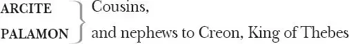
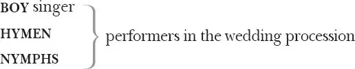

The Two Noble Kinsmen
The PROLOGUE
Thebans
THREE QUEENS , widows of besiegers of Thebes

VALERIUS
THREE KNIGHTS , Arcite's supporters
THREE KNIGHTS , Palamon's supporters
Athenians
THESEUS, Duke of Athens
PIRITHOUS, Theseus' friend
HIPPOLYTA, Amazon queen, Theseus' bride
EMILIA, Hippolyta's sister
WAITING WOMAN, attendant on Emilia
Artesius, an OFFICER of Theseus
HERALD
JAILER
JAILER'S DAUGHTER
WOOER of Jailer's daughter
JAILER'S BROTHER
TWO FRIENDS of Jailer
DOCTOR
Gerald, a SCHOOLMASTER
FIVE COUNTRYMEN : Arcas, Rycas, Sennois and two others
FIVE COUNTRYWOMEN : Barbary, Friz, Luce, Maudlin, Nell
TIMOTHY, a TABORER
Actor playing a BABOON
GENTLEMEN
EXECUTIONER
TWO MESSENGERS

The EPILOGUE
Other Servants, Guards and Attendants
Prologue
Flourish 1 . [Enter the Prologue 2 ]
New plays and maidenheads 3 are near akin:
Much followed 4 both, for both much money gi'en 5 ,
If they stand 6 sound 7 and well. And a good play —
Whose modest scenes blush on his marriage day,
And shake 8 to lose his honour — is like her
That after holy tie and first night's stir 9
Yet still is Modesty, and still retains
More of the maid, to sight, than husband's pains 10 .
We pray our play may be so, for I am sure
It has a noble breeder 11 and a pure,
A learnèd, and a poet never went 12
More famous yet 'twixt Po 13 and silver Trent 14 .
Chaucer — of all admired — the story gives,
There 15 , constant to eternity, it lives.
If we let fall 16 the nobleness of this
And the first sound this child hear be a hiss,
How will it shake the bones of that good man
And make him cry from under ground, 'O, fan 17
From me the witless chaff of such a writer
That blasts my bays 18 and my famed works makes lighter
Than Robin Hood 19 !' This is the fear we bring,
For, to say truth, it were an endless 20 thing
And too ambitious to aspire to him,
Weak as we are, and almost breathless swim
In this deep water. Do but you hold out
Your helping hands 21 and we shall tack about 22 ,
And something do to save us: you shall hear
Scenes, though below his art, may yet appear
Worth two hours' travel. To his bones sweet sleep,
Content to you. If this play do not keep
A little dull time from us, we perceive
Our losses fall so thick, we must needs leave 23 .
Flourish. [Exit ]
Act 1
Scene 1 24 / running scene 1
Music. Enter Hymen 25 with a torch burning, a Boy, in a white robe, before, singing and strewing flowers; after Hymen, a Nymph 26 , encompassed 27 in her tresses, bearing a wheaten garland 28 . Then Theseus between two other Nymphs with wheaten chaplets 29 on their heads. Then Hippolyta the bride, led by [Pirithous ], and another holding a garland over her head, her tresses likewise hanging. After her Emilia 30 , holding up her train.
The song
BOY Roses their sharp spines being gone,
Not royal in their smells alone,
But in their hue 31 .
Maiden pinks, of odour faint,
Daisies smell-less, yet most quaint 32
And sweet thyme true.
Primrose, first-born child of Ver 33 ,
Merry springtime's harbinger 34 ,
With harebells dim,
Oxlips in their cradles 35 growing,
Marigolds on deathbeds blowing 36 ,
Lark's-heels 37 trim.
All dear Nature's children sweet,
Lie 'fore bride and bridegroom's feet,
Strew flowers
Blessing their sense 38 .
Not an angel of the air,
Bird melodious, or bird fair,
Is absent hence.
The crow, the sland'rous 39 cuckoo, nor
The boding 40 raven, nor chough hoar 41
Nor chatt'ring 'pie 42 ,
May on our bride-house 43 perch or sing,
Or with them any discord bring,
But from it fly.
Enter three Queens in black, with veils stained 44 , with imperial crowns. The First Queen falls down at the foot of Theseus, the second falls down at the foot of Hippolyta, the third before Emilia
FIRST QUEEN For pity's sake and
true gentility's,
To Theseus
Hear and respect 45 me.
SECOND QUEEN For your mother's sake
To Hippolyta
And as you wish your womb may thrive with fair ones,
Hear and respect me,
THIRD QUEEN Now for the love of him whom Jove 46 hath marked
To Emilia
The honour of your bed 47 and for the sake
Of clear virginity, be advocate
For us and our distresses: this good deed
Shall raze 48 you out o'th'book of trespasses 49
All you are set down there.
THESEUS Sad lady, rise.
To First Queen
HIPPOLYTA Stand up.
To Second Queen
EMILIA No knees 50 to me.
To Third Queen
What woman I may stead 51 that is distressed
Does bind me to her.
Second and Third Queens may rise here while First
Queen continues to kneel, or all three may continue kneeling
THESEUS What's your request?
Deliver you for all.
To First Queen
FIRST QUEEN We are three queens, whose sovereigns fell before
The wrath of cruel Creon 52 , who endured
The beaks of ravens, talons of the kites
And pecks of crows in the foul fields of Thebes.
He will not suffer 53 us to burn their bones,
To urn their ashes, nor to take th'offence
Of mortal loathsomeness from the blest eye
Of holy Phoebus 54 , but infects the winds
With stench of our slain lords. O pity, duke,
Thou purger 55 of the earth, draw thy feared sword
That does good turns to th'world: give us the bones
Of our dead kings that we may chapel 56 them:
And of 57 thy boundless goodness take some note 58
That for our crownèd heads we have no roof,
Save this which is the lion's and the bear's,
And vault 59 to everything.
THESEUS Pray you, kneel not:
I was transported 60 with your speech and suffered
Your knees to wrong themselves 61 . I have heard the fortunes
Of your dead lords, which gives me such lamenting
As wakes my vengeance and revenge for 'em.—
King Capaneus was your lord.
The day
To First Queen
That he should 62 marry you, at such a season
As now it is with me, I met your groom.
By Mars's 63 altar you were that time fair:
Not Juno 64 's mantle fairer than your tresses,
Nor in more bounty spread her. Your wheaten wreath
Was then nor threshed nor blasted 65 : Fortune at you
Dimpled her cheek with smiles. Hercules 66 our kinsman —
Then weaker than your eyes — laid by his club:
He tumbled down upon his Nemean 67 hide
And swore his sinews thawed 68 . O grief and time,
Fearful consumers, you will all devour!
FIRST QUEEN O, I hope some god,
Some god hath put his mercy in your manhood,
Whereto 69 he'll infuse power, and press you forth
Our undertaker 70 .
THESEUS O, no knees, none, widow!
Unto the helmeted Bellona 71 use them,
And pray for me, your soldier.
First Queen rises
Troubled I am.
Turns away
SECOND QUEEN Honoured Hippolyta,
Kneeling
Most dreaded Amazonian, that hast slain
The scythe-tusked boar, that with thy arm, as strong
As it is white, wast 72 near to make 73 the male
To thy sex captive, but that this thy lord
Born to uphold creation in 74 that honour
First nature styled it in, shrunk thee into
The bound 75 thou wast o'er-flowing, at once subduing
Thy force and thy affection, soldieress,
That equally canst poise 76 sternness with pity,
Whom now I know hast much more power on him
Than ever he had on thee, who ow'st 77 his strength
And his love too, who is a servant for
The tenor 78 of the speech, dear glass 79 of ladies:
Bid him that we, whom flaming war doth scorch,
Under the shadow of his sword may cool us:
Require him he advance it o'er our heads.
Speak't in a woman's key 80 , like such a woman
As any of us three: weep ere you fail,
Lend us a knee 81 ,
But touch the ground for us no longer time
Than a dove's motion when the head's plucked off.
Tell him if he i'th'blood-sized 82 field lay swoll'n,
Showing the sun his teeth, grinning at the moon,
What you would do.
HIPPOLYTA Poor lady say no more:
I had as lief 83 trace 84 this good action with you
As that whereto I am going, and never yet
Went I so willing way. My lord is taken 85
Heart deep with your distress: let him consider:
I'll speak anon.
Second Queen rises
THIRD QUEEN O, my petition was
Kneel to Emilia
Set down in ice 86 , which by hot grief uncandied 87
Melts into drops: so sorrow wanting form 88
Is pressed with deeper matter 89 .
EMILIA Pray stand up:
Your grief is written in your cheek.
THIRD QUEEN O, woe,
Third Queen rises
You cannot read it there: there, through my tears,
Like wrinkled pebbles in a glass stream,
You may behold 'em — lady, lady, alack —
He that will all the treasure know o'th'earth
Must know the centre too 90 : he that will fish
For my least minnow, let him lead his line
To catch one at my heart. O, pardon me,
Extremity, that sharpens sundry wits 91 ,
Makes me a fool.
EMILIA Pray you say nothing, pray you.
Who cannot feel nor see the rain, being in't,
Knows neither wet nor dry. If that you were
The ground-piece 92 of some painter, I would buy you
T'instruct me gainst 93 a capital 94 grief indeed
Such heart-pierced demonstration: but alas,
Being a natural 95 sister of our sex,
Your sorrow beats so ardently 96 upon me
That it shall make a counter-reflect 97 gainst
My brother's heart, and warm it to some pity,
Though it were made of stone. Pray have good comfort.
THESEUS Forward to th'temple! Leave not out a jot 98
O'th'sacred ceremony.
FIRST QUEEN O, this celebration
Will longer last and be more costly than
Your suppliants' 99 war! Remember that your fame
Knolls 100 in the ear o'th'world: what you do quickly
Is not done rashly: your first thought is more
Than others' laboured meditance 101 , your pre-meditating
More than their actions. But, O Jove, your actions,
Soon as they move, as ospreys 102 do the fish,
Subdue before they touch. Think, dear duke, think
What beds our slain kings have.
SECOND QUEEN What griefs our beds,
That our dear lords have none.
THIRD QUEEN None fit for th'dead:
Those that with cords, knives, drams 103 ' precipitance 104 ,
Weary of this world's light, have to themselves
Been death's most horrid agents, humane grace
Affords them dust and shadow.
FIRST QUEEN But our lords
Lie blist'ring 'fore the visitating 105 sun,
And were good kings, when living.
THESEUS It is true, and I will give you comfort,
To give 106 your dead lords graves:
The which to do must make some work with Creon.
FIRST QUEEN And that work presents itself to th'doing 107 :
Now 'twill take form, the heats are gone tomorrow:
Then, bootless 108 toil must recompense itself
With its own sweat: now he's secure,
Not dreams, we stand before your puissance 109
Rinsing our holy begging in our eyes
To make petition clear 110 .
SECOND QUEEN Now you may take him,
Drunk with his victory.
THIRD QUEEN And his army full
Of bread and sloth.
THESEUS Artesius, that best knowest
To Officer
How to draw out 111 fit to this enterprise
The prim'st 112 for this proceeding and the number
To carry such a business, forth and levy 113
Our worthiest instruments 114 , whilst we dispatch
This grand act of our life, this daring deed
Of fate in wedlock.
FIRST QUEEN Dowagers,
To the other Queens
take hands.
Let us be widows to our woes 115 : delay
Commends us to a famishing 116 hope.
ALL QUEENS Farewell.
SECOND QUEEN We come unseasonably: but when could grief
Cull 117 forth, as unpanged 118 judgement can, fitt'st time
For best solicitation?
THESEUS Why, good ladies,
This is a service 119 , whereto I am going,
Greater than any war: it more imports 120 me
Than all the actions that I have foregone 121 ,
Or futurely can cope 122 .
FIRST QUEEN The more proclaiming 123
Our suit shall be neglected, when her arms,
Able to lock 124 Jove from a synod 125 , shall
By warranting 126 moonlight corslet 127 thee: O, when
Her twinning cherries 128 shall their sweetness fall
Upon thy taste-full 129 lips, what wilt thou think
Of rotten kings or blubbered 130 queens? What care
For what thou feel'st not,what thou feel'st being able
To make Mars spurn his drum? O, if thou couch
But one night with her, every hour in't will
Take hostage of thee for a hundred and
Thou shalt remember nothing more, than what
That banquet bids 131 thee to.
HIPPOLYTA Though much unlike 132
To Theseus
You should be so transported, as much sorry
I should be such a suitor, yet I think
Did I not by th'abstaining of my joy
Which breeds a deeper longing, cure their surfeit 133
That craves a present 134 med'cine, I should pluck 135
All ladies' scandal 136 on me. Therefore, sir
Kneels
As I shall here make trial of my prayers,
Either presuming them to have some force,
Or sentencing for aye 137 their vigour dumb,
Prorogue 138 this business we are going about and hang
Your shield afore your heart, about that neck
Which is my fee 139 and which I freely lend
To do these poor queens service.
ALL QUEENS O, help now,
To Emilia
Our cause cries for your knee.
EMILIA If you grant not
Kneels to Theseus
My sister her petition in that force,
With that celerity and nature, which
She makes it in, from henceforth I'll not dare
To ask you anything, nor be so hardy 140
Ever to take a husband.
THESEUS Pray stand up.
They rise
I am entreating of myself to do
That which you kneel to have me.— Pirithous,
Lead on the bride: get you 141 and pray the gods
For success and return: omit not anything
In the pretended 142 celebration.— Queens,
Follow your soldier.—
As before, hence you,
To Officer
And at the banks of Aulis 143 meet us with
The forces you can raise, where we shall find
The moiety 144 of a number for a business
More bigger look't 145 .—
[Exit Officer ]
Since that our theme is haste,
I stamp this kiss upon thy current 146 lip:
Sweet, keep it as my token. Set you forward,
For I will see you gone.—
[They begin to ] exeunt towards the temple
Farewell, my beauteous sister.— Pirithous,
Keep the feast full 147 , bate 148 not an hour on't.
PIRITHOUS Sir,
I'll follow you at heels: the feast's solemnity 149
Shall want 150 till your return.
THESEUS Cousin 151 , I charge you
Budge not from Athens: we shall be returning
Ere you can end this feast, of which I pray you
Make no abatement 152 .— Once more, farewell all.
[Exeunt all except Theseus and Queens ]
FIRST QUEEN Thus dost thou still make good the tongue o'th'world 153 —
SECOND QUEEN And earn'st a deity equal with Mars—
THIRD QUEEN If not above him, for
Thou, being but mortal, mak'st affections 154 bend
To godlike honours: they themselves, some say,
Groan under such a mast'ry.
THESEUS As we are men,
Thus should we do, being sensually subdued 155
We lose our human title 156 . Good cheer, ladies:
Now turn we towards your comforts.
Flourish. Exeunt
Scene 2 157 / running scene 2
Enter Palamon and Arcite
ARCITE Dear Palamon, dearer in love than blood 158
And our prime 159 cousin, yet unhardened in
The crimes of nature 160 , let us leave the city
Thebes, and the temptings in't, before we further
Sully 161 our gloss of youth
And here to keep in abstinence we shame 162
As in incontinence 163 , for not to swim
I'th'aid o'th'current, were almost to sink,
At least to frustrate striving 164 , and to follow
The common stream, 'twould bring us to an eddy 165
Where we should turn or drown: if labour through,
Our gain but life and weakness.
PALAMON Your advice
Is cried up 166 with example. What strange ruins 167
Since first we went to school, may we perceive
Walking in Thebes! Scars and bare weeds 168
The gain o'th'martialist 169 , who did propound 170
To his bold ends honour and golden ingots 171 ,
Which though he won, he had not, and now flurted 172
By peace for whom he fought. Who then shall offer
To Mars's so scorned altar? I do bleed
When such I meet and wish great Juno would
Resume her ancient fit of jealousy
To get the soldier work, that peace might purge
For her repletion 173 and retain 174 anew
Her charitable heart, now hard and harsher
Than strife or war could be.
ARCITE Are you not out 175 ?
Meet you no ruin but the soldier in
The cranks 176 and turns of Thebes? You did begin
As if you met decays of many kinds:
Perceive you none that do arouse your pity
But th'unconsidered soldier?
PALAMON Yes, I pity
Decays where'er I find them, but such most
That sweating in an honourable toil
Are paid with ice to cool 'em 177 .
ARCITE 'Tis not this
I did begin to speak of: this is virtue
Of no respect 178 in Thebes. I spake of Thebes,
How dangerous, if we will keep our honours,
It is for our residing, where every evil
Hath a good colour 179 : where every seeming good's
A certain evil: where not to be e'en jump 180
As they are here were to be strangers, and
Such things to be, mere 181 monsters.
PALAMON 'Tis in our power —
Unless we fear that apes 182 can tutor's 183 — to
Be masters of our manners. What need I
Affect 184 another's gait 185 , which is not catching 186
Where there is faith 187 , or to be fond upon 188
Another's way of speech when by mine own
I may be reasonably conceived 189 , saved too,
Speaking it truly 190 ? Why am I bound
By any generous bond 191 to follow 192 him
Follows his tailor, haply 193 so long until
The followed make pursuit 194 ? Or let me know
Why mine own barber is unblessed, with him
My poor chin too, for 195 'tis not scissored just
To such a favourite's glass 196 ? What canon 197 is there
That does command my rapier 198 from my hip
To dangle't in my hand, or to go tiptoe
Before the street be foul? Either I am
The fore-horse in the team or I am none
That draw i'th'sequent trace 199 . These poor slight sores
Need not a plantain 200 : that which tips my bosom
Almost to th'heart's—
ARCITE Our uncle Creon.
PALAMON He:
A most unbounded tyrant, whose successes
Makes heaven unfeared and villainy assured
Beyond its power there's nothing, almost puts
Faith in a fever, and deifies
Voluble 201 chance 202 alone: who only attributes
The faculties of other instruments
To his own nerves and act: commands men service,
And what they win in't, boot 203 and glory: one
That fears not to do harm, good, dares not 204 . Let
The blood of mine that's sib 205 to him be sucked
From me with leeches, let them break 206 and fall
Off me with that corruption.
ARCITE Clear-spirited 207 cousin,
Let's leave his court, that we may nothing share
Of his loud 208 infamy, for our milk
Will relish of the pasture 209 and we must
Be vile 210 or disobedient: not his kinsmen
In blood unless in quality.
PALAMON Nothing truer:
I think the echoes of his shames have deafed
The ears of heav'nly justice. Widows' cries
Descend again into their throats and have not
Enter Valerius
Due audience of 211 the gods.— Valerius!
VALERIUS The king calls for you: yet be leaden-footed 212
Till his great rage be off him. Phoebus, when
He broke his whipstock 213 and exclaimed against
The horses of the sun, but 214 whispered to
The loudness of his fury.
PALAMON Small winds shake him.
But what's the matter?
VALERIUS Theseus — who, where he threats, appals 215 — hath sent
Deadly defiance to him and pronounces
Ruin to Thebes, who is at hand to seal
The promise of his wrath 216 .
ARCITE Let him approach.
But 217 that we fear the gods in him, he brings not
A jot of terror to us. Yet what man
Thirds 218 his own worth—the case is each of ours—
When that his action's dregged 219 , with mind assured
'Tis bad he goes about?
PALAMON Leave that unreasoned 220 .
Our services stand now for Thebes, not Creon.
Yet 221 to be neutral to him were dishonour,
Rebellious to oppose: therefore we must
With him stand to the mercy of our fate,
Who hath bounded 222 our last minute.
ARCITE So we must.—
Is't said this war's afoot? Or it shall be,
To Valerius
On fail of 223 some condition?
VALERIUS 'Tis in motion.
The intelligence of state 224 came in the instant
With the defier 225 .
PALAMON Let's to the king, who, were he
A quarter-carrier of that honour which
His enemy come in, the blood we venture
Should be as for our health 226 , which were not spent 227 ,
Rather laid out for purchase 228 : but, alas,
Our hands advanced before our hearts, what will
The fall o'th'stroke do damage 229 ?
ARCITE Let th'event 230 ,
That never-erring arbitrator, tell us
When we know all ourselves, and let us follow
The becking 231 of our chance.
Exeunt
Scene 3 232 / running scene 3
Enter Pirithous, Hippolyta, Emilia
PIRITHOUS No further.
HIPPOLYTA Sir, farewell: repeat my wishes
To our great lord, of whose success I dare not
Make any timorous 233 question: yet I wish him
Excess and overflow of power, an't 234 might be
To dure 235 ill-dealing fortune. Speed 236 to him!
Store 237 never hurts good governors.
PIRITHOUS Though I know
His ocean needs not my poor drops, yet they
Must yield their tribute there.—
My precious maid,
To Emilia
Those best affections 238 that the heavens infuse
In their best-tempered pieces 239 , keep enthroned
In your dear heart.
EMILIA Thanks, sir. Remember me
To our all-royal brother, for whose speed
The great Bellona I'll solicit: and
Since in our terrene 240 state petitions are not
Without gifts understood, I'll offer to her
What I shall be advised she likes. Our hearts
Are in his army, in his tent.
HIPPOLYTA In's bosom:
We have been soldiers and we cannot weep
When our friends don their helms 241 , or put to sea,
Or tell of babes broached 242 on the lance, or women
That have sod 243 their infants in — and after eat them —
The brine they wept at killing 'em. Then if
You stay 244 to see of us such spinsters 245 , we
Should hold you here for ever.
PIRITHOUS Peace be to you
As 246 I pursue this war, which shall be then
Beyond further requiring 247 .
Exit Pirithous
EMILIA How his longing
Follows his 248 friend! Since his depart, his sports,
Though craving seriousness and skill, passed slightly 249
His careless execution 250 , where nor 251 gain
Made him regard or 252 loss consider, but
Playing one business in his hand, another
Directing in his head, his mind nurse equal
To these so-differing twins 253 . Have you observed him,
Since our great lord departed?
HIPPOLYTA With much labour 254 ,
And I did love him for't. They two have cabined 255
In many as dangerous as poor a corner,
Peril and want contending: they have skiffed 256
Torrents whose roaring tyranny and power
I'th'least of these was dreadful: and they have
Fought out together where death's self was lodged 257 .
Yet fate hath brought them off 258 : their knot of love
Tied, weaved, entangled, with so true, so long,
And with a finger of so deep a cunning 259 ,
May be outworn, never undone. I think
Theseus cannot be umpire 260 to himself,
Cleaving his conscience into twain and doing
Each side like 261 justice, which 262 he loves best.
EMILIA Doubtless
There is a best, and reason has no manners
To say it is not you. I was acquainted
Once with a time when I enjoyed 263 a play-fellow:
You were at wars when she the grave enriched,
Who made too proud 264 the bed, took leave o'th'moon —
Which then looked pale at parting — when our count 265
Was each eleven.
HIPPOLYTA 'Twas Flavina.
EMILIA Yes.
You talk of Pirithous' and Theseus' love.
Theirs has more ground 266 , is more maturely seasoned,
More buckled 267 with strong judgement, and their needs
The one of th'other may be said to water
Two hearses 268 ready with Palamon and Arcite: the three Queens, Theseus and his Lords ready
Their intertangled roots of love, but I
And she I sigh and spoke of were things innocent,
Loved for 269 we did, and like the elements
That know not what nor why, yet do effect
Rare issues by their operance 270 , our souls
Did so to one another. What she liked
Was then of me approved, what not, condemned,
No more arraignment 271 . The flower that I would pluck
And put between my breasts — O, then but beginning
To swell about the blossom — she would long
Till she had such another, and commit it
To the like innocent cradle, where phoenix 272 -like
They died in perfume 273 . On my head no toy 274
But was her pattern 275 , her affections 276 — pretty,
Though happily 277 her careless wear — I followed
For my most serious decking 278 . Had mine ear
Stol'n some new air or at adventure hummed one
From musical coinage 279 , why, it was a note
Whereon her spirits would sojourn 280 — rather dwell on —
And sing it in her slumbers. This rehearsal 281 —
Which fury innocent wots 282 well — comes in
Like old importment's 283 bastard 284 , has this end:
That the true love 'tween maid and maid may be
More than in sex dividual 285 .
HIPPOLYTA You're out of breath,
And this high-speeded pace is but to say
That you shall never — like the maid Flavina —
Love any that's called man.
EMILIA I am sure I shall not.
HIPPOLYTA Now, alack, weak sister,
I must no more believe thee in this point —
Though in't I know thou dost believe thyself —
Than I will trust a sickly appetite
That loathes even as it longs. But sure, my sister,
If I were ripe 286 for your persuasion, you
Have said enough to shake me from the arm
Of the all-noble Theseus, for whose fortunes
I will now in 287 and kneel, with great assurance
That we, more than his Pirithous, possess
The high throne in his heart.
EMILIA I am not
Against your faith, yet I continue mine.
Exeunt
Scene 4 288 / running scene 4
Cornets 289 . A battle struck within 290 , then a retreat 291 . Flourish 292 . Then enter [with a Herald, Lords and Soldiers, ] Theseus, victor 293 . The three Queens meet him, and fall on their faces before him
Palamon and Arcite are borne in on hearses
FIRST QUEEN To thee no star be dark 294 !
SECOND QUEEN Both heaven and earth
Friend thee for ever!
THIRD QUEEN All the good that may
Be wished upon thy head, I cry 'Amen' to't!
THESEUS Th'impartial gods, who from the mounted 295 heavens
View us, their mortal herd, behold who err
And in their time chastise. Go and find out
The bones of your dead lords and honour them
With treble ceremony, rather than a gap
Should be in their dear rights. We would supply't,
But those we will depute, which shall invest 296
You in your dignities and even 297 each thing
Our haste does leave imperfect. So adieu,
And heaven's good eyes look on you.—
Exeunt Queens
What are those?
Sees Palamon and Arcite
HERALD Men of great quality 298 , as may be judged
By their appointment 299 . Some of Thebes have told's
They are sisters' children, nephews to the king.
THESEUS By th'helm of Mars, I saw them in the war,
Like to a pair of lions, smeared with prey,
Make lanes 300 in troops aghast. I fixed my note
Constantly on them, for they were a mark 301
Worth a god's view. What prisoner was't that told me
When I inquired their names?
HERALD Wi'leave 302 , they're called
Arcite and Palamon.
THESEUS 'Tis right, those, those.
They are not dead?
HERALD Nor in a state of life. Had they been taken
Three hearses ready
When their last hurts were given, 'twas possible
They might have been recovered, yet they breathe
And have the name of men 303 .
THESEUS Then like men use 304 'em.
The very lees 305 of such — millions of rates 306 —
Exceed the wine of others. All our surgeons
Convent 307 in their behoof 308 , our richest balms,
Rather than niggard 309 , waste: their lives concern us
Much more than Thebes is worth. Rather than have 'em
Freed of this plight and in their morning state 310 —
Sound and at liberty — I would 311 'em dead,
But forty-thousandfold we had rather have 'em
Prisoners to us than death. Bear 'em speedily
From our kind air, to them unkind 312 , and minister
What man to man may do for our sake — more,
Since I have known frights, fury, friends' behests,
Love's provocations, zeal, a mistress' task,
Desire of liberty, a fever, madness,
Hath set a mark 313 which nature could not reach to
Without some imposition 314 , sickness in will
O'er-wrestling strength in reason. For our love
And great Apollo 315 's mercy, all our best
Their best skill tender. Lead into the city,
Where having bound things scattered 316 , we will post
To Athens 'fore our army.
Flourish. Exeunt.
Scene 5 / running scene 5
Music. Enter the Queens with the hearses of their knights in a funeral solemnity, and others
ALL Urns and odours bring away,
Sing
Vapours, sighs, darken the day:
Our dole 317 more deadly looks than dying.
Balms and gums 318 and heavy cheers 319 ,
Sacred vials filled with tears,
And clamours through the wild air flying.
Come all sad and solemn shows,
That are quick-eyed 320 Pleasure's foes:
We convent 321 naught else but woes.
We convent naught else but woes.
THIRD QUEEN This funeral path brings to your household's grave:
Joy seize on you again, peace sleep with him.
SECOND QUEEN And this to yours.
FIRST QUEEN Yours this way: heavens lend
A thousand differing ways to one sure end.
THIRD QUEEN This world's a city full of straying 322 streets,
And death's the market-place where each one meets.
Exeunt severally 323
Act 2
Scene 1 324 / running scene 6
Enter Jailer and Wooer
JAILER I may depart 325 with little while I live: something I may cast 326 to you, not much. Alas, the prison I keep, though it be for great ones, yet they seldom come: before one salmon 327 , you shall take a number of minnows 328 . I am given out 329 to be better lined 330 than it can appear to me report 331 is a true speaker: I would I were really that I am delivered 332 to be. Marry 333 , what I have, be it what it will, I will assure 334 upon my daughter at the day of my death.
WOOER Sir, I demand no more than your own offer and I will estate 335 your daughter in what I have promised.
JAILER Well, we will talk more of this when the solemnity 336 is past. But have you a full promise of 337 her?
Enter [ Jailer's ] Daughter
With rushes
When that shall be seen, I tender 338 my consent.
WOOER I have, sir. Here she comes.
JAILER Your friend and I have chanced to name 339 you here, upon the old business 340 . But no more of that now: so soon as the court hurry 341 is over, we will have an end of it. I'th'meantime, look tenderly 342 to the two prisoners: I can tell you they are princes.
JAILER'S DAUGHTER These strewings 343 are for their chamber 344 . 'Tis pity they are in prison and 'twere pity they should be out: I do think they have patience to make any adversity ashamed. The prison itself is proud of 'em and they have all the world in their chamber.
JAILER They are famed to be a pair of absolute 345 men.
JAILER'S DAUGHTER By my troth 346 , I think fame but stammers 347 'em: they stand a grise 348 above the reach of report.
JAILER I heard them reported in the battle to be the only doers 349 .
JAILER'S DAUGHTER Nay, most likely, for they are noble suff 'rers. I marvel how they would have looked had they been victors, that with such a constant nobility enforce 350 a freedom out of bondage, making misery their mirth, and affliction a toy 351 to jest at.
JAILER Do they so?
JAILER'S DAUGHTER It seems to me they have no more sense of their captivity than I of ruling Athens: they eat well, look merrily, discourse of many things, but nothing of their own restraint 352 and disasters. Yet sometime a divided 353 sigh, martyred as 'twere i'th'deliverance 354 , will break from one of them, when the other presently 355 gives it so sweet a rebuke that I could wish myself a sigh to be so chid 356 , or at least a sigher to be comforted.
WOOER I never saw 'em.
JAILER The duke himself came privately in the night, and so did they.
Enter Palamon, and Arcite above 357
In shackles
What the reason of it is, I know not. Look, yonder 358 they are: that's Arcite looks out.
JAILER'S DAUGHTER No, sir, no, that's Palamon. Arcite is the lower 359 of the twain: you may perceive a part of him.
JAILER Go to 360 , leave 361 your pointing: they would not make us their object. Out of their sight.
JAILER'S DAUGHTER It is a holiday to look on them.
Lord, the difference of 362 men!
Exeunt
Scene 2 363 / running scene 6 continues
Enter Palamon, and Arcite in prison
Above
PALAMON How do you, noble cousin?
ARCITE How do you, sir?
PALAMON Why, strong enough to laugh at misery And bear the chance 364 of war: yet we are prisoners, I fear, for ever, cousin.
ARCITE I believe it,
And to that destiny have patiently
Laid up my hour to come 365 .
PALAMON O cousin Arcite,
Where is Thebes now? Where is our noble country?
Where are our friends and kindreds 366 ? Never more
Must we behold those comforts, never see
The hardy 367 youths strive for the games of honour,
Hung with the painted favours 368 of their ladies,
Like tall ships under sail: then start 369 amongst 'em
And as an east wind leave 'em all behind us,
Like lazy clouds, whilst Palamon and Arcite
Even in the wagging 370 of a wanton 371 leg
Outstripped 372 the people's praises, won the garlands,
Ere they have time to wish 'em ours. O, never
Shall we two exercise, like twins 373 of honour,
Our arms again and feel our fiery horses
Like proud seas under us. Our good swords now—
Better the red-eyed god of war 374 ne'er wore—
Ravished 375 our sides, like age must run to rust
And deck the temples of those gods that hate us.
These hands shall never draw 'em out like lightning
To blast 376 whole armies more.
ARCITE No, Palamon,
Those hopes are prisoners with us. Here we are,
And here the graces of our youths must wither
Like a too-timely 377 spring: here age must find us,
And, which is heaviest 378 , Palamon, unmarried.
The sweet embraces of a loving wife,
Loaden with kisses, armed with thousand Cupids 379 380 ,
Shall never clasp our necks. No issue 381 know us,
No figures 382 of ourselves shall we ev'r see,
To glad 383 our age, and like young eagles teach 'em
Boldly to gaze against bright arms 384 and say,
'Remember what your fathers were, and conquer!'
The fair-eyed maids shall weep our banishments
And in their songs curse ever-blinded Fortune 385
Till she for shame see what a wrong she has done
To youth and nature. This is all our world:
We shall know nothing here but one another,
Hear nothing but the clock that tells 386 our woes.
The vine shall grow but we shall never see it:
Summer shall come and with her all delights,
But dead-cold winter must inhabit here still.
PALAMON 'Tis too true, Arcite. To our Theban hounds
That shook the agèd forest with their echoes
No more now must we hallow 387 , no more shake
Our pointed javelins whilst the angry swine 388
Flies like a Parthian 389 quiver from our rages,
Struck with our well-steeled 390 darts. All valiant uses 391 ,
The food and nourishment of noble minds,
In us two here shall perish: we shall die,
Which is the curse of honour, lastly 392 ,
Children of grief and ignorance.
ARCITE Yet, cousin,
Even from the bottom of these miseries,
From all that Fortune can inflict upon us,
I see two comforts rising, two mere 393 blessings,
If the gods please: to hold 394 here a brave patience
And the enjoying 395 of our griefs together.
Whilst Palamon is with me, let me perish
If I think this our prison.
PALAMON Certainly,
'Tis a main 396 goodness, cousin, that our fortunes
Were twined together: 'tis most true, two souls
Put in two noble bodies, let 'em suffer
The gall of hazard 397 , so they grow together,
Will never sink 398 : they must not, say 399 they could.
A willing 400 man dies sleeping 401 and all's done.
ARCITE Shall we make worthy uses of this place
That all men hate so much?
PALAMON How, gentle cousin?
ARCITE Let's think this prison holy sanctuary,
To keep us from corruption of worse men.
We are young and yet 402 desire the ways of honour,
That liberty and common 403 conversation,
The poison of pure spirits, might, like women,
Woo 404 us to wander from. What worthy blessing
Can be but our imaginations
May make it ours? And here being thus together,
We are an endless mine 405 to one another:
We are one another's wife, ever begetting 406
New births of love: we are father, friends, acquaintance,
We are, in one another, families:
I am your heir and you are mine: this place
Is our inheritance. No hard oppressor
Dare take this from us: here with a little patience
We shall live long and loving. No surfeits 407 seek us:
The hand of war hurts none here, nor the seas
Swallow their youth. Were we at liberty,
A wife might part us lawfully, or business,
Quarrels consume 408 us, envy of ill men
Crave our acquaintance. I might sicken, cousin,
Where you should never know it, and so perish
Without your noble hand to close mine eyes,
Or prayers to the gods. A thousand chances,
Were we from hence, would sever us.
PALAMON You have made me —
I thank you cousin Arcite — almost wanton 409
With my captivity: what a misery
It is to live abroad 410 and everywhere!
'Tis like a beast, methinks. I find the court here,
I am sure, a more 411 content, and all those pleasures
That woo the wills of men to vanity
I see through now, and am sufficient 412
To tell the world 'tis but a gaudy 413 shadow 414
That old Time as he passes by takes with him.
What had we been, old 415 in the court of Creon,
Where sin is justice, lust and ignorance
The virtues of the great ones? Cousin Arcite,
Had not the loving gods found this place for us,
We had died as they do, ill 416 old men, unwept,
And had their epitaphs, the people's curses.
Shall I say more?
ARCITE I would hear you still 417 .
PALAMON Ye shall.
Is there record of any two that loved
Better than we do, Arcite?
ARCITE Sure there cannot.
PALAMON I do not think it possible our friendship
Should ever leave us.
ARCITE Till our deaths it cannot.
Enter Emilia and her Woman
Below
And after death our spirits shall be led
To those that love eternally.
Speak on, sir.
Palamon sees Emilia
EMILIA This garden has a world of pleasures in't.
To her Woman
What flower is this?
WOMAN 'Tis called narcissus 418 , madam.
EMILIA That was a fair boy, certain, but a fool
To love himself. Were there not maids enough?
ARCITE Pray forward 419 .
To Palamon
PALAMON Yes.
EMILIA Or were they all hard-hearted?
WOMAN They could not be to one so fair.
EMILIA Thou wouldst not 420 .
WOMAN I think I should not, madam.
EMILIA That's a good wench 421 :
But take heed to 422 your kindness though.
WOMAN Why, mad 423 am?
EMILIA Men are mad things.
ARCITE Will ye go forward 424 , cousin?
EMILIA Canst not thou work 425 such flowers in silk, wench?
WOMAN Yes.
EMILIA I'll have a gown full of 'em, and of these.
This is a pretty colour, will't not do
Rarely 426 upon a skirt, wench?
WOMAN Dainty 427 , madam.
ARCITE Cousin, cousin, how do you, sir? Why, Palamon?
PALAMON Never till now I was in prison, Arcite.
ARCITE Why, what's the matter, man?
PALAMON Behold, and wonder.
Indicates Emilia
By heaven, she is a goddess.
ARCITE Ha!
Sees Emilia
PALAMON Do reverence:
She is a goddess, Arcite.
EMILIA Of all flowers
Methinks a rose is best.
WOMAN Why, gentle madam?
EMILIA It is the very emblem 428 of a maid.
For when the west wind courts her gently,
How modestly she blows 429 and paints the sun 430
With her chaste blushes. When the north 431 comes near her,
Rude 432 and impatient, then, like chastity,
She locks her beauties in her bud again,
And leaves him to base 433 briars 434 .
WOMAN Yet, good madam,
Sometimes her modesty will blow so far
She falls 435 for't 436 : a maid,
If she have any honour, would be loath
To take example by her.
EMILIA Thou art wanton 437 .
ARCITE She is wondrous fair.
PALAMON She is all the beauty extant 438 .
EMILIA The sun grows high, let's walk in. Keep these flowers:
We'll see how near art 439 can come near their colours.
I am wondrous merry-hearted, I could laugh now.
WOMAN I could lie down 440 , I am sure.
EMILIA And take one 441 with you?
WOMAN That's as we bargain 442 , madam,
EMILIA Well, agree then.
Exeunt Emilia and Woman
PALAMON What think you of this beauty?
ARCITE 'Tis a rare one.
PALAMON Is't but 443 a rare one?
ARCITE Yes, a matchless beauty,
PALAMON Might not a man well lose himself and love her?
ARCITE I cannot tell what you have done. I have,
Beshrew 444 mine eyes for't: now I feel my shackles.
PALAMON You love her then?
ARCITE Who would not?
PALAMON And desire her?
ARCITE Before my liberty.
PALAMON I saw her first.
ARCITE That's nothing.
PALAMON But it shall be.
ARCITE I saw her too.
PALAMON Yes, but you must not love her.
ARCITE I will not as you do, to worship her
As she is heavenly and a blessèd goddess.
I love her as a woman, to enjoy 445 her:
So both may love.
PALAMON You shall not love at all.
ARCITE Not love at all?
Who shall deny 446 me?
PALAMON I that first saw her, I that took possession
First with mine eye of all those beauties
In her revealed to mankind. If thou lov'st her,
Or entertain'st a hope to blast 447 my wishes,
Thou art a traitor, Arcite, and a fellow 448
False as thy title 449 to her: friendship, blood 450
And all the ties between us I disclaim
If thou once think upon 451 her.
ARCITE Yes, I love her
And if the lives of all my name 452 lay 453 on it,
I must do so. I love her with my soul:
If that will lose ye, farewell, Palamon.
I say again, I love, and in loving her maintain
I am as worthy and as free 454 a lover,
And have as just a title to her beauty,
As any Palamon or any living
That is a man's son.
PALAMON Have I called thee friend?
ARCITE Yes, and have found me so: why are you moved 455 thus?
Let me deal coldly 456 with you: am not I
Part of your blood, part of your soul? You have told me
That I was Palamon and you were Arcite
PALAMON Yes.
ARCITE Am not I liable to those affections 457 ,
Those joys, griefs, angers, fears, my friend shall suffer?
PALAMON Ye may be.
ARCITE Why then would you deal so cunningly 458 ,
So strangely 459 , so unlike a noble kinsman,
To love alone? Speak truly: do you think me
Unworthy of her sight?
PALAMON No, but unjust 460
If thou pursue that sight.
ARCITE Because another
First sees the enemy, shall I stand still
And let mine honour down 461 , and never charge?
PALAMON Yes, if he be but one.
ARCITE But say that one
Had rather combat me?
PALAMON Let that one say so,
And use thy freedom: else if thou pursuest her,
Be as that cursèd man that hates his country,
A branded 462 villain.
ARCITE You are mad.
PALAMON I must be
Till thou art worthy 463 , Arcite: it concerns me.
And in this madness, if I hazard 464 thee
And take thy life, I deal but truly.
ARCITE Fie 465 , sir.
You play the child 466 extremely. I will love her:
I must, I ought to do so, and I dare,
And all this justly 467 .
PALAMON O that now, that now
Thy false self and thy friend had but this fortune:
To be one hour at liberty and grasp
Our good swords in our hands! I would quickly teach thee
What 'twere to filch 468 affection from another.
Thou art baser 469 in it than a cutpurse 470 ;
Put but thy head out of this window more 471 ,
And as I have a soul, I'll nail thy life to't 472 .
ARCITE Thou dar'st not, fool, thou canst not, thou art feeble.
Put my head out? I'll throw my body out
And leap the garden, when I see her next,
Enter Keeper [ Jailer ]
And pitch 473 between her arms to anger thee.
PALAMON No more: the keeper's coming. I shall live
To knock thy brains out with my shackles.
ARCITE Do!
JAILER By your leave 474 , gentlemen.
PALAMON Now, honest keeper?
JAILER Lord Arcite, you must presently to th'duke:
The cause I know not yet.
ARCITE I am ready, keeper.
JAILER Prince Palamon, I must awhile bereave 475 you
Of your fair cousin's company.
Exeunt Arcite and Keeper
PALAMON And me too,
Even, when you please, of life. Why is he sent for?
It may be he shall marry her: he's goodly 476
And like enough the duke hath taken notice
Both of his blood 477 and body. But his falsehood 478 !
Why should a friend be treacherous? If that
Get him a wife so noble and so fair,
Let honest men ne'er love again. Once more
I would but see this fair one. Blessèd garden
And fruit and flowers more blessèd that still blossom
As her bright eyes shine on ye: would I were
For all the fortune of my life hereafter
Yon 479 little tree, yon blooming apricock 480 !
How I would spread and fling my wanton arms
In at her window 481 ! I would bring her fruit 482
Fit for the gods to feed on: youth and pleasure
Still as 483 she tasted should be doubled on her
And if she be not heavenly, I would make her
So near the gods in nature, they should fear her,
Enter Keeper [ Jailer ]
And then I am sure she would love me.— How now, keeper,
Where's Arcite?
JAILER Banished. Prince Pirithous
Obtained his liberty, but never more
Upon his oath and life must he set foot
Upon this kingdom.
PALAMON He's a blessèd man.
He shall see Thebes again, and call to arms
The bold young men that, when he bids 'em charge,
Fall on 484 like fire. Arcite shall have a fortune 485 ,
If he dare make himself a worthy lover,
Yet in the field to strike a battle 486 for her:
And if he lose her then, he's a cold coward.
How bravely may he bear himself to win her
If he be noble Arcite. Thousand ways!
Were I at liberty, I would do things
Of such a virtuous greatness, that this lady,
This blushing virgin, should take manhood to her
And seek to ravish me.
JAILER My lord, for you
I have this charge 487 too.
PALAMON To discharge my life?
JAILER No, but from this place to remove your lordship:
The windows are too open 488 .
PALAMON Devils take 'em
That are so envious to me! Prithee 489 kill me.
JAILER And hang for't afterward.
PALAMON By this good light 490 ,
Had I a sword I would kill thee.
JAILER Why, my lord?
PALAMON Thou bring'st such pelting 491 scurvy 492 news continually,
Thou art not worthy life. I will not go.
JAILER Indeed you must, my lord.
PALAMON May I see the garden?
JAILER No.
PALAMON Then I am resolved: I will not go.
JAILER I must constrain you then: and for 493 you are dangerous 494
I'll clap more irons on you.
PALAMON Do, good keeper.
I'll shake 'em so, ye shall not sleep:
I'll make ye a new morris 495 . Must I go?
JAILER There is no remedy.
PALAMON Farewell, kind window.
May rude wind never hurt thee.— O my lady,
If ever thou hast felt what sorrow was,
Dream how I suffer.— Come, now bury me.
Exeunt Palamon and Keeper
Scene 3 496 / running scene 7
Enter Arcite
ARCITE Banished the kingdom? 'Tis a benefit,
A mercy I must thank 'em for: but banished
The free enjoying of that face I die for,
O, 'twas a studied 497 punishment, a death
Beyond imagination: such a vengeance
That were I old and wicked, all my sins
Could never pluck 498 upon me. Palamon,
Thou hast the start now: thou shalt stay and see
Her bright eyes break 499 each morning gainst thy window
And let in life into thee: thou shalt feed
Upon the sweetness of a noble beauty
That nature ne'er exceeded nor ne'er shall.
Good gods! What happiness has Palamon!
Twenty to one, he'll come to speak to her,
And if she be as gentle as she's fair,
I know she's his: he has a tongue will tame
Tempests 500 and make the wild rocks wanton 501 .
Come what can come,
The worst is death: I will not leave the kingdom.
I know mine own 502 is but a heap of ruins
And no redress 503 there. If I go, he has her.
I am resolved another shape 504 shall make 505 me
Or end my fortunes. Either way, I am happy:
I'll see her and be near her, or no more.
Arcite stands aside
Enter four Country People and one with a garland before them
FIRST COUNTRYMAN My masters, I'll be there, that's certain.
SECOND COUNTRYMAN And I'll be there.
THIRD COUNTRYMAN And I.
FOURTH COUNTRYMAN Why then, have with ye 506 , boys. 'Tis but a chiding 507 .
Let the plough play today, I'll tickle't 508 out
Of the jades 509 ' tails 510 tomorrow.
FIRST COUNTRYMAN I am sure
To have my wife as jealous as a turkey 511 .
But that's all one 512 : I'll go through, let her mumble 513 .
SECOND COUNTRYMAN Clap her aboard 514 tomorrow night and stow 515 her,
And all's made up 516 again.
THIRD COUNTRYMAN Ay, do but put
A fescue 517 in her fist and you shall see her
Take a new lesson out 518 and be a good wench.
Do we all hold against 519 the maying 520 ?
FOURTH COUNTRYMAN Hold? What should ail 521 us?
THIRD COUNTRYMAN Arcas will be there.
SECOND COUNTRYMAN And Sennois, and Rycas, and three better lads ne'er danced under green tree, and ye know what wenches, ha? But will the dainty 522 domine 523 , the schoolmaster, keep touch 524 do you think? For he does all 525 , ye know.
THIRD COUNTRYMAN He'll eat a hornbook 526 ere he fail.
Go to: the matter's too far driven 527 between him and the tanner's daughter to let slip 528 now, and she must see 529 the duke and she must dance too.
FOURTH COUNTRYMAN Shall we be lusty 530 ?
SECOND COUNTRYMAN All the boys in Athens blow wind i'th'breech 531 on's 532 , and here I'll be, and there I'll be for our town and here again, and there again — ha, boys, hey 533 for the weavers!
FIRST COUNTRYMAN This must be done i'th'woods.
FOURTH COUNTRYMAN O, pardon me 534 .
SECOND COUNTRYMAN By any means 535 : our thing of learning 536 says so: where he himself will edify 537 the duke most parlously 538 in our behalfs. He's excellent i'th'woods: bring him to th'plains, his learning makes no cry 539 .
THIRD COUNTRYMAN We'll see the sports, then every man to's tackle 540 . And, sweet companions, let's rehearse by any means before the ladies see us and do 541 sweetly and God knows what may come on't.
FOURTH COUNTRYMAN Content 542 : the sports once ended, we'll perform.
Away, boys and— hold 543 .
Arcite comes forward
ARCITE By your leaves honest friends:
Pray you, whither go you 544 ?
FOURTH COUNTRYMAN Whither? Why, what a question's that?
ARCITE Yes, 'tis a question,
To me that know not.
THIRD COUNTRYMAN To the games, my friend.
SECOND COUNTRYMAN Where were you bred, you know it not?
ARCITE Not far, sir.
Are there such games today?
FIRST COUNTRYMAN Yes, marry 545 , are there
And such as you never saw. The duke himself
Will be in person there.
ARCITE What pastimes are they?
SECOND COUNTRYMAN Wrestling, and running.—
'Tis a pretty 546 fellow.
THIRD COUNTRYMAN Thou wilt not go along?
ARCITE Not yet, sir.
FOURTH COUNTRYMAN Well, sir,
Take your own time.— Come, boys.
FIRST COUNTRYMAN My mind misgives me 547
Aside to the others
This fellow has a vengeance 548 trick o'th'hip 549 :
Mark how his body's made for't
SECOND COUNTRYMAN I'll be hanged though
If he dare venture. Hang him, plum-porridge 550 !
He wrestle? He roast eggs! 551 Come let's be gone lads.
Exeunt four [Countrymen ]
ARCITE This is an offered opportunity
I durst 552 not wish for. Well, I could have wrestled 553 —
The best men called it excellent — and run
Swifter than wind upon a field of corn,
Curling the wealthy 554 ears 555 , never 556 flew. I'll venture
And in some poor disguise be there. Who knows
Whether my brows may not be girt 557 with garlands
And happiness prefer 558 me to a place
Where I may ever dwell in sight of her?
Exit Arcite
Scene 4 559 / running scene 8
Enter Jailer's Daughter alone
JAILER'S DAUGHTER Why should I love this gentleman? 'Tis odds 560
He never will affect 561 me: I am base 562 ,
My father the mean 563 keeper of his prison,
And he a prince. To marry him is hopeless,
To be his whore is witless 564 . Out upon't! 565
What pushes 566 are we wenches driven to
When fifteen once has found us 567 ! First, I saw him:
I, seeing, thought he was a goodly man:
He has as much to please a woman in him,
If he please to bestow 568 it so, as ever
These eyes yet looked on. Next, I pitied him:
And so would any young wench o'my conscience
That ever dreamed, or vowed her maidenhead 569
To a young handsome man. Then, I loved him,
Extremely loved him, infinitely loved him!
And yet he had a cousin, fair as he too.
But in my heart was Palamon, and there,
Lord, what a coil he keeps 570 ! To hear him
Sing in an evening, what a heaven it is!
And yet his songs are sad ones. Fairer spoken
Was never gentleman. When I come in
To bring him water in a morning, first
He bows his noble body, then salutes 571 me, thus:
'Fair gentle maid, good morrow. May thy goodness
Get thee a happy husband.' Once he kissed me.
I loved my lips the better ten days after:
Would he would do so every day! He grieves much,
And me as much to see his misery.
What should I do to make him know I love him?
For I would fain 572 enjoy 573 him. Say I ventured
To set him free? What says the law then? Thus much
For law or kindred! I will do it,
And this night, or tomorrow, he shall love me.
Exit
Scene 5 574 / running scene 9
This short flourish of cornets and shouts within
Enter Theseus, Hippolyta, Pirithous, Emilia, Arcite with a garland, and others
THESEUS You have done worthily.
To Arcite
I have not seen,
Since Hercules 575 , a man of tougher sinews 576 .
Whate'er 577 you are, you run the best and wrestle,
That these times can allow 578 .
ARCITE I am proud to please you.
THESEUS What country bred you?
ARCITE This: but far off, prince.
THESEUS Are you a gentleman?
ARCITE My father said so,
And to those gentle uses 579 gave me life 580 .
THESEUS Are you his heir?
ARCITE His youngest, sir.
THESEUS Your father
Sure is a happy sire, then. What proves you? 581
ARCITE A little of all noble qualities 582 :
I could have 583 kept a hawk and well have hollowed
To a deep cry of dogs: I dare not praise
My feat in horsemanship, yet they that knew me
Would say it was my best piece 584 : last and greatest,
I would be thought a soldier.
THESEUS You are perfect 585 .
PIRITHOUS Upon my soul, a proper 586 man.
To Emilia
EMILIA He is so.
PIRITHOUS How do you like him, lady?
To Hippolyta
HIPPOLYTA I admire him.
I have not seen so young a man so noble,
If he say true, of his sort 587 .
EMILIA Believe 588 ,
His mother was a wondrous handsome woman:
His face, methinks, goes that way 589 .
HIPPOLYTA But his body
And fiery mind illustrate 590 a brave father.
PIRITHOUS Mark how his virtue, like a hidden sun,
Breaks through his baser garments.
HIPPOLYTA He's well got 591 , sure.
THESEUS What made you seek
To Arcite
this place, sir?
ARCITE Noble Theseus,
To purchase name 592 and do my ablest service
To such a well-found 593 wonder as thy worth,
For only in thy court, of all the world,
Dwells fair-eyed honour.
PIRITHOUS All his words are worthy.
THESEUS Sir, we are much indebted
To Arcite
to your travel 594 ,
Nor shall you lose your wish.— Pirithous,
Dispose of 595 this fair gentleman.
PIRITHOUS Thanks, Theseus.—
Whate'er you are, you're mine,
To Arcite
and I shall give you
To a most noble service,
Presents him to Emilia
to this lady,
This bright young virgin. Pray observe 596 her goodness.
You have honoured her fair birthday with your virtues,
And as your due, you're hers: kiss her fair hand, sir.
ARCITE Sir, you're a noble giver.— Dearest beauty,
Thus let me seal my vowed faith: when your servant,
Kisses her hand
Your most unworthy creature, but offends you,
Command him die, he shall.
EMILIA That were too cruel.
If you deserve well, sir, I shall soon see't.
You're mine and somewhat better than your rank
I'll use 597 you.
PIRITHOUS I'll see you furnished 598 ,
To Arcite
and because you say
You are a horseman, I must needs 599 entreat you
This afternoon to ride, but 'tis a rough one 600 .
ARCITE I like him better, prince. I shall not then Freeze in my saddle.
THESEUS Sweet, you must be ready.—
To Hippolyta
And you, Emilia— and you, friend— and all,
To Pirithous
Tomorrow by the sun, to do observance 601
To flow'ry May, in Dian 602 's wood.—
Wait well, sir,
To Arcite
Upon your mistress.— Emily, I hope
He shall not go afoot 603 .
EMILIA That were a shame, sir,
While I have horses.—
Take your choice and what
To Arcite
You want 604 at any time, let me but know it:
If you serve faithfully, I dare assure you
You'll find a loving mistress.
ARCITE If I do not,
Let me find that 605 my father ever hated,
Disgrace and blows.
THESEUS Go lead the way: you have won it.
It shall be so: you shall receive all dues
Fit for the honour you have won; 'twere wrong else.—
Sister, beshrew my heart 606 , you have a servant
That, if I were a woman, would be master.
But you are wise.
EMILIA I hope too wise for that, sir.
Flourish. Exeunt
Scene 6 607 / running scene 10
Enter Jailer's Daughter alone
JAILER'S DAUGHTER Let all the dukes and all the devils roar,
He is at liberty: I have ventured 608 for him
And out I have brought him, to a little wood
A mile hence 609 I have sent him, where a cedar,
Higher than all the rest spreads like a plane
Fast 610 by a brook, and there he shall keep close 611
Till I provide him files and food, for yet
His iron bracelets are not off. O Love,
What a stout-hearted child thou art! My father
Durst better have endured 612 cold iron 613 than done it.
I love him beyond love and beyond reason,
Or wit 614 , or safety. I have made him know it:
I care not, I am desperate. If the law
Find me and then condemn me for't, some wenches,
Some honest-hearted maids, will sing my dirge 615
And tell to memory my death was noble,
Dying almost a martyr. That way he takes,
I purpose 616 is my way too. Sure he cannot
Be so unmanly as to leave me here:
If he do, maids will not so easily
Trust men again. And yet he has not thanked me
For what I have done, no, not so much as kissed me,
And that methinks is not so well: nor scarcely
Could I persuade him to become a freeman,
He made such scruples of the wrong he did
To me and to my father. Yet I hope,
When he considers more, this love of mine
Will take more root within him. Let him do
What he will with me, so he use me kindly 617 ,
For use me so he shall, or I'll proclaim him,
And to his face, no man 618 . I'll presently
Provide him necessaries and pack my clothes up
And where there is a path of ground I'll venture,
So 619 he be with me. By him, like a shadow,
I'll ever dwell. Within this hour the hubbub
Will be all o'er the prison: I am then
Kissing the man they look for.— Farewell, father,
Get many more such prisoners and such daughters
And shortly you may keep yourself 620 .— Now to him.
[Exit ]
Act 3
Scene 1 621 / running scene 11
Cornets in sundry places. Noise and hallooing as people a-Maying
Enter Arcite alone
ARCITE The duke has lost Hippolyta: each took
A several 622 laund 623 . This is a solemn rite
They owe bloomed 624 May and the Athenians pay it
To th'heart of ceremony 625 . O, Queen Emilia,
Fresher than May, sweeter
Than her gold buttons 626 on the boughs, or all
Th'enamelled knacks 627 o'th'mead 628 or garden, yea 629 ,
We challenge too the bank of any nymph
That makes the stream seem flowers 630 : thou, O jewel
O'th'wood, o'th'world, hast likewise blest a pace 631
With thy sole presence 632 : in thy rumination,
That I, poor man, might eftsoons 633 come between
And chop 634 on some cold thought. Thrice-blessèd chance
To drop on 635 such a mistress, expectation
Most guiltless on't 636 ! Tell me, O Lady Fortune,
Next after Emily, my sovereign, how far
I may be proud 637 . She takes strong note 638 of me,
Hath made me near her, and this beauteous morn,
The prim'st 639 of all the year, presents me with
A brace 640 of horses: two such steeds might well
Be by a pair of kings backed 641 , in a field 642
That their crowns' titles tried 643 . Alas, alas,
Poor cousin Palamon, poor prisoner, thou
So little dream'st upon 644 my fortune, that
Thou thinkst thyself the happier thing to be
So near Emilia. Me thou deem'st 645 at Thebes,
And therein 646 wretched, although free: but if
Thou knew'st my mistress breathed on me, and that
I eared 647 her language, lived in her eye, O coz,
What passion 648 would enclose 649 thee!
Enter Palamon as out of a bush, with his shackles: bends his fist at Arcite
PALAMON Traitor kinsman,
Thou shouldst perceive my passion, if these signs
Of prisonment were off me and this hand
But owner of a sword! By all oaths in one,
I and the justice of my love would make thee
A confessed traitor, O thou most perfidious 650
That ever gently looked, the void'st 651 of honour
That ever bore gentle token 652 , falsest cousin
That ev'r blood made kin: call'st thou her thine?
I'll prove it in my shackles, with these hands,
Void of appointment 653 , that thou liest, and art
A very thief in love, a chaffy 654 lord
Not worth the name of villain. Had I a sword
And these house-clogs 655 away—
ARCITE Dear cousin Palamon—
PALAMON Cozener 656 Arcite, give me language such
As thou hast showed me feat 657 .
ARCITE Not finding in
The circuit 658 of my breast any gross 659 stuff 660
To form me like your blazon 661 holds me to
This gentleness of answer: 'tis your passion
That thus mistakes, the which to you being enemy,
Cannot to me be kind: honour and honesty
I cherish and depend on, howsoev'r
You skip 662 them in me, and with them, fair coz,
I'll maintain 663 my proceedings. Pray be pleased
To show in generous 664 terms your griefs, since that
Your question's 665 with your equal, who professes
To clear his own way 666 with the mind and sword
Of a true gentleman.
PALAMON That thou durst, Arcite!
ARCITE My coz, my coz, you have been well advertised 667
How much I dare: you've seen me use my sword
Against th'advice of fear. Sure, of another
You would not hear me doubted 668 , but your silence
Should break out, though i'th'sanctuary 669 .
PALAMON Sir,
I have seen you move in such a place which well
Might justify your manhood. You were called
A good knight and a bold: but the whole week's not fair
If any day it rain: their valiant temper 670
Men lose when they incline to treachery
And then they fight like compelled bears 671 , would fly
Were they not tied.
ARCITE Kinsman, you might as well
Speak this and act it in your glass 672 as to
His ear which now disdains you.
PALAMON Come up 673 to me:
Quit 674 me of these cold gyves 675 , give me a sword
Though it be rusty, and the charity
Of one meal lend me. Come before me then,
A good sword in thy hand, and do but say
That Emily is thine: I will forgive
The trespass thou hast done me, yea, my life
If then thou carry't 676 , and brave souls in shades 677
That have died manly, which will seek of me
Some news from earth, they shall get none but this:
That thou art brave, and noble.
ARCITE Be content:
Again betake 678 you to your hawthorn house.
With counsel 679 of the night 680 , I will be here
With wholesome viands 681 ; these impediments
Will I file off: you shall have garments and
Perfumes to kill the smell o'th'prison: after,
Whenyou shall stretch yourself and say but, 'Arcite,
I am in plight 682 ', there shall be at your choice
Both sword and armour.
PALAMON O you heavens, dares any
So nobly bear a guilty 683 business? None
But only Arcite: therefore none but Arcite
In this kind is so bold 684 .
ARCITE Sweet Palamon.
Moves to embrace him
PALAMON I do embrace you and your offer. For
Your offer do't I only, sir: your person
Without hypocrisy I may not wish
Wind 685 horns 686 off, cornets
More than my sword's edge on't.
ARCITE You hear the horns;
Enter your musit 687 , lest this match between's
Be crossed 688 ere met. Give me your hand, farewell.
I'll bring you every needful thing: I pray you
Take comfort and be strong.
PALAMON Pray hold your promise
And do the deed with a bent brow 689 . Most certain
You love me not: be rough with me and pour
This oil 690 out of your language. By this air,
I could for each word give a cuff 691 , my stomach 692
Not reconciled by reason.
ARCITE Plainly spoken,
Yet pardon me 693 hard 694 language. When I spur
Wind horns
My horse I chide him not: content and anger
In me have but one face 695 . Hark, sir, they call
The scattered to the banquet: you must guess
I have an office 696 there.
PALAMON Sir, your attendance
Cannot please heaven and I know your office
Unjustly 697 is achieved.
ARCITE 'Tis a good title 698 .
I am persuaded this question 699 , sick between's,
By bleeding 700 must be cured. I am a suitor 701
That to your sword you will bequeath this plea 702
And talk of it no more.
PALAMON But this one word:
You are going now to gaze upon my mistress,
For, note you, mine she is.
ARCITE Nay, then.
PALAMON Nay pray you!
You talk of feeding me to breed me strength.
You are going now to look upon a sun
That strengthens what it looks on: there
You have a vantage o'er me, but enjoy't till
I may enforce my remedy 703 . Farewell.
Exeunt
Scene 2 / running scene 11 continues
Enter Jailer's Daughter alone
With a file
JAILER'S DAUGHTER He has mistook the brake 704 I meant, is gone
After his fancy 705 . 'Tis now well-nigh 706 morning.
No matter: would it were perpetual night,
And darkness lord o'th'world! Hark 'tis a wolf!
In me hath grief slain fear and but for one thing
I care for nothing and that's Palamon.
I wreak 707 not if the wolves would jaw 708 me, so 709
He had this file. What if I hallooed 710 for him?
I cannot hallow. If I whooped, what then?
If he not answered, I should call a wolf,
And do him but that service 711 . I have heard
Strange howls this livelong 712 night: why may't not be
They have made prey of him? He has no weapons,
He cannot run: the jangling of his gyves
Might call fell 713 things to listen, who have in them
A sense to know a man unarmed and can
Smell where resistance is. I'll set it down 714
He's torn to pieces: they howled many together
And then they fed on him. So much for that:
Be bold to ring the bell 715 . How stand I then?
All's chared 716 when he is gone. No, no, I lie:
My father's to be hanged for his escape,
Myself to beg, if I prized life so much
As to deny my act, but that I would not,
Should I try death by dozens 717 . I am moped 718 :
Food took I none these two days,
Sipped some water. I have not closed mine eyes
Save when my lids scoured off their brine 719 . Alas,
Dissolve 720 , my life! Let not my sense unsettle
Lest I should drown, or stab, or hang myself.
O, state of nature 721 , fail together 722 in me,
Since thy best props are warped! So which way now?
The best way is the next way to a grave:
Each errant 723 step beside 724 is torment. Lo,
Themoon is down, the crickets chirp, the screech-owl
Calls in the dawn. All offices 725 are done
Save what I fail in 726 . But the point is this:
An end, and that is all.
Exit
Scene 3 / running scene 11 continues
Enter Arcite, with meat, wine and files
ARCITE I should be near the place. Ho! Cousin
Palamon!
Enter Palamon
Hesitantly
PALAMON Arcite?
ARCITE The same: I have brought you food and files.
Come forth and fear not, here's no Theseus.
PALAMON Nor none so honest, Arcite.
ARCITE That's no matter 727 ,
We'll argue that hereafter 728 . Come, take courage:
You shall not die thus beastly 729 . Here, sir, drink —
I know you are faint—then I'll talk further with you.
PALAMON Arcite, thou mightst now poison me.
ARCITE I might:
But I must fear you first. Sit down, and good now 730
No more of these vain parleys 731 : let us not,
Having our ancient 732 reputation with us,
Make talk for fools and cowards. To your health, sir!
Drinks
PALAMON Do 733 .
ARCITE Pray sit down then, and let me entreat you
By all the honesty and honour in you,
No mention of this woman: 'twill disturb us.
We shall have time enough.
PALAMON Well, sir, I'll pledge 734 you.
Drinks
ARCITE Drink a good hearty draught: it breeds good blood 735 , man.
Do not you feel it thaw you?
PALAMON Stay 736 , I'll tell you after a draught or two more.
ARCITE Spare it not,
The duke has more, coz. Eat now.
PALAMON Yes.
Eats
ARCITE I am glad you have so good a stomach 737 .
PALAMON I am gladder I have so good meat to't.
ARCITE Is't not mad lodging 738 , here in the wild woods 739 , cousin?
PALAMON Yes, for them that have wild 740 consciences.
ARCITE How tastes your victuals? Your hunger needs no sauce 741 I see.
PALAMON Not much.
But if it did, yours is too tart, sweet cousin. What is this?
ARCITE Venison.
PALAMON 'Tis a lusty 742 meat:
Give me more wine. Here, Arcite, to the wenches
We have known in our days. The lord steward's daughter —
Do you remember her?
ARCITE After you, coz.
PALAMON She loved a black-haired man—
ARCITE She did so: well, sir?
PALAMON And I have heard some call him Arcite, and—
ARCITE Out with't, faith!
PALAMON She met him in an arbour.
What did she there, coz? Play o'th'virginals 743 ?
ARCITE Something 744 she did, sir—
PALAMON Made her groan 745 a month for't, or two, or three, or ten.
ARCITE The marshall's sister
Had her share too, as I remember, cousin,
Else there be tales 746 abroad 747 . You'll pledge her?
PALAMON Yes.
ARCITE A pretty brown wench 'tis. There was a time
When young men went a-hunting, and a wood,
And a broad beech: and thereby hangs a tale — hey ho 748 .
PALAMON For Emily, upon my life! Fool,
Away with this strained 749 mirth! I say again,
That sigh was breathed for Emily. Base cousin,
Dar'st thou break 750 first?
ARCITE You are wide 751 .
PALAMON By heaven and earth, there's nothing in thee honest.
ARCITE Then I'll leave you: you are a beast now.
PALAMON As thou mak'st me, traitor.
ARCITE There's all things needful: files and shirts, and perfumes.
I'll come again some two hours hence, and bring
That that shall quiet all.
PALAMON A sword and armour.
ARCITE Fear 752 me not. You are now too foul 753 , farewell.
Get off your trinkets 754 , you shall want nought.
PALAMON Sirrah—
ARCITE I'll hear no more.
Exit
PALAMON If he keep touch 755 , he dies for't.
Exit
Scene 4 / running scene 11 continues
Enter Jailer's Daughter
JAILER'S DAUGHTER I am very cold and all the stars are out too,
The little stars and all, that look like aglets 756 :
The sun has seen my folly.— Palamon!—
Alas no, he's in heaven. Where am I now?
Yonder's the sea and there's a ship: how't tumbles 757 !
And there's a rock lies watching under water:
Now, now, it beats upon it: now, now, now,
There's a leak sprung 758 , a sound 759 one. How they cry!
Run her 760 before the wind, you'll lose all else.
Up with a course 761 or two and tack about 762 , boys!
Goodnight, goodnight, you're gone.— I am very hungry.
Would I could find a fine frog: he would tell me
News from all parts o'th'world: then would I make
A carrack 763 of a cockleshell 764 and sail
By east and north-east to the king of pygmies,
For he tells fortunes rarely 765 . Now my father
Twenty to one is trussed up 766 in a trice 767
Tomorrow morning. I'll say never a word.
For I'll cut my green coat,
Sings
a foot above my knee
And I'll clip my yellow locks, an inch
below mine eye.
Hey, nonny 768 , nonny, nonny.
He's 769 buy me a white cut 770 , forth for to ride 771 ,
And I'll go seek him, through the world
that is so wide.
Hey, nonny, nonny, nonny.
O, for a prick 772 now like a nightingale,
To put my breast against. I shall sleep like a top 773 else.
Exit
Scene 5 / running scene 11 continue
Enter a Schoolmaster, four Countrymen, and [one disguised as a ] Baboon, two or three Wenches, with a Taborer 774
SCHOOLMASTER Fie, fie, what tediosity 775 and disinsanity 776 is here among ye? Have my rudiments 777 been laboured so long with ye? Milked unto ye, and by a figure 778 , even the very plum-broth and marrow 779 of my understanding laid upon ye? And do you still cry 'Where?' and 'How?' and 'Wherefore?' You most coarse-frieze 780 capacities 781 , ye jean 782 judgements, have I said 'Thus let be' and 'There let be' and 'Then let be', and no man understand me? Proh deum 783 ! Medius Fidius 784 ! Ye are all dunces. For why? Here stand I. Here the duke comes: there are you, close 785 in the thicket: the duke appears: I meet him and unto him I utter learnèd things and many figures: he hears and nods and hums 786 and then cries 'Rare!' 787 and I go forward 788 . At length I fling my cap up—mark there! Then do you, as once did Meleager 789 and the boar, break comely 790 out before him: like true lovers 791 , cast yourselves in a body 792 decently 793 and sweetly, by a figure, trace 794 and turn, boys.
FIRST COUNTRYMAN And sweetly we will do it, Master Gerald.
SECOND COUNTRYMAN Draw 795 up the company.Where's the taborer?
THIRD COUNTRYMAN Why, Timothy!
TABORER Here, my mad boys, have at ye 796 .
SCHOOLMASTER But I say, where's their women?
FOURTH COUNTRYMAN Here's Friz and Maudlin.
SECOND COUNTRYMAN And little Luce with the white legs and bouncing 797 Barbary 798 .
FIRST COUNTRYMAN And freckled Nell that never failed her master.
SCHOOLMASTER Where be your ribbons maids? Swim 799 with your bodies
And carry it sweetly and deliverly 800
And now and then a favour 801 and a frisk 802 .
NELL Let us alone 803 , sir.
SCHOOLMASTER Where's the rest o'th'music 804 ?
THIRD COUNTRYMAN Dispersed as you commanded.
SCHOOLMASTER Couple 805 then
And see what's wanting 806 . Where's the bavian 807 ?—
My friend, carry your tail 808 without offence
Or scandal to the ladies, and be sure
You tumble 809 with audacity and manhood 810 ,
And when you bark do it with judgement.
BABOON Yes, sir.
SCHOOLMASTER Quo usque tandem 811 ? Here is a woman wanting 812 .
FOURTH COUNTRYMAN We may go whistle 813 : all the fat's i'th'fire 814 .
SCHOOLMASTER We have,
As learnèd authors utter, washed a tile 815 ,
We have been fatuus 816 and laboured vainly.
SECOND COUNTRYMAN This is that scornful piece 817 , that scurvy hilding 818
That gave her promise faithfully, she would be here:
Cicely, the sempster 819 's daughter.
The next gloves that I give her shall be dogskin 820 !
Nay, an 821 she fail me once, you can tell, Arcas,
She swore by wine and bread she would not break 822 .
SCHOOLMASTER An eel and woman,
A learnèd poet says 823 , unless by th'tail
And with thy teeth thou hold, will either 824 fail.
In manners this was false position 825 .
FIRST COUNTRYMAN A fire ill 826 take her: does she flinch 827 now?
THIRD COUNTRYMAN What
Shall we determine, sir?
SCHOOLMASTER Nothing.
Our business is become a nullity 828 ,
Yea, and a woeful and a piteous nullity.
FOURTH COUNTRYMAN Now when the credit of our town lay on it,
Now to be frampul 829 , now to piss o'th'nettle 830 .
Go thy ways 831 , I'll remember thee, I'll fit 832 thee.
Enter Jailer's Daughter
JAILER'S DAUGHTER The George Alow 833
Sings
came from the south
From the coast of Barbary-a
And there he met with brave gallants of war 834 ,
By one, by two, by three-a.
'Well hailed, well hailed, you jolly gallants,
And whither now are you bound-a?
Chair and stools out
O, let me have your company
Till I come to the sound-a.'
There was three fools, fell out about an howlet 835 :
The one said it was an owl,
The other he said nay,
The third he said it was a hawk,
And her bells were cut away.
THIRD COUNTRYMAN There's a dainty 836 madwoman, master,
Comes i'th'nick 837 838 , as mad as a March hare.
If we can get her dance, we are made 839 again:
I warrant 840 her, she'll do the rarest gambols 841 .
FIRST COUNTRYMAN A mad woman? We are made, boys.
SCHOOLMASTER And are you mad, good woman?
To Jailer's Daughter
JAILER'S DAUGHTER I would be sorry else. Give me your hand.
SCHOOLMASTER Why?
JAILER'S DAUGHTER I can tell your fortune.
You are a fool. Tell 842 ten.— I have posed 843 him. Buzz! 844 —
Friend, you must eat no white bread 845 : if you do
Your teeth will bleed 846 extremely.— Shall we dance, ho?—
I know you, you're a tinker 847 : sirrah tinker,
Stop no more holes 848 but what you should.
SCHOOLMASTER Dii bon 849 . A tinker, damsel?
JAILER'S DAUGHTER Or a conjurer:
Raise 850 me a devil now and let him play
Chi passa 851 o'th'bells and bones 852 .
SCHOOLMASTER Go take her
And fluently persuade her to a peace:
Et opus exegi quod nec Jovis ira, nec ignis 853 .
Strike up and lead her in.
Taborer plays
SECOND COUNTRYMAN Come, lass, let's trip 854 it.
JAILER'S DAUGHTER I'll lead.
Wind horns
Dances
THIRD COUNTRYMAN Do, do!
SCHOOLMASTER Persuasively and cunningly. Away, boys!
Exeunt all but Schoolmaster
I hear the horns: give me some meditation 855 ,
And mark your cue.
Pallas 856 inspire me!
Calls after them
Enter Theseus, Pirithous, Hippolyta, Emilia, Arcite and Train 857
THESEUS This way the stag took.
SCHOOLMASTER Stay, and edify 858 !
THESEUS What have we here?
PIRITHOUS Some country sport, upon my life, sir.
THESEUS Well, sir, go forward,
To Schoolmaster
we will 'edify'.—
Ladies, sit down, we'll stay 859 it.
SCHOOLMASTER Thou doughty 860 duke, all hail.— All hail, sweet ladies.
THESEUS This is a cold 861 beginning.
SCHOOLMASTER If you but favour, our country pastime made is.
We are a few of those collected here
That ruder tongues distinguish 862 'villager',
And to say verity, and not to fable 863 ,
We are a merry rout 864 , or else a rabble 865 ,
Or company, or, by a figure, chorus 866 ,
That 'fore thy dignity will dance a morris.
And I that am the rectifier 867 of all,
By title pedagogus 868 , that let fall
The birch 869 upon the breeches 870 of the small ones
And humble with a ferula 871 the tall ones,
Do here present this machine 872 , or this frame 873 ,
And, dainty duke, whose doughty dismal 874 fame
From Dis 875 to Daedalus 876 , from post to pillar,
Is blown abroad, help me, thy poor well-willer 877 ,
And with thy twinkling eyes look right and straight
Upon this mighty 'Moor' — of mickle 878 weight —
'Is' 879 now comes in, which, being glued together,
Makes 'Morris' and the cause that we came hither:
The body 880 of our sport, of no small study 881 .
I first appear, though rude and raw and muddy,
To speak before thy noble grace this tenor 882 :
At whose great feet I offer up my penner 883 .
The next the lord of May, and lady bright,
The chambermaid and servingman, by night
That seek out silent hanging 884 . Then mine host 885
And his fat spouse that welcomes to their cost
The gallèd 886 traveller and with a beck'ning
Informs the tapster 887 to inflame 888 the reck'ning 889 .
Then the beest-eating 890 clown and next the fool,
The Bavian with long tail and eke 891 long tool 892 ,
Cum multis aliis 893 that make a dance.
Say 'Ay', and all shall presently advance.
THESEUS Ay, ay, by any means, dear domin e 894 .
PIRITHOUS Produce 895 .
Music. Dance
SCHOOLMASTER Intrate filii 896 !Knocks for [the dance ]
Come forth and foot it 897 .
Enter the Dance
The Countrymen and Jailer's Daughter dance a morris
Ladies, if we have been merry
And have pleased ye with a derry 898 ,
And a derry, and a down,
Say the schoolmaster's no clown.—
Duke, if we have pleased thee too
And have done as good boys should do,
Give us but a tree or twain 899
For a maypole and again,
Ere another year run out,
We'll make thee laugh and all this rout.
THESEUS Take twenty, domine .— How does my sweetheart?
HIPPOLYTA Never so pleased, sir.
EMILIA 'Twas an excellent dance
And for a preface, I never heard a better.
THESEUS Schoolmaster, I thank you.— One see 'em all rewarded.
PIRITHOUS And here's something to paint your pole 900 withal 901 .
Gives money
THESEUS Now to our sports again.
SCHOOLMASTER May the stag thou hunt'st stand long,
And thy dogs be swift and strong:
May they kill him without lets 902
And the ladies eat his dowsets 903 .—
Wind horns
[Exeunt Theseus and his party ]
Come we are all made, dii deæque omnes 904 .
Ye have danced rarely 905 , wenches 906 .
Exeunt
Scene 6 / running scene 11 continues
Enter Palamon from the bush
PALAMON About this hour my cousin gave his faith 907
To visit me again, and with him bring
Two swords and two good armours 908 . If he fail
He's neither man nor soldier. When he left me
I did not think a week could have restored
My lost strength to me, I was grown so low
And crest-fall'n with my wants. I thank thee, Arcite,
Thou art yet a fair foe: and I feel myself,
With this refreshing, able once again
To outdure 909 danger. To delay it longer
Would make the world think, when it comes to hearing 910 ,
That I lay fatting 911 like a swine to fight
And not a soldier. Therefore this blest morning
Shall be the last, and that sword he refuses 912 ,
If it but hold 913 , I kill him with: 'tis justice.
So love and fortune for me!— O, good morrow.
Enter Arcite with armours and swords
ARCITE Good morrow, noble kinsman.
PALAMON I have put you
To too much pains, sir.
ARCITE That too much, fair cousin,
Is but a debt to honour, and my duty.
PALAMON Would you were so in all, sir: I could wish ye
As kind a kinsman as you force me find
A beneficial foe, that my embraces
Might thank ye, not my blows.
ARCITE I shall think either
Well done, a noble recompense 914 .
PALAMON Then I shall quit 915 you.
ARCITE Defy me in these fair terms, and you show 916
More than a mistress to me. No more anger,
As you love anything that's honourable.
We were not bred to talk, man: when we are armed
And both upon our guards, then let our fury,
Like meeting of two tides, fly strongly from us,
And then to whom the birthright 917 of this beauty
Truly pertains 918 — without upbraidings, scorns,
Despisings of our persons, and such poutings
Fitter for girls and schoolboys — will be seen
And quickly, yours or mine. Wilt please you arm, sir?
Or, if you feel yourself not fitting 919 yet
And furnished with your old strength, I'll stay 920 , cousin,
And ev'ry day discourse you into health,
As I am spared 921 . Your person I am friends with
And I could wish I had not said I loved her,
Though I had died 922 : but, loving such a lady
And justifying my love, I must not fly from't.
PALAMON Arcite, thou art so brave an enemy
That no man but thy cousin's fit to kill thee.
I am well and lusty 923 : Choose your arms.
ARCITE Choose you, sir.
PALAMON Wilt thou exceed 924 in all, or dost thou do it
To make me spare thee?
ARCITE If you think so, cousin,
You are deceived, for as I am a soldier,
I will not spare you.
PALAMON That's well said.
ARCITE You'll find it 925 .
PALAMON Then as I am an honest man, and love
With all the justice of affection,
I'll pay thee soundly 926 .
This I'll take.
Chooses armour
ARCITE That's mine then.
Takes the other
I'll arm you 927 first.
PALAMON Do. Pray thee
Arcite begins to arm him
tell me, cousin,
Where got'st thou this good armour?
ARCITE 'Tis the duke's,
And to say true, I stole it. Do I pinch you?
PALAMON No.
ARCITE Is't not too heavy?
PALAMON I have worn a lighter,
But I shall make it serve.
ARCITE I'll buckle't close.
PALAMON By any means.
ARCITE You care not for a grand guard 928 ?
PALAMON No, no, we'll use no horses. I perceive
You would fain 929 be at that 930 fight.
ARCITE I am indifferent.
PALAMON Faith, so am I. Good cousin, thrust the buckle
Through far enough.
ARCITE I warrant 931 you.
PALAMON My casque 932 now.
ARCITE Will you fight bare-armed?
PALAMON We shall be the nimbler.
ARCITE But use your gauntlets though. Those are o'th'least 933 :
Prithee take mine, good cousin.
PALAMON Thank you, Arcite.
How do I look? Am I fall'n much away 934 ?
ARCITE Faith very little: love has used you kindly.
PALAMON I'll warrant thee, I'll strike home 935 .
ARCITE Do, and spare not.
I'll give you cause, sweet cousin.
PALAMON Now to you, sir.
Begins to arm Arcite
Methinks this armour's very like that, Arcite,
Thou wor'st that day the three kings fell, but lighter.
ARCITE That was a very good one, and that day
I well remember, you outdid me, cousin:
I never saw such valour: when you charged
Upon the left wing of the enemy,
I spurred hard to come up and under me
I had a right good horse.
PALAMON You had indeed:
A bright bay 936 , I remember.
ARCITE Yes, but all
Was vainly laboured in me: you outwent me,
Nor could my wishes reach you 937 . Yet a little
I did by imitation.
PALAMON More by virtue 938 .
You are modest, cousin.
ARCITE When I saw you charge first,
Methought I heard a dreadful clap of thunder
Break from the troop.
PALAMON But still before that flew
The lightning of your valour. Stay a little:
Is not this piece too strait 939 ?
ARCITE No, no, 'tis well.
PALAMON I would have nothing hurt thee but my sword:
A bruise would be dishonour.
ARCITE Now I am perfect 940 .
PALAMON Stand off then.
ARCITE Take my sword, I hold 941 it better.
PALAMON I thank ye, no: keep it, your life lies 942 on it.
Here's one: if it but hold, I ask no more
For all my hopes. My cause and honour guard me.
ARCITE And me my love.
They bow several ways 943 , then advance and stand
Is there aught 944 else to say?
PALAMON This only, and no more: thou art mine aunt's son
And that blood we desire to shed is mutual,
In me thine and in thee mine. My sword
Is in my hand and if thou killest me
The gods and I forgive thee. If there be
A place prepared for those that sleep in honour,
I wish his weary soul that falls may win it.
Fight bravely, cousin. Give me thy noble hand.
ARCITE Here, Palamon: this hand shall never more
Come near thee with such friendship.
PALAMON I commend 945 thee.
ARCITE If I fall, curse me, and say I was a coward,
For none but such dare die in these just trials.
Once more farewell, my cousin.
PALAMON Farewell, Arcite.
Fight. Horns within 946 . They stand
ARCITE Lo 947 , cousin, lo, our folly has undone us.
PALAMON Why?
ARCITE This is the duke, a-hunting as I told you:
If we be found, we are wretched. O, retire 948 ,
For honour's sake, and safely presently 949
Into your bush again. Sir, we shall find
Too many hours to die in. Gentle cousin,
If you be seen you perish instantly
For breaking prison, and I, if you reveal me,
For my contempt 950 . Then all the world will scorn us
And say we had a noble difference 951 ,
But base disposers 952 of it.
PALAMON No, no, cousin,
I will no more be hidden, nor put off
This great adventure 953 to a second trial:
I know your cunning and I know your cause.
He that faints 954 now, shame take him. Put thyself
Upon thy present guard 955 .
ARCITE You are not mad?
PALAMON Or I will make th'advantage of this hour
Mine own, and what to come shall threaten me
I fear less than my fortune. Know, weak cousin,
I love Emilia and in that I'll bury
Thee, and all crosses 956 else.
ARCITE Then come what can come.
Thou shalt know, Palamon, I dare as well
Die as discourse or sleep. Only this fears 957 me:
The law will have the honour of our ends.
Have at thy life.
PALAMON Look to thine own well, Arcite.
Fight again. Horns
Enter Theseus, Hippolyta, Emilia, Pirithous and Train
THESEUS What ignorant 958 and mad malicious 959 traitors
Are you, that gainst the tenor of my laws
Are making battle, thus like knights appointed 960 ,
Without my leave and officers of arms 961 ?
By Castor 962 , both shall die!
PALAMON Hold 963 thy word, Theseus.
We are certainly both traitors, both despisers
Of thee and of thy goodness: I am Palamon
That cannot love thee, he that broke thy prison:
Think well what that deserves. And this is Arcite:
A bolder traitor never trod thy ground,
A falser ne'er seemed friend. This is the man
Was begged 964 and banished, this is he contemns 965 thee
And what thou dar'st do; and in this disguise
Against thine own edict follows 966 thy sister,
That fortunate bright star, the fair Emilia,
Whose servant — if there be a right in seeing
And first bequeathing of the soul to — justly
I am, and which is more, dares think her his.
This treachery, like a most trusty lover,
I called him now to answer. If thou be'st
As thou art spoken 967 , great and virtuous,
The true decider of all injuries,
Say, 'Fight again' and thou shalt see me, Theseus,
Do such a justice thou thy self wilt envy.
Then take my life, I'll woo 968 thee to't.
PIRITHOUS O heaven,
What more than man is this!
THESEUS I have sworn.
ARCITE We seek not
Thy breath of mercy, Theseus: 'tis to me
A thing as soon to die as thee to say it
And no more moved 969 . Where 970 this man calls me traitor,
Let me say thus much: if in love be treason,
In service of so excellent a beauty,
As I love most, and in that faith will perish,
As I have brought my life here to confirm it,
As I have served her truest, worthiest,
As I dare kill this cousin that denies it,
So let me be most traitor and ye please me.
For 971 scorning thy edict, duke, ask that lady
Why she is fair, and why her eyes command me
Stay here to love her: and if she say 'Traitor',
I am a villain fit to lie unburied.
PALAMON Thou shalt have pity of us both, O Theseus,
If unto neither thou show mercy. Stop 972 ,
As thou art just, thy noble ear against us:
As thou art valiant, for thy cousin's soul
Whose twelve strong labours crown his memory 973 ,
Let's die together at one instant, duke.
Only a little let him fall before me,
That I may tell my soul he shall not have her.
THESEUS I grant your wish, for to say true, your cousin
Has ten times more offended, for I gave him
More mercy than you found, sir, your offences
Being no more than his. None here speak for 'em,
For ere the sun set, both shall sleep for ever.
HIPPOLYTA Alas the pity!
Now or never, sister,
To Emilia
Speak not to be denied 974 . That face of yours
Will bear the curses else of after ages
For these lost cousins.
EMILIA In my face, dear sister,
I find no anger to 'em, nor no ruin:
The misadventure of their own eyes kill 975 'em.
Yet 976 that I will be woman, and have pity,
My knees shall grow to 977 th'ground but 978 I'll get mercy.
Help me, dear sister, in a deed so virtuous,
The powers of all women will be with us.—
Kneels
Most royal brother—
HIPPOLYTA Sir, by our tie of marriage—
Kneels
EMILIA By your own spotless honour—
HIPPOLYTA By that faith,
That fair hand and that honest heart you gave me—
EMILIA By that you would have 979 pity in another,
By your own virtues infinite—
HIPPOLYTA By valour,
By all the chaste 980 nights I have ever pleased you—
THESEUS These are strange conjurings 981 .
PIRITHOUS Nay then I'll in too:
Kneels
By all our friendship, sir, by all our dangers,
By all you love most: wars, and this sweet lady—
EMILIA By that you would have trembled to deny
A blushing maid 982 —
HIPPOLYTA By your own eyes, by strength,
In which you swore I went beyond all women,
Almost all men, and yet I yielded, Theseus—
PIRITHOUS To crown all this, by your most noble soul,
Which cannot want 983 due mercy, I beg first—
HIPPOLYTA Next hear my prayers—
EMILIA Last let me entreat, sir—
PIRITHOUS For mercy.
HIPPOLYTA Mercy!
EMILIA Mercy on these princes!
THESEUS Ye make my faith reel 984 . Say I felt
Emilia, Hippolyta and Pirithous rise
Compassion to 'em both, how would you place it 985 ?
EMILIA Upon their lives: but with their banishments.
THESEUS You are a right 986 woman, sister: you have pity,
But want the understanding where to use it.
If you desire their lives, invent a way
Safer than banishment. Can these two live
And have the agony of love about 'em
And not kill one another? Every day
They'd fight about you: hourly bring your honour
In public question 987 with their swords. Be wise then
And here forget 'em. It concerns your credit 988
And my oath equally. I have said they die.
Better they fall by th'law than one another.
Bow 989 not my honour.
EMILIA O my noble brother,
That oath was rashly made, and in your anger.
Your reason will not hold 990 it: if such vows
Stand for express will 991 , all the world must perish.
Beside, I have another oath gainst yours
Of more authority, I am sure more love,
Not made in passion 992 neither, but good heed 993 .
THESEUS What is it, sister?
PIRITHOUS Urge it home, brave lady.
EMILIA That you would nev'r deny me anything
Fit for my modest suit and your free granting.
I tie you to your word now: if ye fail in't,
Think how you maim 994 your honour —
For now I am set a-begging, sir, I am deaf
To all but your compassion — how their lives
Might breed the ruin of my name. Opinion!
Shall anything that loves me perish for me?
That were a cruel wisdom. Do men prune
The straight young boughs that blush with thousand blossoms
Because they may be 995 rotten? O Duke Theseus,
The goodly mothers that have groaned 996 for these
And all the longing maids that ever loved,
If your vow stand, shall curse me and my beauty
And in their funeral songs for these two cousins
Despise my cruelty and cry 'Woe worth 997 me',
Till I am nothing but the scorn of women.
For heaven's sake save their lives and banish 'em.
THESEUS On what conditions?
EMILIA Swear 'em never more
To make me their contention 998 , or to know 999 me,
To tread upon thy dukedom, and to be,
Wherever they shall travel, ever strangers
To one another.
PALAMON I'll be cut a-pieces
Before I take this oath! Forget I love her?
O, all ye gods, despise me then! Thy banishment
I not mislike, so we may fairly carry
Our swords and cause along, else never trifle
But take our lives, duke. I must love and will,
And for that love, must and dare kill this cousin
On any piece 1000 the earth has.
THESEUS Will you, Arcite,
Take these conditions?
PALAMON He's a villain then.
PIRITHOUS These are men!
ARCITE No,never, duke: 'tis worse to me than begging
To take my life so basely 1001 . Though I think
I never shall enjoy her, yet I'll preserve
The honour of affection and die for her,
Make death a devil 1002 .
THESEUS What may be done? For now I feel compassion.
PIRITHOUS Let it not fall again, sir.
THESEUS Say, Emilia,
If one of them were dead, as one must 1003 , are you
Content to 1004 take th'other to your husband?
They cannot both enjoy you. They are princes
As goodly as your own eyes and as noble
As ever fame yet spoke of. Look upon 'em
And if you can love, end this difference.
I give consent. Are you content too, princes?
BOTH With all our souls.
THESEUS He that she refuses
Must die then.
BOTH Any death thou canst invent, duke.
PALAMON If I fall from that mouth 1005 , I fall with favour
And lovers yet unborn shall bless my ashes.
ARCITE If she refuse me, yet my grave will wed me
And soldiers sing my epitaph.
THESEUS Make choice, then.
To Emilia
EMILIA I cannot, sir, they are both too excellent:
For 1006 me, a hair shall never fall of 1007 these men.
HIPPOLYTA What will become of 'em?
THESEUS Thus I ordain it
And by mine honour, once again it stands,
Or both shall die. You shall both to your country
And each within this month accompanied
With three fair knights, appear again in this place,
In which I'll plant a pyramid 1008 : and whether 1009
Before us that are here, can force his cousin
By fair and knightly strength to touch the pillar,
He shall enjoy her: the other lose his head,
And all his friends. Nor shall he grudge to fall 1010 ,
Nor think he dies with interest in 1011 this lady.
Will this content ye?
PALAMON Yes. Here, cousin Arcite,
Offers his hand to Arcite
I am friends again, till that hour.
ARCITE I embrace ye.
Embraces him
THESEUS Are you content, sister?
EMILIA Yes, I must 1012 , sir,
Else both miscarry 1013 .
THESEUS Come shake hands again then,
And take heed, as you are gentlemen, this quarrel
Sleep till the hour prefixed, and hold your course 1014 .
PALAMON We dare not fail thee, Theseus.
Palamon and Arcite shake hands
THESEUS Come, I'll give ye
Now usage 1015 like to princes and to friends.
When ye return, who wins, I'll settle here 1016 :
Who loses, yet I'll weep upon his bier 1017 .
Exeunt
Act 4
Scene 1 1018 / running scene 12
Enter Jailer and his Friend
JAILER Hear you no more? Was nothing said of me
Concerning the escape of Palamon?
Good sir, remember.
FIRST FRIEND Nothing that I heard,
For I came home before the business
Was fully ended: yet I might perceive,
Ere I departed, a great likelihood
Of both their pardons: for Hippolyta
And fair-eyed Emily, upon their knees,
Begged with such handsome 1019 pity that the duke
Methought stood staggering 1020 whether he should follow
His rash oath or the sweet compassion
Of those two ladies: and, to second them,
That truly noble Prince Pirithous,
Half his own heart set in too 1021 , that 1022 I hope
All shall be well. Neither heard I one question
Of your name, or his scape.
Enter Second Friend
JAILER Pray heaven it hold 1023 so.
SECOND FRIEND Be of good comfort man: I bring you news,
Good news.
JAILER They 1024 are welcome.
SECOND FRIEND Palamon has cleared you,
And got your pardon, and discovered 1025 how
And by whose means he escaped, which was your daughter's,
Whose pardon is procured too: and the prisoner,
Not to be held ungrateful to her goodness,
Has given a sum of money to her marriage,
A large one, I'll assure you.
JAILER Ye are a good man
And ever 1026 bring good news.
FIRST FRIEND How was it ended?
SECOND FRIEND Why, as it should be: they that ne'er begged
But they prevailed 1027 had their suits fairly 1028 granted:
The prisoners have their lives.
FIRST FRIEND I knew 'twould be so.
SECOND FRIEND But there be new conditions, which you'll hear of
At better time.
JAILER I hope they are good.
SECOND FRIEND They are honourable:
How good they'll prove, I know not.
Enter Wooer
FIRST FRIEND 'Twill be known.
WOOER Alas, sir, where's your daughter?
JAILER Why do you ask?
WOOER O, sir, when did you see her?
SECOND FRIEND How he looks! 1029
JAILER This morning.
WOOER Was she well? Was she in health, sir?
When did she sleep?
FIRST FRIEND These are strange questions.
JAILER I do not think she was very well, for now
You make me mind 1030 her: but this very day
I asked her questions, and she answered me
So far from what she was, so childishly,
So sillily, as if she were a fool,
An innocent 1031 , and I was very angry.
But what of her, sir?
WOOER Nothing but my pity 1032 .
But you must know it, and as good by me
As by 1033 another that less loves her.
JAILER Well, sir?
FIRST FRIEND Not right 1034 ?
SECOND FRIEND Not well?
WOOER No, sir, not well. 'Tis too true, she is mad.
FIRST FRIEND It cannot be!
WOOER Believe, you'll find it so.
JAILER I half suspected
What you told me: the gods comfort her!
Either this was her love to Palamon,
Or fear of my miscarrying on 1035 his scape,
Or both.
WOOER 'Tis likely.
JAILER But why all this haste, sir?
WOOER I'll tell you quickly. As I late 1036 was angling 1037
In the great lake that lies behind the palace,
From the far shore, thick set with reeds and sedges,
As patiently I was attending sport 1038 ,
I heard a voice, a shrill one, and attentive
I gave my ear, when I might well perceive
'Twas one that sung, and by the smallness 1039 of it,
A boy or woman. I then left my angle 1040
To his own skill 1041 , came near, but yet perceived not
Who made the sound, the rushes and the reeds
Had so encompassed 1042 it. I laid me down
And listened to the words she sung, for then,
Through a small glade 1043 cut by the fishermen,
I saw it was your daughter.
JAILER Pray go on, sir.
WOOER She sung much, but no sense, only I heard her
Repeat this often: 'Palamon is gone,
Is gone to th'wood to gather mulberries.
I'll find him out tomorrow.'
FIRST FRIEND Pretty 1044 soul!
WOOER 'His shackles will betray him, he'll be taken,
And what shall I do then? I'll bring a bevy 1045 ,
A hundred black-eyed maids that love as I do,
With chaplets 1046 on their heads of daffodillies,
With cherry lips and cheeks of damask 1047 roses,
And all we'll dance an antic 1048 'fore the duke
And beg his pardon.' Then she talked of you, sir:
That you must lose your head tomorrow morning,
And she must gather flowers to bury you,
And see the house made handsome 1049 . Then she sung
Nothing but 'Willow, willow, willow' 1050 and between
Ever was 'Palamon, fair Palamon',
And 'Palamon was a tall 1051 young man.' The place
Was knee-deep where she sat: her careless tresses 1052 ,
A wreath of bullrush rounded 1053 : about her stuck
Thousand fresh water flowers of several colours,
That methought she appeared like the fair nymph 1054
That feeds the lake with waters, or as Iris 1055
Newly dropped down from heaven. Rings she made
Of rushes that grew by and to 'em spoke
The prettiest posies 1056 : 'Thus our true love's tied:
This you may loose, not me' and many a one:
And then she wept, and sung again, and sighed,
And with the same breath smiled, and kissed her hand.
SECOND FRIEND Alas, what pity it is!
WOOER I made 1057 in to her.
She saw me, and straight sought the flood 1058 . I saved her,
And set her safe to land, when presently
She slipped away and to the city made,
With such a cry and swiftness that, believe me,
She left me far behind her. Three or four
I saw from far off cross 1059 her: one of 'em
I knew to be your brother, where she stayed 1060
And fell, scarce 1061 to be got away. I left them with her,
Enter Brother, Daughter and others
And hither came to tell you. Here they are.
JAILER'S DAUGHTER May you never more enjoy the light … (etc. 1062 )
Sings
Is not this a fine song?
JAILER'S BROTHER O, a very fine one.
JAILER'S DAUGHTER I can sing twenty more.
JAILER'S BROTHER I think you can.
JAILER'S DAUGHTER Yes, truly, can I: I can sing 'The Broom',
And 'Bonny Robin' 1063 . Are not you a tailor?
JAILER'S BROTHER Yes.
JAILER'S DAUGHTER Where's my wedding-gown?
JAILER'S BROTHER I'll bring it tomorrow.
JAILER'S DAUGHTER Do, very early: I must be abroad else 1064
To call the maids and pay the minstrels,
For I must lose my maidenhead 1065 by cocklight 1066 ,
'Twill never thrive 1067 else.
O fair, O sweet 1068 … (etc. )
Sings
JAILER'S BROTHER You must ev'n 1069 take it patiently.
JAILER 'Tis true.
JAILER'S DAUGHTER Good ev'n, good men: pray did you ever hear
Of one young Palamon?
JAILER Yes, wench, we know him.
DAUGHTER Is't not a fine young gentleman?
JAILER 'Tis, love.
JAILER'S BROTHER By no means cross 1070 her, she is then distempered 1071
Far worse than now she shows.
FIRST FRIEND Yes, he's a fine man.
JAILER'S DAUGHTER O, is he so? You have a sister.
FIRST FRIEND Yes.
JAILER'S DAUGHTER But she shall never have him, tell her so,
For 1072 a trick that I know: you'd best look to her,
For if she see him once, she's gone, she's done
And undone 1073 in an hour. All the young maids
Of our town are in love with him, but I laugh at 'em
And let 'em all alone 1074 . Is't not a wise course?
FIRST FRIEND Yes.
JAILER'S DAUGHTER There is at least two hundred now with child by him —
There must be four — yet I keep close 1075 for all this,
Close as a cockle 1076 : and all these must be boys —
He has the trick on't 1077 — and at ten years old
They must be all gelt 1078 for musicians
And sing the wars of Theseus.
SECOND FRIEND This is strange.
JAILER'S BROTHER As ever you heard, but say nothing.
FIRST FRIEND No.
JAILER'S DAUGHTER They come from all parts of the dukedom to him.
I'll warrant ye, he had not so few last night
As twenty to dispatch, he'll tickle't up 1079
In two hours, if his hand be in 1080 .
JAILER She's lost
Past all cure.
JAILER'S BROTHER Heaven forbid, man.
JAILER'S DAUGHTER Come hither, you are a wise man.
To Jailer
FIRST FRIEND Does she know 1081 him?
Aside
SECOND FRIEND No,
Aside
Would she did.
JAILER'S DAUGHTER You are master of a ship?
JAILER Yes.
JAILER'S DAUGHTER Where's your compass?
JAILER Here.
JAILER'S DAUGHTER Set it to th'north.
And now direct your course to th'wood 1082 , where Palamon
Lies longing for me. For the tackling 1083
Let me alone 1084 .—Come, weigh 1085 , my hearts, cheerily all.
Owgh! 1086 Owgh! Owgh!— 'Tis up, the wind's fair!—
Top the bowline! 1087 —
Out with the mainsail!— Where's your whistle, master?
JAILER'S BROTHER Let's get her in.
JAILER Up to the top 1088 , boy.
JAILER'S BROTHER Where's the pilot?
FIRST FRIEND Here.
JAILER'S DAUGHTER What kenn'st 1089 thou?
SECOND FRIEND A fair wood 1090 .
JAILER'S DAUGHTER Bear for it, master: tack about.
When Cynthia 1091 with her
Sings
borrowed light … (etc. )
Exeunt
Scene 2 1092 / running scene 13
Enter Emilia alone with two pictures
EMILIA Yet I may bind those wounds up, that must open
And bleed to death for my sake else: I'll choose,
And end their strife.Two such young handsome men
Shall never fall for me: their weeping mothers,
Following the dead cold ashes of their sons,
Shall never curse my cruelty.
Good heaven,
Looks at one picture
What a sweet face has Arcite! If wise nature,
With all her best endowments, all those beauties
She sows into the births of noble bodies,
Were here a mortal woman and had in her
The coy 1093 denials of young maids, yet, doubtless,
She would run mad for this man: what an eye,
Of what a fiery sparkle and quick 1094 sweetness,
Has this young prince! Here Love himself sits smiling:
Just such another wanton Ganymede 1095
Set Jove afire with and enforced the god
Snatch up the goodly boy and set him by him,
A shining constellation 1096 . What a brow,
Of what a spacious majesty he carries,
Arched like the great-eyed Juno's, but far sweeter,
Smoother than Pelops' shoulder 1097 ! Fame and honour,
Methinks, from hence 1098 , as from a promontory 1099
Pointed 1100 in heaven, should clap their wings and sing
To all the underworld 1101 the loves and fights
Of gods and such men near 'em 1102 .
Palamon,
Looks at the other
Is but his foil 1103 , to him, a mere dull shadow:
He's swart 1104 and meagre 1105 , of an eye as heavy 1106
As if he had lost his mother: a still 1107 temper,
No stirring 1108 in him, no alacrity,
Of all this 1109 sprightly sharpness, not a smile 1110 .
Yet these that we count errors may become him:
Narcissus was a sad 1111 boy, but a heavenly.
O, who can find the bent 1112 of woman's fancy?
I am a fool, my reason is lost in me,
I have no choice 1113 , and I have lied so lewdly 1114
That women ought to beat me.— On my knees
I ask thy pardon, Palamon: thou art alone
And only 1115 beautiful, and these the eyes,
These the bright lamps of beauty, that command
And threaten love, and what young maid dare cross 'em?
What a bold gravity, and yet inviting,
Has this brown manly face!— O Love, this only,
From this hour, is complexion 1116 !—
Lie there, Arcite:
Sets Arcite's picture aside
Thou art a changeling 1117 to him, a mere gipsy 1118 ,
And this the noble body.— I am sotted 1119 ,
Utterly lost: my virgin's faith 1120 has fled me.
For if my brother but even now had asked me
Whether 1121 I loved, I had 1122 run mad for Arcite:
Now if my sister, more for Palamon.
Stand both together.— Now, come ask me, brother.
Alas, I know not.— Ask me now, sweet sister.
I may go look 1123 . What a mere child is fancy,
That, having two fair gauds 1124 of equal sweetness,
Cannot distinguish 1125 , but must cry for both.
Enter Gentleman
EMILIA How now, sir?
GENTLEMAN From the noble duke your brother,
Madam, I bring you news: the knights are come.
EMILIA To end the quarrel?
GENTLEMAN Yes.
EMILIA Would I might end 1126 first!—
What sins have I committed, chaste Diana,
That my unspotted 1127 youth must now be soiled
With blood of princes? And my chastity
Be made the altar where the lives of lovers,
Two greater and two better never yet
Made mothers joy, must be the sacrifice
To my unhappy beauty?
Enter Theseus, Hippolyta, Pirithous and Attendants
THESEUS Bring 'em in
Quickly, by any means. I long to see 'em.—
Your two contending lovers are returned,
To Emilia
And with them their fair knights. Now, my fair sister,
You must love one of them.
EMILIA I had rather both,
So neither for my sake should fall untimely 1128 .
Enter Messenger
THESEUS Who saw 'em?
PIRITHOUS I a while 1129 .
GENTLEMAN And I.
THESEUS From whence come you, sir?
To the Messenger
MESSENGER From the knights.
THESEUS Pray speak,
You that have seen them, what they are.
MESSENGER I will, sir,
And truly what I think: six braver spirits
Than these they have brought, if we judge by the outside,
I never saw, nor read of. He that stands
In the first place with Arcite, by his seeming 1130
Should be a stout 1131 man, by his face a prince,
His very looks so say 1132 him: his complexion
Nearer a brown than black, stern, and yet noble,
Which shows him hardy, fearless, proud of dangers.
The circles of his eyes show fire within him,
And as a heated lion, so he looks 1133 .
His hair hangs long behind him, black and shining
Like ravens' wings, his shoulders broad and strong,
Armed long and round 1134 , and on his thigh a sword
Hung by a curious baldric 1135 , when he frowns
To seal his will with 1136 . Better o'my conscience
Was never soldier's friend 1137 .
THESEUS Thou hast well described him.
PIRITHOUS Yet a great deal short,
Methinks, of him that's first with Palamon.
THESEUS Pray speak 1138 him, friend.
PIRITHOUS I guess he is a prince too,
And if it may be, greater, for his show 1139
Has all the ornament of honour in't.
He's somewhat bigger than the knight he 1140 spoke of,
But of a face far sweeter: his complexion
Is, as a ripe grape, ruddy. He has felt
Without doubt what he fights for 1141 , and so apter 1142
To make this cause his own. In's face appears
All the fair hopes of what he undertakes
And when he's angry, then a settled valour,
Not tainted with extremes 1143 , runs through his body
And guides his arm to brave things. Fear he cannot:
He shows no such soft temper. His head's yellow,
Hard-haired 1144 , and curled, thick twined like ivy tods 1145 ,
Not to undo 1146 with thunder. In his face
The livery 1147 of the warlike maid 1148 appears,
Pure red and white, for yet no beard has blest him.
And in his rolling eyes sits victory,
As if she ever meant to crown his valour.
His nose stands high, a character 1149 of honour,
His red lips, after fights, are fit for 1150 ladies.
EMILIA Must these men die too?
PIRITHOUS When he speaks, his tongue
Sounds like a trumpet: all his lineaments 1151
Are as a man would wish 'em, strong and clean 1152 .
He wears a well-steeled axe, the staff 1153 of gold.
His age some five-and-twenty.
MESSENGER There's another,
A little man, but of a tough soul, seeming
As great 1154 as any: fairer promises
In such a body yet I never looked on.
PIRITHOUS O, he that's freckle-faced?
MESSENGER The same, my lord.
Are they 1155 not sweet 1156 ones?
PIRITHOUS Yes, they are well 1157 .
MESSENGER Methinks,
Being so few and well-disposed, they show
Great and fine art in nature. He's white-haired 1158 ,
Not wanton white 1159 , but such a manly colour,
Next to an auburn: tough and nimble 1160 set,
Which shows an active soul. His arms are brawny,
Lined with strong sinews: to the shoulder piece,
Gently they swell, like women new-conceived 1161 ,
Which speaks him prone to labour 1162 , never fainting
Under the weight of arms: stout-hearted, still,
But when he stirs, a tiger. He's grey-eyed 1163 ,
Which yields compassion where he conquers, sharp
To spy advantages, and where he finds 'em,
He's swift to make 'em his. He does no wrongs,
Nor takes none. He's round-faced and when he smiles
He shows 1164 a lover, when he frowns, a soldier.
About his head he wears the winner's oak 1165
And in it stuck the favour of his lady:
His age, some six-and-thirty. In his hand
He bears a charging staff 1166 , embossed 1167 with silver.
THESEUS Are they all thus?
PIRITHOUS They are all the sons of honour.
THESEUS Now, as I have a soul, I long to see 'em.
Lady, you shall see men fight now.
To Hippolyta
HIPPOLYTA I wish it,
But not the cause, my lord. They would show
Bravely 1168 about the titles of two kingdoms:
'Tis pity love should be so tyrannous.—
O, my soft-hearted sister, what think you?
Weep not, till they weep blood. Wench, it must be.
THESEUS You have steeled 1169 'em with your beauty.— Honoured friend,
To Pirithous
To you I give the field 1170 : pray order it
Fitting the persons that must use it.
PIRITHOUS Yes, sir.
THESEUS Come, I'll go visit 'em. I cannot stay —
Their fame has fired me so — till they appear.
Good friend, be royal 1171 .
PIRITHOUS There shall want 1172 no bravery 1173 .
EMILIA Poor wench, go weep, for whosoever wins
Loses a noble cousin for thy sins.
Exeunt
Scene 3 1174 / running scene 14
Enter Jailer, Wooer, Doctor
DOCTOR Her distraction is more at some time of the moon 1175 , than at other some 1176 , is it not?
JAILER She is continually in a harmless distemper 1177 , sleeps little, altogether without appetite, save often drinking, dreaming of another world and a better: and what broken piece of matter soe'er she's about, the name Palamon lards 1178 it, that she farces 1179 ev'ry business withal 1180 , fits it to every question.
Enter Daughter
Look where she comes: you shall perceive her behaviour.
JAILER'S DAUGHTER I have forgot it quite: the burden 1181 on't was 'Down-a down-a' and penned by no worse man than Giraldo, Emilia's schoolmaster: he's as fantastical 1182 too as ever he may go upon's legs 1183 , for in the next world will Dido see Palamon, and then will she be out of love with Aeneas 1184 .
DOCTOR What stuff 's here? Poor soul!
JAILER Ev'n thus all day long.
JAILER'S DAUGHTER Now for this charm that I told you of: you must bring a piece of silver on the tip of your tongue, or no ferry 1185 . Then if it be your chance to come where the blessed spirits are, there's a sight now! We maids that have our livers 1186 perished, cracked to pieces with love, we shall come there, and do nothing all day long but pick flowers with Proserpine 1187 . Then will I make Palamon a nosegay, then let him mark 1188 me — then.
DOCTOR How prettily 1189 she's amiss 1190 ! Note her a little further.
JAILER'S DAUGHTER Faith, I'll tell you: sometime we go to barley break 1191 , we of the blessed. Alas, 'tis a sore life they have i'th'other place 1192 : such burning, frying, boiling, hissing, howling, chattering, cursing. O, they have shrewd measure 1193 ! Take heed! If one be mad, or hang or drown themselves, thither they go, Jupiter bless us, and there shall we be put in a cauldron of lead and usurer's grease 1194 , amongst a whole million of cutpurses, and there boil like a gammon of bacon that will never be enough 1195 .
DOCTOR How her brain coins 1196 !
JAILER'S DAUGHTER Lords and courtiers that have got maids with child, they are in this place. They shall stand in fire up to the navel and in ice up to th'heart, and there th'offending part burns and the deceiving part freezes: in troth a very grievous punishment, as one would think, for such a trifle. Believe me, one would marry a leprous 1197 witch to be rid on't 1198 , I'll assure you.
DOCTOR How she continues this fancy! 'Tis not an engrafted 1199 madness but a most thick and profound melancholy.
JAILER'S DAUGHTER To hear there a proud lady and a proud city wife howl together: I were 1200 a beast an 1201 I'd call it good sport. One cries, 'O, this smoke!' another, 'This fire!' One cries, 'O, that ever I did it behind the arras 1202 !' and then howls: th'other curses a suing fellow 1203 and her garden-house 1204 .
I will be true, my stars,
Sings
my fate … (etc. )
Exit
JAILER What think you of her, sir?
DOCTOR I think she has a perturbed mind, which I cannot minister to.
JAILER Alas, what then?
DOCTOR Understand you she ever affected 1205 any man, ere 1206 she beheld Palamon?
JAILER I was once, sir, in great hope she had fixed her liking on this gentleman, my friend.
WOOER I did think so too, and would account 1207 I had a great penn'orth on't 1208 , to give half my state 1209 that both she and I at this present stood unfeignedly 1210 on the same terms.
DOCTOR That intemperate surfeit of her eye 1211 hath distempered the other senses. They may return and settle again to execute their preordained faculties 1212 , but they are now in a most extravagant vagary 1213 . This you must do: confine her to a place where the light may rather seem to steal in than be permitted. Take upon you, young sir, her friend, the name of Palamon. Say you come to eat with her and to commune 1214 of love. This will catch her attention, for this her mind beats upon 1215 : other objects that are inserted 'tween her mind and eye become the pranks and friskins 1216 of her madness. Sing to her such green 1217 songs of love as she says Palamon hath sung in prison. Come to her, stuck 1218 in as sweet flowers as the season is mistress of and thereto make an addition of some other compounded odours 1219 which are grateful 1220 to the sense: all this shall become Palamon, for Palamon can sing, and Palamon is sweet and ev'ry good thing. Desire to eat with her, carve 1221 her, drink to her, and still among 1222 , intermingle your petition of grace and acceptance into her favour: learn what maids have been her companions and play-feres 1223 and let them repair 1224 to her with Palamon in their mouths, and appear with tokens 1225 , as if they suggested 1226 for him. It is a falsehood she is in, which is with falsehoods to be combated. This may bring her to eat, to sleep, and reduce 1227 what's now out of square 1228 in her into their former law and regiment. I have seen it approved 1229 , how many times I know not, but to make the number more I have great hope in this. I will, between the passages 1230 of this project, come in with my appliance 1231 . Let us put it in execution and hasten the success 1232 , which, doubt not, will bring forth comfort.
Exeunt
Act 5
Scene 1 1233 / running scene 15
Flourish. Enter Theseus, Pirithous, Hippolyta, Attendants
THESEUS Now let 'em enter and before the gods
Tender their holy prayers. Let the temples
Burn bright with sacred fires and the altars
In hallowed clouds commend their swelling 1234 incense
To those above us: let no due be wanting.
Flourish of cornets
They have a noble work in hand, will 1235 honour
The very powers that love 'em.
Enter Palamon and Arcite, and their Knights
PIRITHOUS Sir, they enter.
THESEUS You valiant and strong-hearted enemies
You royal german 1236 foes, that this day come
To blow that nearness 1237 out that flames between ye:
Lay by 1238 your anger for an hour, and, dove-like 1239 ,
Before the holy altars of your helpers,
The all-feared gods, bow down your stubborn 1240 bodies.
Your ire 1241 is more than mortal, so your help be:
And as the gods regard 1242 ye, fight with justice.
I'll leave you to your prayers and betwixt ye
I part 1243 my wishes.
PIRITHOUS Honour crown the worthiest.
Exit Theseus and his train
PALAMON The glass 1244 is running now that cannot finish
To Arcite
Till one of us expire. Think you but thus:
That were there ought in me which strove to show 1245
Mine enemy in this business, were't one eye
Against another, arm oppressed by arm,
I would destroy th'offender, coz, I would,
Though parcel 1246 of myself. Then from this gather
How I should tender 1247 you.
ARCITE I am in labour
To push your name, your ancient love, our kindred
Out of my memory and i'th'self-same place
To seat something I would confound 1248 . So hoist we
The sails that must these vessels port 1249 , even where
The heavenly limiter 1250 pleases.
PALAMON You speak well.
Before I turn 1251 , let me embrace thee, cousin.
This I shall never do again.
Embraces him
ARCITE One farewell.
PALAMON Why, let it be so. Farewell, coz.
Exeunt Palamon and his Knights
ARCITE Farewell, sir.—
Knights, kinsmen, lovers, yea my sacrifices 1252 ,
True worshippers of Mars, whose spirit in you
Expels the seeds of fear and th'apprehension 1253
Which still is father of it: go with me
Before the god of our profession 1254 : there
Require 1255 of him the hearts of lions and
The breath 1256 of tigers, yea, the fierceness too,
Yea, the speed also — to go on 1257 , I mean:
Else 1258 wish we to be snails. You know my prize
Must be dragged out of blood. Force and great feat 1259
Must put my garland 1260 on, where she sticks 1261
The queen of flowers 1262 . Our intercession 1263 then
Must be to him that makes the camp a cistern 1264
Brimmed with the blood of men. Give me your aid
And bend your spirits towards him.—
They kneel
Prostrate before the altar
Thou mighty one, that with thy power hast turned
Green Neptune 1265 into purple 1266 :
Whose havoc 1267 in vast field 1268 comets prewarn 1269 ,
Unearthèd 1270 skulls proclaim, whose breath blows down
The teeming 1271 Ceres 1272 ' foison 1273 , who dost pluck
With hand armipotent 1274 from forth blue clouds
The masoned 1275 turrets, that both mak'st and break'st
The stony girths 1276 of cities: me thy pupil,
Youngest follower of thy drum, instruct this day
With military skill, that to thy laud 1277
I may advance my streamer 1278 , and by thee
Be styled 1279 the lord o'th'day. Give me, great Mars,
Some token of thy pleasure.
Here they fall on their faces as formerly, and there is heard clanging of armour, with a short thunder, as the burst of a battle, whereupon they all rise, and bow to the altar
O great corrector of enormous 1280 times,
Shaker of o'er-rank 1281 states, thou grand decider
Of dusty and old titles, that heal'st with blood 1282
The earth when it is sick and cur'st the world
O'th'pleurisy 1283 of people, I do take
Thy signs auspiciously and in thy name
To my design march boldly. Let us go.
Exeunt
Enter Palamon and his Knights, with the former observance
PALAMON Our stars 1284 must glister 1285 with new fire or be
Today extinct 1286 . Our argument is love,
Which if the goddess of it grant, she gives
Victory too. Then blend your spirits with mine,
You whose free 1287 nobleness do make my cause
Your personal hazard. To the goddess Venus
Commend we our proceeding and implore
Her power unto our party.—
Here they kneel as formerly
Hail, sovereign queen of secrets 1288 , who hast power
To call the fiercest tyrant from his rage
And weep unto a girl, that hast the might,
Even with an eye-glance, to choke Mars's drum
And turn th'alarm to whispers, that canst make
A cripple flourish 1289 with his crutch and cure him
Before Apollo, that mayst force the king
To be his subject's vassal 1290 and induce
Stale gravity 1291 to dance. The polled 1292 bachelor,
Whose youth like wanton boys through bonfires
Have skipped 1293 thy flame, at seventy, thou canst catch
And make him to the scorn of his hoarse throat
Abuse young lays 1294 of love: what godlike power
Hast thou not power upon? To Phoebus 1295 thou
Add'st flames hotter than his: the heavenly fires
Did scorch his mortal son 1296 , thine him: the huntress 1297
All moist 1298 and cold 1299 , some say, began to throw
Her bow away and sigh. Take to thy grace
Me thy vowed soldier, who do bear thy yoke 1300
As 'twere a wreath of roses, yet is heavier
Than lead itself, stings more than nettles.
I have never been foul-mouthed against thy law,
Nev'r revealed secret, for I knew none: would not,
Had I kenned 1301 all that were. I never practised
Upon 1302 man's wife nor would the libels 1303 read
Of liberal 1304 wits. I never at great feasts
Sought to betray 1305 a beauty, but have blushed
At simpering sirs that did. I have been harsh
To large confessors 1306 and have hotly 1307 asked them
If they had mothers: I had one, a woman,
And women 'twere they wronged. I knew a man
Of eighty winters, this I told them, who
A lass of fourteen brided 1308 . 'Twas thy power
To put life into dust: the agèd cramp 1309
Had screwed 1310 his square 1311 foot round,
The gout had knit his fingers into knots,
Torturing convulsions from his globy 1312 eyes
Had almost drawn their spheres 1313 , that what was life
In him seemed torture. This anatomy 1314
Had by his young fair fere 1315 a boy, and I
Believed it was his, for she swore it was,
And who would not believe her? Brief 1316 , I am
To those that prate 1317 and have done, no companion:
To those that boast and have not, a defier 1318 :
To those that would and cannot, a rejoicer.
Yea, him I do not love that tells close offices 1319
The foulest way nor names concealments 1320 in
The boldest 1321 language. Such a one I am
And vow that lover never yet made sigh
Truer than I. O, then, most soft sweet goddess,
Give me the victory of this question, which
Is true love's merit 1322 , and bless me with a sign
Of thy great pleasure.
Here music is heard, doves are seen to flutter. They fall again upon their faces, then on their knees
O thou that from eleven to ninety reign'st
In mortal bosoms, whose chase 1323 is this world
And we in herds thy game: I give thee thanks
For this fair token, which being laid unto 1324
Mine innocent true heart, arms in assurance
My body to this business.— Let us rise
They rise
And bow before the goddess. Time comes on 1325 .
They bow. Exeunt
Still 1326 music of recorders. Enter Emilia in white, her hair about her shoulders, a wheaten wreath; one in white holding up her train, her hair stuck with flowers; one before her carrying a silver hind 1327 , in which is conveyed incense and sweet odours, which being set upon the altar, her Maids standing aloof 1328 , she sets fire to it; then they curtsy and kneel
EMILIA O sacred, shadowy, cold and constant queen,
Abandoner of revels, mute contemplative,
Sweet, solitary, white as chaste, and pure
As wind-fanned snow, who to thy female knights
Allow'st no more blood than will make a blush,
Which is their order's robe 1329 : I here, thy priest,
Am humbled 'fore thine altar. O, vouchsafe 1330
With that thy rare green eye, which never yet
Beheld thing maculate 1331 , look on thy virgin,
And, sacred silver mistress, lend thine ear,
Which ne'er heard scurrile 1332 term, into whose port 1333
Ne'er entered wanton 1334 sound, to my petition
Seasoned 1335 with holy fear 1336 . This is my last
Of vestal office. I am bride-habited 1337 ,
But maiden-hearted. A husband I have 'pointed 1338 ,
But do not know him. Out of two, I should
Choose one and pray for his success, but I
Am guiltless 1339 of election 1340 . Of mine eyes,
Were I to lose one, they are equal precious,
I could doom 1341 neither: that which perished should
Go to't unsentenced. Therefore most modest queen,
He of the two pretenders 1342 that best loves me
And has the truest title 1343 in't, let him
Take off my wheaten garland 1344 , or else grant
The file and quality 1345 I hold I may
Continue in thy band 1346 .—
Here the hind vanishes under the altar, and in the place ascends a rose tree, having one rose upon it
See what our general of ebbs and flows 1347 ,
Out from the bowels of her holy altar,
With sacred act advances: but one rose!
If well inspired 1348 , this battle shall confound 1349
Both these brave knights and I, a virgin flower,
Must grow alone, unplucked.
Here is heard a sudden twang of instruments, and the rose falls from the tree
The flower is fall'n, the tree descends.— O mistress,
Thou here dischargest me. I shall be gathered 1350 ,
I think so, but I know not thine own will:
Unclasp 1351 thy mystery!— I hope she's pleased:
Her signs were gracious.
They curtsy and exeunt
Scene 2 1352 / running scene 16
Enter Doctor, Jailer, and Wooer in habit 1353 of Palamon
DOCTOR Has this advice I told you done any good upon 1354 her?
WOOER O, very much: the maids that kept her company
Have half persuaded her that I am Palamon.
Within this half hour she came smiling to me
And asked me what I would eat and when I would kiss her.
I told her, 'Presently' 1355 and kissed her twice.
DOCTOR 'Twas well done: twenty times had been far better,
For there the cure lies mainly.
WOOER Then she told me
She would watch 1356 with me tonight, for well she knew
What hour my fit 1357 would take me.
DOCTOR Let her do so,
And when your fit comes, fit her 1358 home 1359 , and presently.
WOOER She would have me sing.
DOCTOR You did so?
WOOER No.
DOCTOR 'Twas very ill done then.
You should observe 1360 her ev'ry way.
WOOER Alas,
I have no voice, sir, to confirm 1361 her that way.
DOCTOR That's all one 1362 , if 1363 ye make a noise.
If she entreat again, do anything.
Lie 1364 with her if she ask you.
JAILER Ho there, doctor!
DOCTOR Yes, in the way of cure.
JAILER But first, by your leave,
I'th'way of honesty 1365 .
DOCTOR That's but a niceness 1366 .
Ne'er cast your child away 1367 for honesty:
Cure her first this way, then if she will 1368 be honest,
She has the path before her.
JAILER Thank ye, doctor.
DOCTOR Pray bring her in and let's see how she is.
JAILER I will, and tell her
Her Palamon stays for her. But, doctor,
Methinks you are i'th'wrong still.
Exit Jailer
DOCTOR Go, go: you fathers are fine fools. Her honesty?
And we should give her physic 1369 till we find that!
WOOER Why, do you think she is not honest, sir?
DOCTOR How old is she?
WOOER She's eighteen.
DOCTOR She may be,
But that's all one 1370 , 'tis nothing to our purpose.
Whate'er her father says, if you perceive
Her mood inclining that way that I spoke of,
Videlicet 1371 , the 'way of flesh' 1372 : you have me?
WOOER Yes, very well, sir.
DOCTOR Please her appetite
And do it home, it cures her ipso facto 1373 ,
The melancholy humour 1374 that infects her.
WOOER I am of your mind, doctor.
He withdraws
Enter Jailer, Daughter, mad
DOCTOR You'll find it so. She comes, pray humour her.
JAILER Come, your love Palamon stays for you, child,
And has done this long hour, to visit you.
JAILER'S DAUGHTER I thank him for his gentle patience:
He's a kind gentleman and I am much bound 1375 to him.
Did you never see the horse he gave me?
JAILER Yes.
JAILER'S DAUGHTER How do you like him?
JAILER He's a very fair one.
JAILER'S DAUGHTER You never saw him dance?
JAILER No.
JAILER'S DAUGHTER I have, often.
He dances very finely, very comely,
And for a jig, come cut 1376 and long tail 1377 1378 to him,
He turns ye 1379 like a top.
JAILER That's fine indeed.
JAILER'S DAUGHTER He'll dance the morris twenty mile an hour —
And that will founder 1380 the best hobby-horse 1381 ,
If I have any skill 1382 , in all the parish —
And gallops to the turn of 'Light o' love' 1383 .
What think you of this horse?
JAILER Having these virtues
I think he might be brought to play at tennis.
JAILER'S DAUGHTER Alas, that's nothing.
JAILER Can he write and read too?
JAILER'S DAUGHTER A very fair hand 1384 , and casts 1385 himself th'accounts
Of all his hay and provender 1386 : that ostler
Must rise betime 1387 that cozens 1388 him. You know
The chestnut mare the duke has?
JAILER Very well.
JAILER'S DAUGHTER She is horribly in love with him, poor beast,
But he is like his master, coy 1389 and scornful.
JAILER What dowry has she?
JAILER'S DAUGHTER Some two hundred bottles 1390
And twenty strike 1391 of oats, but he'll ne'er have her.
He lisps in's neighing, able to entice
A miller's mare 1392 . He'll be the death of her.
DOCTOR What stuff she utters!
JAILER Make curtsy, here your love comes.
Wooer comes forward
WOOER Pretty soul,
How do ye? That's a fine maid,
there's a curtsy.
She curtsies
JAILER'S DAUGHTER Yours to command i'th'way of honesty.—
How far is't now to th'end o'th'world, my masters?
DOCTOR Why, a day's journey, wench.
JAILER'S DAUGHTER Will you go with me?
To Wooer
WOOER What shall we do there, wench?
JAILER'S DAUGHTER Why, play at stool-ball 1393 :
What is there else to do?
WOOER I am content
If we shall keep 1394 our wedding there.
JAILER'S DAUGHTER 'Tis true,
For there, I will assure you, we shall find
Some blind priest for the purpose, that will venture
To marry us, for here they are nice 1395 , and foolish.
Besides, my father must be hanged tomorrow
And that would be a blot i'th'business.
Are not you Palamon?
WOOER Do not you know me?
JAILER'S DAUGHTER Yes, but you care not for me: I have nothing
But this poor petticoat 1396 and two coarse smocks 1397 .
WOOER That's all one, I will have you.
JAILER'S DAUGHTER Will you surely?
WOOER Yes, by this fair hand will I.
Takes her hand
JAILER'S DAUGHTER We'll to bed then 1398 .
WOOER Ev'n when you will.
Kisses her
JAILER'S DAUGHTER O, sir, you would fain be nibbling 1399 .
Rubs off the kiss
WOOER Why do you rub my kiss off?
JAILER'S DAUGHTER 'Tis a sweet one
And will perfume me finely against 1400 the wedding.
Is not this your cousin Arcite?
Indicates the Doctor
DOCTOR Yes, sweetheart,
And I am glad my cousin Palamon
Has made so fair a choice.
JAILER'S DAUGHTER Do you think he'll have me?
To Doctor
DOCTOR Yes, without doubt.
JAILER'S DAUGHTER Do you think so too?
To Jailer
JAILER Yes.
JAILER'S DAUGHTER We shall have many children.—
Lord, how you're grown 1401 !
To Doctor
My Palamon, I hope, will grow 1402 too, finely,
Now he's at liberty: alas, poor chicken,
He was kept down with hard meat 1403 and ill lodging,
But I'll kiss him up 1404 again.
Enter a Messenger
MESSENGER What do you here? You'll lose the noblest sight
That ev'r was seen.
JAILER Are they i'th'field?
MESSENGER They are.
You bear a charge 1405 there too.
JAILER I'll away straight 1406 .—
I must ev'n leave you here.
DOCTOR Nay, we'll go with you.
I will not lose the fight.
JAILER How did you like her? 1407
DOCTOR I'll warrant you within these three or four days
I'll make her right again.—
You must not from 1408 her
To the Wooer
But still preserve her in this way 1409 .
WOOER I will.
DOCTOR Let's get her in.
WOOER Come, sweet, we'll go to dinner
And then we'll play at cards.
JAILER'S DAUGHTER And shall we kiss too?
WOOER A hundred times.
JAILER'S DAUGHTER And twenty.
WOOER Ay, and twenty.
JAILER'S DAUGHTER And then we'll sleep together.
DOCTOR Take her offer.
To Wooer
WOOER Yes, marry 1410 , will we.
To Daughter
JAILER'S DAUGHTER But you shall not hurt me.
WOOER I will not, sweet.
JAILER'S DAUGHTER If you do, love, I'll cry.
Exeunt
Scene 3 1411 / running scene 17
Flourish. Enter Theseus, Hippolyta, Emilia, Pirithous and some Attendants
EMILIA I'll no step further.
PIRITHOUS Will you lose this sight?
EMILIA I had rather see a wren hawk at 1412 a fly
Than this decision 1413 : ev'ry blow that falls
Threats a brave life, each stroke laments
The place whereon it falls and sounds more like
A bell 1414 than blade. I will stay here,
It is enough my hear 1415 ing shall be punished
With what shall happen, gainst the which there is
No deafing, but to hear, not taint mine eye
With dread sights it may shun.
PIRITHOUS Sir, my good lord,
To Theseus
Your sister will no further.
THESEUS O, she must.
She shall see deeds of honour in their kind 1416 ,
Which sometime show well, pencilled 1417 . Nature now
Shall make and act the story, the belief 1418
Both sealed 1419 with eye and ear.—
You must be present:
To Emilia
You are the victor's meed 1420 , the prize and garland
To crown the question's title 1421 .
EMILIA Pardon me:
If I were there, I'd wink 1422 .
THESEUS You must be there:
This trial is as 'twere i'th'night, and you
The only star to shine.
EMILIA I am extinct 1423 .
There is but envy 1424 in that light which shows
The one the other. Darkness, which ever was
The dam 1425 of horror, who does stand accurst
Of many mortal millions, may even now,
By casting her black mantle over both
That neither could find other, get herself
Some part of a good name and many a murder
Set off 1426 whereto 1427 she's guilty.
HIPPOLYTA You must go.
EMILIA In faith, I will not.
THESEUS Why, the knights must kindle 1428
Their valour at your eye. Know, of this war
You are the treasure and must needs be by
To give the service pay 1429 .
EMILIA Sir, pardon me,
The title of a kingdom may be tried
Out of itself 1430 .
THESEUS Well, well, then, at your pleasure.
Those that remain with you could wish their office
To any of their enemies.
HIPPOLYTA Farewell, sister.
I am like to know 1431 your husband 'fore yourself
By some small start of time: he whom the gods
Do of the two know best, I pray them he
Be made your lot.
Exeunt Theseus, Hippolyta, Pirithous and others.
[Emilia remains ]
EMILIA Arcite is gently visaged, yet his eye
Is like an engine bent 1432 , or a sharp weapon
In a soft sheath: mercy and manly courage
Are bedfellows in his visage. Palamon
Has a most menacing aspect 1433 : his brow
Is graved 1434 , and seems to 1435 bury what it frowns on,
Yet sometime 'tis not so, but alters to
The quality 1436 of his thoughts. Long time his eye
Will dwell upon his object. Melancholy
Becomes him nobly: so does Arcite's mirth.
But Palamon's sadness is a kind of mirth,
So mingled as if mirth did make him sad
And sadness merry. Those darker humours that
Stick misbecomingly 1437 on others, on them
Live in fair dwelling.
Cornets. Trumpets sound as to a charge
Hark how yon spurs to spirit 1438 do incite
The princes to their proof 1439 ! Arcite may win me
And yet may Palamon wound Arcite to
The spoiling of his figure 1440 . O, what pity
Enough 1441 for such a chance! If I were by
I might do hurt, for they would glance their eyes
Toward my seat and in that motion might
Omit a ward 1442 or forfeit an offence 1443
Which craved that very time 1444 : it is much better
Cornets. A great cry and noise within, crying ' A Palamon!'
I am not there. O, better never born
Than minister to such harm!— What is the chance? 1445
Enter Servant
SERVANT The cry's 'A Palamon!'
EMILIA Then he has won:
'Twas ever likely.
He looked all grace and success, and he is
Doubtless the prim'st 1446 of men. I prithee run
And tell me how it goes.
Shout and cornets, crying 'A Palamon!'
SERVANT Still 'Palamon'.
EMILIA Run and inquire.—
[Exit Servant ]
Poor servant 1447 thou hast lost.
Upon my right side still 1448 I wore thy picture,
Palamon's on the left. Why so, I know not:
I had no end 1449 in't, else chance would have it so.
Another cry and shout within, and cornets
On the sinister 1450 side, the heart lies: Palamon
Had the best boding 1451 chance. This burst of clamour
Is sure th'end o'th'combat.
Enter Servant
SERVANT They said that Palamon had Arcite's body
Within an inch o'th'pyramid, that the cry
Was general, 'A Palamon!' But anon
Th'assistants 1452 made a brave redemption 1453 and
The two bold titlers 1454 at this instant are
Hand to hand at it.
EMILIA Were they metamorphosed
Both into one! O, why? There were no woman
Worth so composed a man: their single share,
Their nobleness, peculiar to them, gives
The prejudice of disparity values shortness 1455 ,
Cornets. Cry within, 'Arcite! Arcite!'
To any lady breathing.— More exulting?
'Palamon' still?
SERVANT Nay, now the sound is 'Arcite!'
EMILIA I prithee lay attention to the cry.
Cornets. A great shout and cry, ' Arcite! Victory!'
Set both thine ears to th'business.
SERVANT The cry is
'Arcite!' and 'Victory!' Hark! 'Arcite! Victory!'
The combat's consummation 1456 is proclaimed
By the wind instruments.
EMILIA Half-sights 1457 saw
That Arcite was no babe. God's lid 1458 , his richness
And costliness 1459 of spirit looked through 1460 him: it could
No more be hid in him than fire in flax,
Than humble banks can go to law with 1461 waters
That drift 1462 winds force to raging. I did think
Good Palamon would miscarry, yet I knew not
Why I did think so. Our reasons are not prophets
When oft our fancies are. They are coming off 1463 :
Alas, poor Palamon!
Cornets
Enter Theseus, Hippolyta, Pirithous, Arcite as victor, and Attendants and others
THESEUS Lo, where our sister is in expectation,
Yet quaking and unsettled.— Fairest Emily,
The gods by their divine arbitrament
Have given you this knight. He is a good one
As ever struck at head 1464 . Give me your hands:
Receive you her, you him, be plighted 1465 with
A love that grows as you decay.
ARCITE Emily,
To buy you, I have lost what's dearest to me,
Save what is bought, and yet I purchase cheaply,
As I do rate your value.
THESEUS O, lovèd sister,
He speaks now of as brave a knight as e'er
Did spur a noble steed. Surely the gods
Would have him die a bachelor, lest his race 1466
Should show i'th'world too godlike: his behaviour
So charmed me, that methought Alcides 1467 was
To him a sow 1468 of lead. If I could praise
Each part of him to th'all I have spoke, your Arcite
Did 1469 not lose by't, for he that was thus good
Encountered yet his better. I have heard
Two emulous 1470 Philomels 1471 beat the ear o'th'night
With their contentious throats, now one the higher,
Anon 1472 the other, then again the first,
And by and by out-breasted 1473 , that the sense 1474
Could not be judge between 'em: so it fared
Good space 1475 between these kinsmen, till heavens did
Make hardly 1476 one the winner.—
Wear the garland
To Arcite
With joy that you have won.— For the subdued 1477 ,
Give them our present justice 1478 , since I know
Their lives but pinch 1479 'em. Let it here be done.
The scene's not for our seeing: go we hence,
Right joyful, with some sorrow.—
Arm 1480 your prize,
To Arcite
I know you will not lose 1481 her.— Hippolyta
I see one eye of yours conceives a tear,
The which it will deliver.
Flourish
EMILIA Is this winning?
O, all you heavenly powers, where is your mercy?
But that your wills have said it must be so,
And charge me live to comfort this unfriended 1482 ,
This miserable prince, that cuts away
A life more worthy from him than all women,
I should, and would die too,
HIPPOLYTA Infinite pity
That four such eyes should be so fixed on one 1483
That two must needs be blind 1484 for't.
THESEUS So it is.
Exeunt
Scene 4 / running scene 17 continues
Enter Palamon and his Knights, pinioned 1485 , Jailer,
Executioner and other Guard
Some carrying a block and an axe
PALAMON There's many a man alive that hath outlived
The love o'th'people, yea, i'th'selfsame state
Stands many a father with his child. Some comfort
We have by so considering: we expire,
And not without men's pity: to live still,
Have their good wishes 1486 : we prevent 1487
The loathsome misery of age, beguile 1488
The gout and rheum 1489 , that in lag 1490 hours attend
For grey approachers 1491 : we come towards the gods
Young and unwappered 1492 , not halting 1493 under crimes
Many and stale 1494 . That sure shall please the gods
Sooner than such 1495 , to give us nectar with 'em,
For we are more clear 1496 spirits.—
My dear kinsmen.
To Knights
Whose lives, for this poor comfort are laid down,
You have sold 'em too, too cheap.
FIRST KNIGHT What ending could be
Of more content? O'er us the victors have
Fortune, whose title 1497 is as momentary
As to us death is certain: a grain of honour
They not o'er-weigh us.
SECOND KNIGHT Let us bid farewell
And with our patience anger tott'ring 1498 fortune,
Who at her certain'st reels 1499 .
They embrace
THIRD KNIGHT Come, who begins?
PALAMON Ev'n he that led you to this banquet shall
Taste 1500 to you all.—
Aha, my friend, my friend,
To Keeper
Your gentle daughter gave me freedom once:
You'll see't done 1501 now for ever. Pray how does she?
I heard she was not well; her kind of ill 1502
Gave me some sorrow.
JAILER Sir, she's well restored
And to be married shortly.
PALAMON By my short life,
I am most glad on't: 'tis the latest 1503 thing
I shall be glad of, prithee tell her so.
Commend me to her, and to piece her portion 1504 ,
Tender her this.
He gives his purse
FIRST KNIGHT Nay, let's be offerers all.
SECOND KNIGHT Is it a maid? 1505
PALAMON Verily 1506 I think so,
A right good creature, more to me deserving
Than I can quite 1507 or speak of.
ALL KNIGHTS Commend us to her.
They give their purses
JAILER The gods requite 1508 you all and make her thankful.
PALAMON Adieu, and let my life be now as short,
As my leave-taking.
Lies on the block
FIRST KNIGHT Lead, courageous cousin.
SECOND and THIRD KNIGHTS We'll follow cheerfully.
A great noise within, crying, 'Run! Save! Hold!'
Enter in haste a Messenger
MESSENGER Hold, hold! O, hold, hold, hold!
Enter Pirithous in haste
PIRITHOUS Hold, ho! It is a cursèd haste you made
If you have done 1509 so quickly.— Noble Palamon,
The gods will show their glory in a life
That thou art yet to lead.
PALAMON Can that be,
When Venus, I have said, is false? How do things fare?
PIRITHOUS Arise, great sir, and give the tidings ear
That are most rarely sweet and bitter.
PALAMON What
Hath waked us from our dream?
PIRITHOUS List then: your cousin,
Mounted upon a steed that Emily
Did first bestow on him, a black one, owing 1510
Not a hair-worth of white, which some will say
Weakens his price 1511 and many will not buy
His goodness with this note 1512 — which superstition
Here finds allowance 1513 — on this horse is Arcite
Trotting the stones of Athens, which the calkins 1514
Did rather tell 1515 than trample, for the horse
Would make his length 1516 a mile, if 't pleased his rider
To put pride 1517 in him. As he thus went counting
The flinty pavement, dancing as 'twere to th'music
His own hoofs made — for, as they say, from iron
Came music's origin 1518 — what envious flint,
Cold as old Saturn 1519 , and like him possessed
With fire malevolent, darted a spark,
Or what fierce sulphur else, to this end made,
I comment 1520 not. The hot horse, hot as fire,
Took toy 1521 at this and fell 1522 to what disorder
His power could give his will, bounds, comes on end 1523 ,
Forgets school-doing 1524 , being therein trained,
And of kind manage 1525 : pig-like he whines
At the sharp rowell 1526 , which he frets at rather
Than any jot obeys: seeks all foul means
Of boist'rous and rough jad'ry 1527 , to disseat 1528
His lord, that kept it bravely. When nought served,
When neither curb 1529 would crack, girth 1530 break, nor diff'ring plunges 1531
Disroot 1532 his rider whence he grew 1533 , but that
He kept him 'tween his legs, on his hind hoofs on end he stands,
That Arcite's legs, being higher than his head,
Seemed with strange art to hang. His victor's wreath
Even then fell off his head, and presently
Backward the jade comes o'er and his full poise 1534
Becomes the rider's load. Yet is he living,
But such a vessel 'tis, that floats but for
The surge that next approaches 1535 . He much desires
To have some speech with you: lo, he appears.
Enter Theseus, Hippolyta, Emilia, Arcite [carried ] in a chair
PALAMON O miserable end of our alliance!
The gods are mighty. Arcite, if thy heart,
Thy worthy, manly heart be yet unbroken,
Give me thy last words. I am Palamon,
One that yet loves thee dying.
ARCITE Take Emilia
And with her all the world's joy. Reach thy hand:
Farewell. I have told 1536 my last hour. I was false 1537 ,
Yet never treacherous. Forgive me, cousin.
One kiss from fair Emilia.
Emilia kisses Arcite
'Tis done.
Take her. I die.
PALAMON Thy brave soul seek Elysium 1538 !
Arcite dies
EMILIA I'll close thine eyes, prince: blessed souls be with thee.
Thou art a right good man, and while I live,
This day 1539 I give to tears.
PALAMON And I to honour.
THESEUS In this place first you fought: ev'n very here
I sundered 1540 you. Acknowledge to the gods
Our thanks that you are living:
His part is played, and though it were too short
He did it well: your day is lengthened and
The blissful dew of heaven does arrouse 1541 you.
The powerful Venus well hath graced her altar
And given you your love. Our master Mars
Hast vouched 1542 his oracle and to Arcite gave
The grace 1543 of the contention. So the deities
Have showed due justice. Bear this 1544 hence.
PALAMON O, cousin,
That we should things desire, which do cost us
The loss of our desire! That nought could buy
Dear love, but loss of dear love!
Arcite's body is carried out
THESEUS Never Fortune
Did play a subtler game: the conquered triumphs,
The victor has the loss: yet in the passage 1545
The gods have been most equal 1546 .— Palamon,
Your kinsman hath confessed the right o'th'lady
Did lie in you, for you first saw her and
Even then proclaimed your fancy 1547 . He restored her
As your stolen jewel and desired your spirit
To send him hence forgiven. The gods my justice
Take from my hand and they themselves become
The executioners. Lead your lady off
And call your lovers 1548 from the stage of death 1549 ,
Whom I adopt my friends. A day or two
Let us look sadly and give grace unto
The funeral of Arcite, in whose end 1550
The visages of bridegrooms we'll put on
And smile with Palamon, for whom an hour,
But one hour since, I was as dearly sorry,
As glad of Arcite, and am now as glad
As for him sorry. O, you heavenly charmers 1551 ,
What things you make of us! For what we lack
We laugh, for what we have are sorry, still
Are children in some kind 1552 . Let us be thankful
For that which is, and with you leave dispute
That are above 1553 our question. Let's go off,
And bear us like the time 1554 .
Flourish. Exeunt
Epilogue
[Enter the Epilogue 1555 ]
I would now ask ye how ye like the play,
But, as it is with schoolboys, cannot say 1556 .
I am cruel 1557 fearful. Pray yet stay a while,
And let me look upon ye. No man smile?
Then it goes hard 1558 I see. He that has
Loved a young handsome wench, then, show his face —
'Tis strange if none be here — and, if he will,
Against his conscience let him hiss, and kill
Our market 1559 . 'Tis in vain, I see, to stay ye:
Have at 1560 the worst can come then!Now what say ye?
And yet mistake me not: I am not bold:
We have no such cause 1561 . If the tale we have told—
For 'tis no other — any way content ye —
For to that honest purpose it was meant 1562 ye —
We have our end 1563 : and ye shall have ere long,
I dare say, many a better, to prolong
Your old loves to us. We, and all our might,
Rest at your service. Gentlemen, goodnight.
Flourish. [Exit ]
Textual Notes
Q = Quarto text of 1634
F = a correction introduced in the Beaumont and Fletcher
Folio text of 1679
Ed = a correction introduced by a later editor
SD = stage direction
SH = speech heading (i.e. speaker's name)
List of parts =Ed. Not in Q. Inaccurate and incomplete in F
Prologue 26 tack spelled take in Q
1.1.0 SD Music = Ed. Placed after 'The Song' in Q SD Pirithous = Ed. Q = Theseus 1 SH BOY = Ed. Not in Q 9 harebells = Ed. Q = her bels 20 chough hoar = Ed. Q = Clough hee 24 SD First = Ed. Q = 1. SD second = Ed. Q = 2. SD third = Ed. Q = 3. 39 stead spelled steed in Q 44 talons = Ed. Q = Tallents 63 Capaneus … The = Ed. Q = Capaneus , was your Lord the 72 Nemean = Ed. Q = Nenuan 144 longer = Ed. Q = long 150 move = F. Q = mooves 171 Rinsing = spelled Wrinching in Q 177 Artesius = Ed. Q = Artesuis 187 SH ALL QUEENS = Ed. Q = All 193 war = Ed. Q = was 200 twinning = Ed. Q = twyning 238 Aulis = Ed. Q = Anly
1.2.21 Mars's spelled Marsis in Q 72 power there's = Ed. Q = power: there's 77 glory: one = Ed. Q = glory on
1.3.37 one = Ed. Q = ore 38 mind nurse = Ed. Q = minde, nurse 47 Fought = Q. Sometimes emended to Sought 62 eleven = F. Q = a eleven 63 Flavina = Ed. Q = Flauia 83 careless wear = Ed. Q = careles, were, 85 one = Ed. Q = on 86 musical spelled misicall in Q 92 dividual = Ed. Q = individuall
1.4.21 smeared = Q (corrected) . Q (uncorrected) = succard 26 Wi' = Ed. Q = We 46 friends' = Ed. Q = friends, 47 Love's = Ed. Q = Loves, 51 O'er-wrestling = Ed. Q = Or wrastling 55 'fore = Ed. Q = for SD Flourish occurs one line earlier in Q
1.5.0 SD Music located at the end of Act 1 scene 4 in Q 1 SH ALL = Ed. Not in Q 10 naught … woes = Ed. Q = &c .
2.1.19–20 that now: = Ed. Q = that. Now, 31 grise spelled greise in Q
2.2.24 wore = Ed. Q = were 25 Ravished = Ed. Q = Bravishd 107 abroad and = Ed. Q = abroade? And 131 SH EMILIA = Ed. Assigned to Arcite in Q 229 your blood = F. Q = you blood 275 SH JAILER = Ed. Q = Keeper (throughout this scene) 333 you = F. Q = yon
2.3.6 sins = Q (corrected) . Q (uncorrected) = fins 25 SH FIRST COUNTRYMAN = Ed. Q = 1 (throughout) 26 SH SECOND COUNTRYMAN = Ed. Q = 2. (throughout) 27 SH THIRD COUNTRYMAN = Ed. Q = 3. (throughout) 28 SH FOURTH COUNTRYMAN = Ed. Q = 4. (throughout) 44 ye = Ed. Q = yet 59 says = Ed. Q = sees 72 Yes = Q. Sometimes emended to Yet
[Scene 5 ] = Ed. Q = Scæna 4.
2.5.14 proves = Q ( prooves) . Ed = profess 16 hollowed spelled holloa'd in Q 40 For = F. Q = Fo
2.6.35 hubbub = spelled whoobub in Q
3.1.2 laund = Ed. Q = land rite spelled Right in Q 37 void'st spelled voydes in Q 43 Not = Ed. Q = Nor 73 compelled = Q. F = coupl'd 99 nobly = Ed. Q = noble 108 musit = Ed. Q = Musicke 127 'Tis = Ed. Q = If
3.2.1 mistook the brake = Ed. Q = mistooke; the Beake 8 hallooed = Ed. Q = hallowed 19 fed = Ed. Q = feed 25 dozens spelled dussons in Q 28 brine = Ed. Q = bine 35 screech-owl spelled Schreichowle in Q
3.3.15 sir = Ed. Q = &c. 31 them = F. Q = then
3.4.9 Run = Ed. Q = Vpon 10 tack spelled take in Q
[Scene 5 ] = Ed. Q = Scæna 6.
3.5.0 SD Baboon = Ed. Q = Baum. 7 jean = Ed. Q = jave 25 Maudlin spelled Maudline in Q 29 ribbons spelled Ribands in Q 66 SH JAILER'S DAUGHTER printed on the following line in Q 73 I = Ed. Not in Q 96 Chi passa spelled Quipassa in Q 111 SH THESEUS = F. Q = Per. 150 SH SCHOOLMASTER Knocks for = Ed. Q prints as marginal SD: Knocke for Schoole. 152 ye = Ed. Q = thee 155 thee = F. Q = three 172–3 made … Ye = Ed. Q = made. Dij Deaq; omnes , ye
[Scene 6 ] = Ed. Q = Scæna 7.
3.6.36 upbraidings spelled obbraidings in Q 113 strait spelled streight in Q 184 thine = Ed. Q = this 289 fail = Ed. Q = fall 295 prune = spelled proyne in Q
4.1.4 SH FIRST FRIEND = Ed. Q = 1 Fr. (throughout) 12 oath = F. Q = o'th 19 SH SECOND FRIEND = Ed. Q = 2 Fr. (throughout) 63 SH WOOER printed as speech in Q ( 2. Fr. = Not well? — Wooer, No … well. Woo. = Tis … mad.) 84 sung = F. Q = song 107 wreath = Ed. Q = wreake 138 early = Ed. Q = rarely 150 means = Ed. Q = meane 151 Far = Ed. Q = For 169 SH BROTHER = Ed. Q = Daugh. 180 SH SECOND FRIEND = F. Q = 1. Fr. 187 course = F. Q = conrse 189 all = Ed. Printed as SH in Q 199 tack spelled take in Q
4.2.16 Jove afire = Ed. Q = Love a fire 27 swart spelled swarth in Q 54 SD Enter Gentleman = Ed. Q = Enter Emil. and Gent. 74 SD Enter Messenger = F. Q = Enter Messengers . Curtis (presumably refers to Curtis Greville, an actor with the King's Men) 86 first = F. Q = fitst 91 fire = Ed. Q = faire 116 tods = Ed. Q = tops 121 crown = Ed. Q = corect
4.3.22 spirits are , = Ed. Q = spirits,as 32 i'th'other = F. Q = i'th|Thother 40 Q accidentally prints an Exit here 57 behind = Q (corrected). Q (uncorrected) = behold 70 unfeignedly spelled unfainedly in Q 91 carve = F. Q = crave 98 falsehoods spelled fasehoods in Q
5.1.43 father of = Ed. Q farther off 52 cistern spelled Cestron in Q 57 Whose … prewarn = Ed. Q = Comets prewarne, whose havocke in vaste Feild 60 armipotent spelled armenypotent in Q 125 done, no companion: = Ed. Q = done; no Companion 126 not, a defier: = Ed. Q = not; a defyer 127 cannot, a rejoicer. = Ed. Q = cannot; a Rejoycer, 142 SD They bow printed two lines earlier in Q SD recorders spelled Records in Q SD which is spelled 'whic his' in Q 158 him. Out = Ed. Q = him, out 160 election. Of = Ed. Q = election of
5.2.47 Yes = F. Q = Yet 51 SD mad = Ed. Q = Maide 52 humour = Ed. Q = honour
5.3.0 SD Flourish is printed at end of Act 5 scene 2 in Q (Florish Exeunt) SD Attendants = Ed. Q = Attendants, T. Tuck : Curtis. (presumably referring to Thomas Tuckfield and Curtis Greville, actors in the King's Men) 18 prize = Ed. Q = price 159 your = Ed. Q = you
5.4.1 SH PALAMON = Ed. Not in Q 47 courageous spelled couragiour in Q 48 SH SECOND and THIRD KNIGHTS = Ed. Q = 1.2.K. 57 rarely = Ed. Q = early
NOTES
1 Prologue Flourish fanfare
2 Prologue i.e. actor who speaks these lines
3 maidenheads virginities
4 followed sought after
5 gi'en given
6 stand remain
7 sound free from error/uninfected (with venereal disease)
8 shake tremble
9 stir activity (sexual)
10 pains exertions
11 breeder parent/author
12 went existed
13 Po river of northern Italy
14 Trent English river
15 There i.e. in his works
16 let fall fail to live up to
17 fan separate (corn from chaff )
18 bays laurels (symbol of poetic fame)
19 Robin Hood 'Tales of Robin Hood are good for fools' (proverbial)
20 endless unattainable
21 Do … hands i.e. applause
22 tack about change direction like a ship, due to wind (of applause)
23 leave i.e. give up acting
24 Location: unspecified, in or near Athens
25 Hymen Greek god of marriage
26 Nymph young woman dressed as nature spirit
27 encompassed … tresses i.e. with hair worn loose (signifying virginity)
28 wheaten garland symbol of fertility/virginity
29 chaplets garlands, wreaths
30 Emilia sometimes 'Emily'
31 royal … hue 'royal purple' (actually red)
32 quaint pretty
33 Ver personification of spring
34 harbinger herald
35 cradles i.e. circle of leaves
36 deathbeds blowing i.e. growing on graves
37 Lark's-heels larkspurs – tall blue plants of the delphinium family
38 sense senses
39 sland'rous i.e. towards married men by calling 'cuckoo', implying 'cuckold', a husband whose wife is unfaithful
40 boding prophesying evil
41 chough hoar jackdaw
42 'pie magpie
43 bride-house house where a wedding is held
44 stained dyed (black)
45 respect pay attention to
46 Jove Jupiter, the supreme Roman god
47 honour … bed i.e. your future bridegroom
48 raze erase
49 o'th'book of trespasses i.e. record of sins kept by heaven
50 No knees i.e. do not kneel
51 stead help
52 Creon King of Thebes
53 suffer permit
54 Phoebus Roman god of the sun
55 purger cleanser, healer
56 chapel place into a chapel
57 of out of
58 note notice
59 vault roof (i.e. the sky)
60 transported captivated, carried away
61 suffered … themselves i.e. wrongly allowed them to remain kneeling
62 should was about to
63 Mars Roman god of war
64 Juno wife to Jupiter, and associated with the life of women and the sanctity of marriage
65 Your … blasted i.e. you were still a virgin/ untroubled by misfortune
66 Hercules mythological hero famous for his strength and courage
67 Nemean of the Nemean lion, slain by Hercules
68 thawed dissolved (with desire)
69 Whereto to which
70 undertaker champion, helper
71 Bellona Roman goddess of war
72 wast were
73 make making
74 uphold … in i.e. maintain the world in the order in which it was created
75 bound boundary, limit
76 poise balance
77 ow'st ownest
78 tenor meaning, purpose
79 glass mirror, model
80 key tone
81 Lend … knee i.e. kneel with us
82 i'th'blood-sized in the blood-soaked
83 lief soon
84 trace follow
85 taken seized
86 Set … ice i.e. coldly made
87 uncandied thawed, melted
88 form expression
89 pressed … matter forced out by feeling
90 know … too i.e. dig deep
91 sundry wits some minds
92 ground-piece i.e. an example to be copied
93 gainst in anticipation of
94 capital fatal, mortal
95 natural real (as opposed to painted)/having natural feelings
96 ardently burningly
97 shall … counter-reflect i.e. be reflected by me
98 jot smallest part
99 suppliants' petitioners', i.e. the war begged by the widows
100 Knolls rings, tolls
101 meditance meditating, prolonged thought
102 ospreys birds of prey, thought to have a power which made fish roll and yield to them
103 drams poisons
104 precipitance falling headlong/rapid working (of poisons)
105 visitating inspecting, surveying
106 To give by giving
107 presents … th'doing i.e. needs to be done now
108 bootless futile
109 puissance power
110 clear pure/more intelligible
111 draw out choose
112 prim'st i.e. primest, best
113 levy enlist
114 instruments i.e. soldiers
115 widows … woes i.e. our complaints are dead (because unacknowledged)
116 famishing starving
117 Cull choose carefully
118 unpanged untroubled by pain
119 service action
120 more imports matters more to
121 foregone previously undertaken
122 cope encounter
123 The more proclaiming i.e. making it more clear that
124 lock keep
125 synod meeting (of the gods)
126 warranting authorizing
127 corslet hold tightly (like close-fitting armour)
128 twinning cherries lips
129 taste-full i.e. full of sweet taste
130 blubbered tear-stained
131 bids invites
132 unlike unlikely/not liking
133 surfeit illness through excess (of grief)
134 present immediate
135 pluck bring down
136 scandal discredit
137 aye always
138 Prorogue postpone
139 fee possession
140 hardy bold
141 get you go
142 pretended intended
143 Aulis seaport in southeast Greece
144 moiety part, portion
145 business … look't i.e. a bigger, future conflict
146 current moving away (since he is leaving)/authentic, genuine (as of a coin); may play on 'currant', i.e. sweet, red as a redcurrant berry
147 full fully
148 bate lessen
149 solemnity i.e. the ceremony of the occasion
150 want be lacking
151 Cousin courteous form of address
152 abatement decrease
153 tongue o'th'world i.e. reputation
154 affections human feelings, passions
155 sensually subdued i.e. conquered by our senses
156 human title i.e. claim to humanity
157 Location: Thebes
158 blood kinship
159 prime first/favourite
160 crimes of nature i.e. human vices
161 Sully stain, tarnish
162 shame are ashamed
163 incontinence lacking self-restraint
164 frustrate striving i.e. make effort useless
165 eddy whirlpool
166 cried up supported by
167 ruins i.e. ruined individuals
168 bare weeds ragged clothes
169 o'th'martialist of the soldier
170 propound i.e. set as a goal for himself
171 ingots coins
172 flurted scorned
173 purge … repletion i.e. make up for her excess
174 retain take into service
175 out in error
176 cranks winding streets
177 paid … 'em i.e. are treated with cold contempt
178 respect honour
179 colour appearance
180 jump exactly
181 mere absolute
182 apes imitators of fashion
183 tutor's tutor us
184 Affect imitate
185 gait manner of walking
186 catching infectious
187 faith self-reliance
188 fond upon infatuated with
189 conceived understood
190 truly accurately, truthfully
191 generous bond noble obligation
192 follow imitate
193 haply perhaps
194 make pursuit i.e. for unpaid bills
195 for because
196 glass image
197 canon law
198 rapier light sword used for fencing
199 i'th'sequent trace i.e. in the following train of horses
200 plantain herb used to treat wounds
201 Voluble inconstant
202 deifies … chance i.e. makes chance his only deity
203 boot booty, profit
204 good, dares not i.e. dares not do good
205 sib related
206 break burst
207 clear-spirited noble-spirited
208 loud notorious
209 milk … pasture i.e. they will be contaminated by the environment
210 vile wretched, shameful
211 due audience of proper attention from
212 leaden-footed slow
213 whipstock whip handle
214 but only
215 appals dismays, terrifies/causes to lose colour
216 seal … wrath i.e. do as he has promised
217 But except
218 Thirds reduces to a third
219 dregged made cloudy
220 Leave that unreasoned i.e. do not think about that
221 Yet to continue
222 bounded set the limits of
223 On fail of if we fail to agree to or meet
224 intelligence of state i.e. official news of war
225 defier challenger
226 as … health i.e. like a medical bloodletting
227 spent wasted
228 laid … purchase i.e. invested for a profit
229 hands … damage i.e. if we don't fight with our hearts, how much damage can we do
230 th'event the outcome
231 becking beckoning
232 Location: the outskirts of Athens
233 timorous fearful
234 an't if it
235 dure endure
236 Speed success
237 Store plenty
238 affections inclinations
239 best-tempered pieces i.e. most finely-crafted works
240 terrene earthly
241 helms helmets
242 broached impaled
243 sod boiled
244 stay wait
245 spinsters i.e. women who remain at home and spin
246 As while
247 requiring praying for
248 his i.e. Theseus'
249 slightly neglectfully
250 execution performance
251 nor neither
252 or nor
253 twins i.e. his sport and his desire to be with Theseus
254 labour effort
255 cabined been confined together (in a soldier's tent)
256 skiffed travelled (in a small boat)
257 where … lodged in classical mythology, Pirithous and Theseus went to the underworld, the abode of the dead
258 brought them off i.e. saved them
259 cunning skill
260 umpire mediator
261 like equal
262 which i.e. Pirithous or Hippolyta
263 enjoyed had/took pleasure in
264 proud splendid/brave
265 count age
266 more ground i.e. a firmer basis
267 buckled fastened
268 hearses biers or coffins
269 for because
270 operance operation
271 arraignment trial, examination
272 phoenix mythical bird that lived for 500–600 years before burning on a pyre and being reborn from the ashes
273 phoenix-like … perfume i.e. the death of the plucked flower gives rise to the perfume
274 toy trivial ornament
275 pattern model
276 affections things she fancied (to dress in)
277 happily perhaps
278 decking dressing
279 coinage improvisation
280 sojourn reside
281 rehearsal story
282 wots knows
283 importment significance
284 importment's bastard i.e. a false, illegitimate version of the original events
285 dividual different
286 ripe ready
287 in i.e. go in
288 Location: outside Thebes
289 Cornets brass wind instruments signifying sounds of battle
290 battle struck within i.e. the noise of a battle is heard offstage
291 retreat the signal to retire is sounded
292 Flourish fanfare to announce the arrival of a person of distinction, i.e. Theseus
293 victor i.e. victorious in battle, perhaps signified by a laurel wreath
294 dark i.e. unfavourable
295 mounted high
296 invest clothe
297 even make even, complete
298 quality rank
299 appointment armour and arms
300 make lanes cut paths through
301 mark notable sight
302 Wi'leave with permission
303 have … men i.e. are still alive enough to be called this
304 use treat
305 lees dregs
306 rates times
307 Convent assemble
308 behoof behalf, benefit
309 niggard grudging
310 in … state i.e. as they were this morning
311 would wish
312 unkind i.e. because it might infect their wounds
313 mark goal, target
314 imposition obligation
315 Apollo Greek sun god associated with healing, prophecy, poetry, music and archery
316 bound things scattered i.e. restored order
317 dole mourning/fate
318 gums resins for incense
319 cheers looks
320 quick-eyed sharp-eyed/lively
321 convent convene
322 straying winding
323 severally independently, separately
324 Location: a garden outside a prison in Athens
325 depart part
326 cast give
327 salmon large princely fish, i.e. rich man
328 minnows small, miserable fish, i.e. poor men
329 given out reputed
330 better lined wealthier
331 report rumour
332 delivered reported
333 Marry by the Virgin Mary, i.e. indeed
334 assure settle
335 estate endow
336 solemnity i.e. the wedding of Theseus and Hippolyta
337 of from
338 tender grant/give
339 name speak about
340 old business i.e. marriage
341 hurry excitement, activity
342 tenderly carefully
343 strewings rushes (for the floor)
344 all … chamber i.e. their friendship is everything to them
345 absolute perfect, complete
346 By my troth by my faith
347 stammers speaks inadequately of
348 grise step
349 only doers i.e. the only ones worth mentioning
350 enforce strengthen/compel
351 toy trifle
352 restraint captivity
353 divided broken
354 martyred … i'th'deliverance i.e. prevented from getting out
355 presently immediately
356 chid reproved
357 above on the upper stage
358 yonder over there
359 lower shorter
360 Go to get on (exclamation)
361 leave leave off
362 of between
363 Location: within the prison
364 chance outcome/fortune
365 Laid … come i.e. resigned the rest of my life
366 kindreds families
367 hardy bold
368 favours tokens of regard (scarves, gloves)
369 start move off
370 wagging moving (quickly)
371 wanton carefree
372 Outstripped moved quicker than/exceeded
373 twins i.e. equals
374 red-eyed … war i.e. Mars
375 ravished torn from
376 blast destroy
377 too-timely too early
378 heaviest hardest to bear
379 Cupid Roman god of love, son of Venus
380 Loaden … Cupids referring either to 'wife' or 'embraces'
381 issue offspring
382 figures copies
383 glad gladden
384 like … arms 'only the eagle can gaze at the sun' (proverbial)
385 ever-blinded Fortune Fortune is traditionally represented as blind or blindfolded
386 tells counts
387 hallow call
388 swine wild boar
389 Parthian of Parthia, an ancient kingdom of western Asia, famed for skilled horsemen and archers
390 well-steeled tipped with steel
391 uses occupations
392 lastly finally
393 mere pure, unalloyed
394 hold maintain
395 enjoying experiencing
396 main major
397 gall of hazard i.e. bitterness inflicted by fate
398 sink give up
399 say even if
400 willing stoic, accepting
401 sleeping i.e. peacefully
402 yet still/nevertheless
403 common of ordinary people
404 Woo persuade
405 mine i.e. resource
406 begetting giving birth to
407 surfeits excesses that would lead to illness
408 consume destroy
409 wanton jovial, free from care
410 abroad outside
411 more greater
412 sufficient capable
413 gaudy extravagant, colourful
414 shadow passing show/delusion, phantom
415 What … old i.e. what would we have been if we had grown old
416 ill immoral, wicked
417 still continuously, without interruption
418 narcissus botanical name for genus of spring flowers, grown from bulbs; in classical mythology Narcissus was a beautiful young man who fell in love with his own reflection in water and pined to death, after which he became a flower
419 forward i.e. go on (speaking)
420 Thou wouldst not i.e. be hard-hearted
421 wench girl
422 heed to care of
423 mad wild
424 go forward continue (speaking)
425 work embroider
426 Rarely beautifully
427 Dainty excellent
428 emblem symbol
429 blows blossoms
430 paints the sun i.e. colours the sun's rays and makes them more beautiful
431 north i.e. north wind
432 Rude rough
433 base non-precious
434 briars thorns
435 falls from the stem/is seduced
436 for't because of it
437 wanton mischievous/lewd
438 extant in existence
439 art i.e. embroidery
440 lie down 'laugh and lie down' (proverbial), plays on sexual innuendo
441 one someone
442 bargain come to terms
443 but only, merely
444 Beshrew curse
445 enjoy possess (sexually)
446 deny forbid
447 blast destroy
448 fellow companion/contemptuous form of address
449 title claim, right
450 blood kinship
451 upon about
452 name family
453 lay i.e. were staked
454 free noble
455 moved upset
456 coldly calmly
457 affections emotions
458 cunningly deviously
459 strangely i.e. like a stranger
460 unjust false (to honour)
461 let … down i.e. fail to act honourably
462 branded marked
463 worthy sensible/honourable
464 hazard put at risk
465 Fie exclamation of indignation
466 play the child i.e. behave childishly
467 justly truly (to honour)
468 filch steal
469 baser more dishonourable/low-born
470 cutpurse thief, pickpocket
471 more again
472 to't i.e. to the window frame
473 pitch land, position myself
474 By your leave I beg your pardon
475 bereave deprive
476 goodly handsome/kindly/excellent
477 blood parentage
478 falsehood disloyalty
479 Yon that (little tree ) over there
480 apricock apricot (plays on allusion to 'cock')
481 window with sexual innuendo of 'vagina'
482 bring her fruit plays on sense of 'impregnate her'
483 Still as whenever/even while
484 Fall on i.e. attack in force
485 fortune chance
486 strike a battle i.e. make war
487 charge order
488 open with a view/easy to escape from
489 Prithee I pray thee, please
490 By … light mild oath
491 pelting contemptible
492 scurvy worthless
493 for because
494 dangerous difficult to deal with/reluctant to comply
495 morris form of folk dance for which dancers wear bells
496 Location: countryside outside of Athens
497 studied carefully calculated
498 pluck bring down
499 break i.e. like daybreak
500 Tempests violent storms
501 wanton sportive/free from care/changeable/reckless
502 own i.e. kingdom (Thebes)
503 redress assistance
504 shape disguise
505 make bring success to
506 have with ye i.e. I'll join you
507 chiding scolding (for not working)
508 tickle't flog, beat it
509 jades worn-out horses/disreputable women
510 tails horse tails/female genitalia/women (derogatory)
511 jealous … turkey turkeys spread their tails to defend their territory
512 all one i.e. no matter
513 mumble grumble
514 Clap her aboard i.e. board her (sexually)
515 stow fill, cram (with the penis)
516 made up reconciled/filled (sexually)
517 fescue pointer used in a schoolroom/penis
518 Take … out i.e. learn a new lesson
519 hold against stick to our intentions/hold close (sexually)
520 maying May Day celebrations
521 ail stop, prevent
522 dainty fastidious/fine
523 domine 'master' (Latin), i.e. the schoolmaster
524 touch his promise
525 does all i.e. is organizing everything
526 hornbook leaf of paper protected by a piece of thin horn displaying the alphabet/plays on sexual innuendo relating to the 'horns' supposedly worn by a cuckold (a man with an unfaithful wife)
527 driven pursued/carried forward/thrust (with sexual implication)
528 let slip i.e. break off (the relationship/intercourse)
529 must see i.e. insists on seeing
530 lusty lively
531 i'th'breech in the buttocks
532 blow … on's i.e. run to keep up with us/break wind
533 hey hurrah
534 O, pardon me exclamation of mild disagreement
535 By any means certainly
536 thing of learning i.e. the schoolmaster
537 edify instruct
538 parlously amazingly
539 makes no cry i.e. is not heard/regarded
540 tackle equipment for the dance/male genitalia
541 do perform, with play on sexual sense
542 Content i.e. agreed
543 hold wait a moment, i.e. when he sees Arcite
544 whither go you where are you going
545 marry indeed, literally 'by the Virgin Mary'
546 pretty naive
547 misgives me makes me uneasy
548 vengeance formidable
549 trick o'th'hip a successful wrestling throw
550 plum-porridge exclamation of contempt
551 He roast eggs! i.e. he might just as well do that as wrestle
552 durst dared
553 could have wrestled knew how to wrestle
554 wealthy abundant
555 ears i.e. of corn
556 never ever
557 girt circled
558 prefer promote
559 Location: in or near the prison
560 'Tis odds i.e. the chances are remote that
561 affect love
562 base low-born
563 mean of low rank/poor
564 witless foolish
565 Out upon't! exclamation of disgust
566 pushes measures
567 When… us? once we reach the age of fifteen, i.e. puberty
568 bestow give
569 maidenhead virginity
570 coil he keeps i.e. turmoil he causes
571 salutes greets
572 fain wish to
573 enjoy i.e. sexually
574 Location: near a stadium in Athens
575 Hercules greatest mythological hero, renowned for his strength
576 sinews muscles/nerves/strength
577 Whate'er whoever
578 allow acknowledge
579 gentle uses i.e. gentlemanly pursuits
580 gave me life i.e. dedicated me to
581 What proves you? What do you learn/demonstrate/set yourself to accomplish?
582 qualities accomplishments
583 could have knew how to have
584 piece accomplishment, skill
585 perfect completely accomplished
586 proper admirable/complete, worthy/handsome
587 sort social rank
588 Believe i.e. believe me
589 goes that way i.e. suggests it
590 illustrate give evidence of
591 got begotten (i.e. born)
592 purchase name win fame
593 well-found established
594 travel journey, puns on 'travail' (effort)
595 Dispose of make arrangements for
596 observe respect, pay homage to
597 use treat
598 furnished i.e. provided with what you need
599 needs of necessity
600 one horse
601 observance dutiful ceremony
602 Dian i.e. Diana, Roman goddess of the moon associated with chastity and hunting
603 afoot on foot
604 want need
605 that i.e. that which
606 beshrew my heart mild oath
607 Location: near the prison
608 ventured taken a risk
609 hence from here
610 Fast close
611 close hidden
612 Durst … endured i.e. would rather have risked
613 cold iron imprisonment in fetters/stabbing
614 wit sense
615 dirge funeral song
616 purpose intend/resolve
617 kindly affectionately/according to nature (sexually)
618 no man i.e. impotent
619 So provided
620 keep yourself i.e. be in jail
621 Location: a forest near Athens
622 several separate
623 laund clearing in a wood
624 bloomed in bloom
625 To … ceremony i.e. with all possible ceremony
626 buttons buds
627 enamelled knacks brightly-coloured ornaments (i.e. flowers)
628 mead meadow
629 yea yes
630 makes … flowers i.e. because they are reflected in the water
631 pace passage, narrow way (some editors emend to 'place')
632 With … presence i.e. by being there alone/merely by being there
633 eftsoons occasionally
634 come … chop i.e. enter into and seize (her thoughts)
635 drop on come across
636 Most guiltless on't i.e. without having expected to
637 proud elated/confident (in his belief of her regard), plays on sense of 'sexually aroused'
638 takes strong note pays close attention
639 prim'st finest
640 brace pair
641 backed ridden
642 field i.e. battlefield
643 That … tried i.e. where claims to the throne were tried in combat
644 upon about
645 deem'st judge, estimate to be
646 therein in that (situation)
647 eared listened to
648 passion anger
649 enclose imprison
650 perfidious treacherous
651 void'st emptiest
652 bore gentle token i.e. appeared like a gentleman
653 appointment weapons
654 chaffy worthless (like chaff)
655 house-clogs prison shackles
656 Cozener cheater, puns on 'cousin'
657 give … feat i.e. let your words correspond to your actions
658 circuit compass
659 gross vulgar, abhorrent
660 stuff quality
661 blazon description
662 skip overlook
663 maintain justify
664 generous well-bred, mannerly
665 question's quarrel is
666 clear … way make his own way/prove himself innocent
667 advertised informed
668 of … doubted i.e. you would not let another call me a coward
669 i'th'sanctuary i.e. in a holy place where silence was the rule
670 temper temperament
671 compelled bears i.e. at bear-baiting
672 glass mirror
673 up forward
674 Quit rid
675 gyves shackles
676 carry't i.e. win the fight
677 shades Hades, the underworld in classical mythology
678 Betake go
679 counsel confidence
680 With … night i.e. in secrecy
681 viands food
682 plight fit condition
683 guilty shameful
684 bold courageous, confident/presumptuous
685 Wind blow, play
686 horns wind instruments traditionally accompanying a hunt
687 musit hiding place/gap for escape (of a hare)
688 crossed prevented
689 bent brow i.e. frowning
690 oil glibness
691 cuff blow
692 stomach anger
693 pardon me i.e. excuse me from using
694 hard harsh
695 face outward appearance
696 office duty
697 Unjustly dishonestly
698 'Tis … title i.e. I earned it
699 question quarrel
700 bleeding bloodletting (medical practice used to cure illness)/bloodshed (in fighting)
701 I … suitor i.e. I beg you
702 plea quarrel (legal)
703 remedy alternative/cure
704 brake thicket
705 gone … fancy i.e. wandered off
706 well-nigh very nearly
707 wreak care
708 jaw devour
709 so provided that
710 hallooed called out, shouted; to halloo or hallow is a louder sound and would require a stronger voice than if she whooped
711 but that service i.e. calling a wolf to attack him
712 livelong long – an intensive form
713 fell savage
714 set it down record it
715 Be … bell i.e. do not hesitate to ring his death knell
716 chared done
717 death by dozens i.e. in dozens of ways
718 moped bewildered
719 scoured … brine i.e. were closed to get rid of their tears
720 Dissolve release/melt
721 state of nature i.e. existence
722 together all at once
723 errant wandering
724 beside i.e. in another direction
725 offices duties, tasks
726 Save … in i.e. finding Palamon and removing his shackles
727 matter significance
728 hereafter later
729 beastly i.e. like an animal
730 good now please
731 parleys arguments
732 ancient former/long-established
733 Do i.e. do drink
734 pledge drink to
735 it … blood 'good wine makes good blood' (proverbial)
736 Stay wait
737 stomach appetite
738 mad lodging i.e. a strange place to live
739 woods woodland, plays on sense of 'wood' meaning 'mad'
740 wild erratic, mad/uncivilized
741 hunger … sauce proverbial
742 lusty well-flavoured/productive of lust
743 o'th'virginals on the virginals (small keyboard instruments); with sexual innuendo
744 Something a little
745 groan i.e. in childbirth
746 tales rumours
747 abroad at large
748 hey ho a sigh
749 strained forced
750 Break i.e. your promise not to mention Emilia
751 wide i.e. of the mark, mistaken
752 Fear doubt
753 foul dirty
754 trinkets i.e. shackles
755 keep touch i.e. keeps his promise
756 aglets spangles
757 tumbles rolls around, plays on sense of 'copulate'
758 leak sprung a hole made, plays on sexual sense of a woman who had lost her virginity
759 sound large
760 Run her sail her swiftly
761 course small sail attached to lower yard of a ship
762 tack about change direction, plays on 'tackle' meaning 'male genitalia'
763 carrack large cargo ship
764 cockleshell small, frail boat/shell of the cockle (shellfish)/perhaps playing on 'vagina', i.e. a shell for a 'cock' or 'penis'
765 rarely admirably
766 trussed up i.e. hanged
767 trice instantly/at a single pull
768 nonny a nonsense word, often used in place of an indelicate word in song refrains and as a euphemism for 'vagina'
769 He's he shall
770 cut horse (with a cut tail, or gelded), plays on sexual sense of 'genitals'
771 ride plays on sexual meaning also
772 prick thorn (which the nightingale supposedly presses against to stay awake), plays on sense of 'penis'
773 like a top i.e. soundly (proverbial); top has a bawdy sense of 'copulate with'
774 Taborer player of a small drum (tabor)
775 tediosity i.e. tediousness
776 disinsanity i.e. madness
777 rudiments instructions
778 by a figure metaphorically speaking
779 very … marrow i.e. rich and nutritious substance
780 coarse-frieze rough woollen cloth
781 capacities capabilities, intellects
782 jean cotton cloth
783 Proh deum ! 'O God!' (Latin)
784 Medius Fidius ! 'So help me the god of truth' (Latin)
785 close hidden
786 hums murmurs encouragement
787 'Rare!' 'excellent!'
788 go forward carry on
789 Meleager Greek warrior in classical mythology who organized a hunt in which he killed the Calydonian Boar; Theseus also participated
790 comely gracefully
791 lovers i.e. loyal subjects
792 cast … body i.e. form a group
793 decently properly
794 trace tread, step (in dancing)
795 Draw gather
796 have at ye exclamation signifying attack
797 bouncing strapping
798 Barbary woman's name/Barbary hen (guinea fowl) – slang for 'prostitute'
799 Swim move gracefully
800 deliverly nimbly
801 favour curtsy
802 frisk caper
803 Let us alone i.e. leave it to us
804 music musician
805 Couple pair off, with sexual meaning
806 wanting missing
807 bavian baboon (sometimes also spelled 'babion'), an animal thought to be a cross between a dog and an ape; the word could also mean 'crafty knave'
808 tail baboon's tail/penis
809 tumble perform acrobatic feats/have sexual intercourse
810 manhood manliness, courage
811 Quo usque tandem ? 'How long then?' (Latin) – quotation from Cicero's first oration against Catiline
812 wanting missing
813 whistle i.e. give up – 'you may whistle for it' (proverbial)
814 all … i'th'fire i.e. everything is ruined (proverbial)
815 washed a tile i.e. laboured in vain (proverbial)
816 fatuus 'foolish' (Latin)
817 piece woman (derogatory)
818 hilding worthless individual (especially woman)
819 sempster tailor
820 dogskin i.e. cheap leather
821 an if
822 break i.e. her promise
823 eel … says 'who has a woman has an eel by the tail' (proverbial)
824 either both
825 position hypothesis
826 fire ill burning disease (possibly venereal)
827 flinch fall short/abstain from drink or sex
828 nullity non-event
829 frampul disagreeable
830 piss o'th'nettle i.e. be in a bad temper (proverbial)
831 Go thy ways be off
832 fit get even with, plays on sexual sense
833 George Alow name of a ship
834 gallants of war i.e. warships
835 howlet owlet (small owl)
836 dainty fine
837 Comes i'th'nick arrives just in time/experiences sexual orgasm
838 nick slang term for 'vagina'
839 made assured success
840 warrant pledge for
841 rarest gambols most wonderful antics, perhaps with sexual implication
842 Tell count to
843 posed baffled
844 Buzz! exclamation of impatience
845 eat … bread i.e. father no illegitimate children
846 Your … bleed It was believed that a man's teeth ached when his wife was pregnant
847 tinker mender of pots and pans/rascal
848 Stop … holes i.e. do not mend anything/do not have intercourse
849 Dii boni 'Good gods' (Latin)
850 raise summon/cause an erection
851 Chi passa beginning of a popular dance tune
852 bells and bones used as percussion instruments; plays on 'bellibones' (i.e. pretty girls/prostitutes)
853 Et … ignis 'And I have completed a work which neither the anger of Jove nor fire [shall undo]' (Latin) – quotation from Ovid's Metamorphoses
854 trip skip
855 meditation time to think
856 Pallas Athena, Greek goddess of wisdom
857 Train retinue
858 edify gain instruction
859 stay wait for/endure
860 doughty valiant
861 cold calm, deliberate, plays on 'hail'
862 distinguish describe as
863 fable lie
864 rout company
865 rabble crowd
866 chorus as in a Greek tragedy
867 rectifier director/one who puts things right
868 pedagogus 'teacher' (Latin)
869 birch birch rod or bunch of twigs used to discipline children
870 breeches short trousers
871 ferula cane
872 machine entertainment, device
873 frame construction
874 dismal unlucky/dreadful/fatal, malign
875 Dis Roman god of the underworld (also called Pluto)
876 Daedalus Athenian builder of the Cretan labyrinth
877 well-willer well-wisher
878 mickle great
879 'Is' possibly an old spelling of 'ice', creating a pun
880 body main part
881 of … study i.e. the result of careful thought
882 tenor summary (of the performance)
883 penner pen case/authorship
884 silent hanging i.e. curtains or wall-hangings that will hide them while they make love
885 host innkeeper
886 gallèd sore (from riding)
887 tapster innkeeper or waiter; originally a woman
888 inflame augment, inflate
889 reck'ning bill
890 beest-eating i.e. drinks the thick milk a cow gives after calving (beest)
891 eke also
892 tool penis
893 Cum multis aliis 'with many others' (Latin)
894 domine 'master' (Latin)
895 Produce i.e. bring them on
896 Intrate filii ! 'Come in, my children!' (Latin)
897 foot it dance away
898 derry word of no meaning, commonly used in chorus of folk songs
899 twain two
900 paint your pole i.e. something extra, playing on sexual innuendo in 'pole' (maypole/penis)
901 withal with/in addition
902 lets hindrance
903 dowsets testicles
904 dii deæque omnes 'all you gods and goddesses' (Latin)
905 rarely splendidly
906 wenches girls
907 faith pledge
908 armours suits of armour
909 outdure outlast
910 when … hearing i.e. when things are generally known
911 fatting i.e. being fattened up
912 refuses i.e. Arcite is to have the choice of weapons
913 If … hold i.e. if it does not break
914 recompense repayment, return
915 quit repay
916 show i.e. show yourself to be
917 birthright i.e. the right belonging to one of us from birth
918 pertains belongs
919 fitting fit, ready
920 stay wait
921 spared i.e. from his duties
922 Though … died i.e. from the effort of suppressing his feelings
923 lusty vigorous
924 exceed i.e. surpass me
925 find it i.e. that it is true
926 soundly in full
927 arm you put your armour on
928 grand guard extra, heavy piece of armour worn to protect the chest and shoulder whilst jousting
929 fain gladly
930 that i.e. on horseback
931 warrant guarantee (that I will)
932 casque helmet
933 o'th'least too small
934 fall'n much away i.e. much thinner
935 home unsparingly/to the end/to the heart
936 bay reddish-brown horse
937 Nor … you i.e. I could not catch you up/equal your performance
938 virtue courage
939 strait tight
940 perfect i.e. fully armed
941 hold consider
942 lies depends
943 several ways in different directions
944 aught anything
945 commend i.e. to God
946 within i.e. offstage
947 Lo look (drawing attention)
948 retire withdraw
949 presently immediately
950 contempt i.e. disregard of his banishment
951 difference quarrel
952 base disposers i.e. dishonourably settled
953 adventure venture
954 faints loses courage
955 Put … guard i.e. stand on guard immediately
956 crosses obstacles
957 fears frightens
958 ignorant unwitting
959 malicious wicked
960 appointed armed
961 officers of arms supervising officials
962 Castor son of the Roman god Jupiter
963 Hold keep
964 begged i.e. had his freedom begged for
965 contemns scorns
966 follows serves/ pursues
967 spoken i.e. said to be
968 woo implore
969 no more moved i.e. with as little emotion
970 Where whereas
971 For As for
972 Stop close
973 thy … memory i.e. Hercules, who famously completed twelve tasks set him by Eurystheus (King of Mycenae and Tiryns); he was friend and companion to Theseus but not related, although Palamon calls them cousins
974 not … denied i.e. persuasively
975 kill kills
976 Yet to show
977 grow to become one with
978 but unless
979 that … have i.e. whatever you would invoke to create
980 chaste married, lawful
981 conjurings invocations, entreaties
982 that … maid i.e. your duty as a knight to help a damsel in distress
983 want be lacking in
984 make … reel i.e. you shake my constancy to my oath
985 place it i.e. arrange matters
986 right typical
987 question quarrel
988 credit reputation
989 Bow cause to bend
990 hold uphold
991 express will final decisions
992 passion anger
993 heed consideration
994 maim wound, damage
995 be become
996 groaned i.e. in childbirth
997 worth become of
998 contention quarrel
999 know i.e. show that they know
1000 piece i.e. of ground
1001 basely dishonourably
1002 Make … devil i.e. despise death as a poor fellow/regard him as an enemy and fight willingly
1003 must i.e. must be
1004 to as
1005 from that mouth i.e. as a result of the words she speaks
1006 For on account of
1007 of from
1008 pyramid obelisk, pillar or column of stone
1009 whether whichever of the two
1010 grudge to fall i.e. feel that he is unjustly executed
1011 with interest in a claim to
1012 must i.e. be content
1013 miscarry die
1014 hold your course i.e. keep your resolve
1015 usage treatment
1016 settle here i.e. establish in Athens
1017 bier movable stand on which a corpse is placed before burial
1018 Location: the prison in Athens
1019 handsome naturally graceful
1020 staggering hesitating
1021 Half … too i.e. who shares Theseus' heart with Hippolyta
1022 that so that
1023 hold continue
1024 They i.e. the news
1025 discovered revealed
1026 ever constantly
1027 But they prevailed i.e. without getting what they asked for
1028 fairly completely
1029 How he looks! i.e. anxious
1030 mind think of
1031 innocent simpleton
1032 Nothing … pity i.e. I'm only sorry (at what I have to tell)
1033 by from
1034 right in her right mind
1035 miscarrying on being punished for
1036 late recently
1037 angling fishing
1038 attending sport i.e. waiting for a fish to bite
1039 smallness high pitch
1040 angle fishing rod
1041 To … skill i.e. to fish by itself
1042 encompassed surrounded
1043 glade clearing
1044 Pretty naive
1045 bevy company of
1046 chaplets wreaths
1047 damask variety of red rose
1048 antic grotesque dance
1049 handsome proper
1050 'Willow, willow, willow' chorus of a popular song – refers to the wearing of a willow garland by a forsaken lover
1051 tall brave
1052 careless tresses untidy locks of hair
1053 rounded encircled
1054 nymph spirit in the form of a maiden inhabiting and tending the lake
1055 Iris Greek goddess of the rainbow and messenger to the gods
1056 posies short rhyming mottoes often inscribed on rings
1057 made i.e. my way
1058 straight … flood i.e. at once threw herself into the water
1059 cross intercept
1060 stayed stopped
1061 scarce with difficulty
1062 May … ( etc .) et cetera indicates that more of the song would have been sung, but the remaining words are lost
1063 'The … Robin' both popular songs
1064 I … else i.e. otherwise I shall be away from home
1065 maidenhead virginity
1066 cocklight dawn, playing on 'cock' (penis)
1067 thrive go well/grow (in pregnancy)
1068 O … sweet first words to the seventh of Sir Philip Sidney's Certain Sonnets
1069 ev'n just
1070 cross contradict
1071 distempered deranged
1072 For because of
1073 gone … undone pregnant, seduced and ruined
1074 let … alone i.e. pay no attention to them
1075 close secretive
1076 Close … cockle proverbial
1077 the trick on't i.e. the technique for only fathering boys
1078 gelt castrated, to preserve their singing voices
1079 tickle't up give pleasure/arouse to erection or orgasm
1080 if … in metaphorically lucky/literally, using his hand to achieve sexual pleasure
1081 know recognize
1082 wood forest/state of madness
1083 tackling rigging/male genitalia
1084 Let me alone i.e. let me handle it
1085 weigh i.e. weigh anchor
1086 Owgh! exclamation suggesting exertion
1087 Top the bowline! i.e. tighten the rope that keeps the sail steady in a wind
1088 to the top i.e. of the mast (the lookout position)
1089 kenn'st see, make out
1090 wood forest/madwoman
1091 Cynthia Roman goddess of the moon
1092 Location: Theseus' palace in Athens
1093 coy modest
1094 quick lively
1095 Ganymede in classical mythology, the beautiful boy snatched from earth by Jove to become his cupbearer
1096 constellation Ganymede was eventually changed into Aquarius
1097 Pelop's shoulder in classical mythology, Tantalus killed his son Pelops and offered him as food to the gods who then reassembled him and replaced his eaten shoulder with an ivory one
1098 hence i.e. his brow
1099 promontory mountainous stretch of land jutting into the sea
1100 Pointed coming to a peak
1101 underworld i.e. the earth as seen from above
1102 near 'em i.e. like them in character
1103 foil one who sets off another to advantage
1104 swart swarthy, dark
1105 meagre thin
1106 heavy sorrowful
1107 still lethargic
1108 stirring animation
1109 this i.e. Arcite's
1110 smile hint
1111 sad serious
1112 bent direction
1113 choice capacity for choosing
1114 lewdly ignorantly
1115 only solely
1116 is complexion i.e. is the only attractive complexion
1117 changeling ugly or stupid child left by the fairies in exchange for another
1118 gipsy i.e. dark, hence unattractive
1119 sotted besotted
1120 faith constancy
1121 Whether which one
1122 had would have
1123 go look i.e. for an answer (unsuccessfully)
1124 gauds toys
1125 distinguish choose between
1126 end resolve, settle
1127 unspotted pure
1128 fall untimely die prematurely
1129 a while briefly
1130 seeming appearance
1131 stout brave
1132 say proclaim
1133 he looks i.e. his expression shows
1134 long and round i.e. his arms
1135 baldric belt or girdle
1136 when … with i.e. to carry out his will when he is angry
1137 Better … friend i.e. there was never a better sword
1138 speak describe
1139 show appearance
1140 he i.e. the messenger
1141 felt … for i.e. love
1142 apter more likely
1143 extremes violent emotions
1144 Hard-haired tightly curled
1145 tods bushes
1146 undo uncurl
1147 livery uniform
1148 warlike maid Bellona, Roman goddess of war
1149 character sign
1150 fit for i.e. to kiss/like those belonging to
1151 lineaments form, shape
1152 clean well-built
1153 staff handle
1154 great eminent
1155 they i.e. the freckles
1156 sweet attractive
1157 well satisfactory
1158 white-haired blond
1159 wanton white very light so as to be feminine/ childlike
1160 nimble agile
1161 new-conceived newly pregnant
1162 labour hard work, punning on childbirth
1163 grey-eyed having blue or blue-grey eyes, thought to denote compassion
1164 shows looks like
1165 oak wreath of oak leaves awarded for valour
1166 charging staff lance for jousting
1167 embossed ornamented with figures in relief
1168 show Bravely look splendidly (in fighting)
1169 steeled given strength to, perhaps playing on sense of 'struck (with a steel sword)'
1170 the field i.e. management over the tournament
1171 be royal i.e. show regal generosity in the arrangements
1172 want lack
1173 bravery splendour
1174 Location: the prison
1175 time … moon at certain phases of the moon/her menstrual cycle
1176 some i.e. times
1177 harmless distemper non-violent derangement
1178 lards is inserted into (like pieces of fat into a meat roast)
1179 farces stuffs (in cooking), plays on sense of 'makes comic'
1180 withal moreover
1181 burden refrain
1182 fantastical fanciful
1183 as … legs i.e. as any man
1184 Dido … Aeneas in Virgil's Aeneid , Dido (Queen of Carthage) fell in love with the Trojan hero, Aeneas, who afterwards left her and she killed herself on a funeral pyre
1185 silver … ferry in classical mythology, the dead were provided with a piece of silver to pay Charon, the ferryman, to take them across the River Styx to the underworld
1186 livers thought to be the seats of human passions
1187 Proserpine Roman queen of the underworld
1188 mark notice
1189 prettily charmingly
1190 amiss ill/in error, plays on senses of 'miss' meaning 'unmarried woman/whore'
1191 barley break country game involving couples whereby one couple who are in 'hell' must try to catch the others, often employed as a metaphor for 'having sex'
1192 i'th'other place i.e. in hell
1193 shrewd measure harsh punishment
1194 usurer's grease moneylender's sweat (the traditional punishment for usurers was to be boiled in oil and lead)
1195 be enough i.e. fully cooked
1196 coins fabricates ideas
1197 leprous suffering from leprosy, often confused with 'pox' (venereal disease)
1198 rid on't avoid it
1199 engrafted implanted (horticultural metaphor)
1200 were would be
1201 an if
1202 arras tapestry used as a wall-hanging
1203 suing fellow persistent suitor
1204 garden-house small house or bower in the garden
1205 affected cared for
1206 ere before
1207 account consider
1208 great penn'orth on't good bargain
1209 state estate
1210 unfeignedly sincerely
1211 intemperate … eye i.e. excessive gazing at Palamon
1212 faculties functions
1213 vagary wandering
1214 commune talk
1215 beats upon is obsessed by
1216 friskins antics
1217 green youthful
1218 stuck decked
1219 compounded odours perfumes
1220 grateful pleasing
1221 carve i.e. carve for
1222 still among intermittently
1223 play-feres playfellows, can be used with sexual connotation
1224 repair go
1225 tokens small gifts of love
1226 suggested pleaded
1227 reduce restore
1228 out of square disordered
1229 approved successfully demonstrated
1230 passages stages
1231 appliance remedy
1232 success result
1233 Location: a forest near Athens, outside of temples to Mars, Venus and Diana
1234 swelling billowing
1235 will i.e. that will
1236 german closely related
1237 nearness i.e. of kinship and friendship
1238 Lay by set aside
1239 dove-like peacefully
1240 stubborn antagonistic
1241 ire anger
1242 regard watch over
1243 part divide
1244 glass hourglass
1245 show appear as
1246 parcel part
1247 tender regard
1248 confound ruin, destroy
1249 port bring to port/carry
1250 limiter arbiter, judge
1251 turn i.e. around and depart
1252 sacrifices i.e. because they will die if he fails
1253 apprehension awareness
1254 profession solemn vow/occupation (soldiering)
1255 Require ask
1256 breath endurance
1257 on forward
1258 Else otherwise
1259 feat deed of valour
1260 garland victor's wreath
1261 sticks places/adorns/stands out
1262 sticks … flowers i.e. Emily will be the most beautiful flower he is crowned with/there will be a rose in the garland that Emily crowns him with
1263 intercession prayer
1264 cistern large vessel or receptacle for liquids
1265 Neptune Roman water god (symbolizing the sea)
1266 purple i.e. with blood
1267 havoc slaughter
1268 field battlefields
1269 prewarn foretell; comets were popularly supposed to be omens of forthcoming events
1270 Unearthèd excavated/ unburied
1271 teeming fertile, abundantly productive
1272 Ceres Roman goddess of crops and fruit
1273 foison harvest
1274 armipotent powerful in arms
1275 masoned built of stone
1276 girths walls
1277 laud praise
1278 streamer banner
1279 styled named
1280 enormous disorderly
1281 o'er rank over-ripe, rotten
1282 blood bloodshed/bloodletting
1283 O'th'pleurisy of excess
1284 stars fates
1285 glister sparkle
1286 extinct extinguished
1287 free generous
1288 secrets part of the code of courtly love was secrecy
1289 flourish brandish
1290 vassal servant
1291 Stale gravity grave old man
1292 polled bald
1293 skipped jumped over, avoided
1294 young lays youthful love songs
1295 Phoebus i.e. the sun/sun god Apollo
1296 his mortal son i.e. Phaethon, who drove his father's sun chariot one day but was unable to control it, so that the earth was in danger of being burnt up until Zeus intervened by hurling a thunderbolt at Phaethon who fell into a river
1297 the huntress i.e. Diana
1298 moist because of the moon's influence on the tides
1299 cold chaste
1300 yoke servitude
1301 kenned known
1302 practised Upon tried to seduce
1303 libels slanders (against women)
1304 liberal licentious
1305 betray reveal the love secrets of
1306 large confessors men who boast of their many sexual conquests
1307 hotly angrily
1308 brided married
1309 cramp rheumatism
1310 screwed twisted
1311 square sturdy
1312 globy bulging
1313 drawn their spheres come out of their sockets
1314 anatomy skeleton
1315 fere wife
1316 Brief in short
1317 prate chatter, tattle
1318 defier one who distains or challenges boasts
1319 close offices secret affairs
1320 concealments what should be concealed
1321 boldest coarsest
1322 merit reward
1323 chase hunting ground
1324 laid unto added to
1325 comes on approaches
1326 Still soft
1327 hind female deer
1328 aloof at a slight distance
1329 order's robe i.e. symbol of modesty
1330 vouchsafe grant, bestow
1331 maculate spotted
1332 scurrile scurrilous
1333 port portal, opening
1334 wanton lewd
1335 Seasoned infused
1336 fear awe
1337 bride-habited dressed as a bride
1338 'pointed appointed to me
1339 guiltless i.e. of condemning either Palamon or Arcite to death/of choosing to marry and therefore betraying Diana
1340 election choice
1341 doom sentence, pronounce judgement against
1342 pretenders claimants, suitors
1343 title claim
1344 wheaten garland symbol of virginity
1345 file and quality rank and status (a virgin)
1346 band fellowship
1347 ebbs and flows the tides (influenced by Diana as moon goddess)
1348 well inspired of divine origin
1349 confound destroy
1350 gathered i.e. lose my virginity
1351 Unclasp reveal
1352 Location: the prison
1353 habit costume
1354 upon towards
1355 'Presently' immediately
1356 watch sit up
1357 fit attack of fever/sexual desire
1358 fit her provide her with what she needs/enter her sexually
1359 home thoroughly
1360 observe humour
1361 confirm strengthen
1362 That's all one that doesn't matter
1363 if as long as
1364 Lie lie down/have sex
1365 honesty chastity
1366 niceness excessive scruple
1367 cast … away i.e. abandon her to her madness
1368 will wants to
1369 physic treatment
1370 all one i.e. makes no difference
1371 Videlicet 'that is to say' (Latin)
1372 'way of flesh' i.e. sexual desire
1373 ipso facto 'by the very act' (Latin)
1374 humour inclination, mood (also a reference to the four 'humours', or fluids, that were believed to influence human health and disposition)
1375 bound obliged
1376 cut with a cut tail/gelded
1377 come … tail i.e. whatever happens (proverbial)
1378 tail horsetail/penis
1379 ye for you
1380 founder lame
1381 hobby-horse man dressed as a horse in a morris dance/prostitute
1382 skill judgement
1383 'Light o' love' popular song referring to a faithless lover/prostitute
1384 hand handwriting
1385 casts calculates
1386 provender feed
1387 betime early
1388 cozens cheats
1389 coy aloof
1390 bottles bundles (of hay)
1391 strike measure
1392 miller's mare 'as sober as a miller's mare' (proverbial)
1393 stool-ball game similar to cricket in which a stool was used as the wicket and women usually caught the ball in their laps/innuendo for sexual intercourse
1394 keep celebrate
1395 nice over-scrupulous
1396 petticoat overskirt
1397 smocks undergarments (shifts, slips)
1398 then after we are married
1399 fain be nibbling gladly be eating/having sex
1400 against in preparation for
1401 grown got taller
1402 grow have an erection
1403 hard meat coarse food
1404 up erect
1405 bear a charge have official duties
1406 straight immediately
1407 How … her? i.e. what did you think of her
1408 from leave
1409 still … way continue with the current treatment
1410 marry by the Virgin Mary, i.e. indeed; plays on sense of 'get married'
1411 Location: in the forest, near the field of combat
1412 hawk at pursue
1413 decision trial (by combat)
1414 bell death knell
1415 deafing … hear no way not to hear
1416 kind actuality
1417 pencilled painted
1418 belief i.e. in the story
1419 sealed authenticated, confirmed
1420 meed reward
1421 question's title winner's right in the contest
1422 wink close both eyes
1423 extinct extinguished
1424 envy malice
1425 dam mother
1426 Set off compensate for
1427 whereto of which
1428 kindle incite
1429 give … pay reward/be the reward for (the winning knight)
1430 Out of itself i.e. outside its boundaries
1431 know know to be
1432 engine bent weapon (bow) ready to be discharged
1433 aspect look
1434 graved engraved, playing on 'grave'
1435 to in accordance with
1436 quality nature
1437 Stick misbecomingly seem out of place
1438 spurs to spirit i.e. the trumpets
1439 proof trial
1440 spoiling … figure mutilation of his body
1441 Enough would be enough
1442 ward defensive action
1443 offence offensive action
1444 craved … time was needed at that very moment
1445 What … chance? What has happened?
1446 prim'st best
1447 servant i.e. Arcite
1448 still always
1449 end purpose
1450 sinister left
1451 best boding most auspicious
1452 Th'assistants the supporting knights
1453 redemption rescue
1454 titlers those fighting over the title
1455 values shortness coming short in value
1456 consummation end
1457 Half-sights those who are half-blind
1458 God's lid by God's eyelid (a mild oath)
1459 costliness rarity
1460 looked through was transparent
1461 go … with take legal action against
1462 drift driving
1463 coming off leaving the arena
1464 struck at head fought
1465 plighted betrothed
1466 race descendants
1467 Alcides Hercules
1468 sow bar of metal/female pig/fat, slovenly person
1469 Did would
1470 emulous rival
1471 Philomels nightingales
1472 Anon straight away
1473 out-breasted out-sung
1474 sense i.e. hearing
1475 Good space for some time
1476 hardly with difficulty
1477 subdued defeated
1478 present justice immediate execution
1479 pinch torture
1480 Arm give your arm to
1481 lose part with/be deprived of
1482 unfriended bereaved of his friend
1483 one Emilia
1484 blind closed for ever
1485 pinioned tied up
1486 to … wishes people wish that we might live longer
1487 prevent forestall
1488 beguile outwit
1489 rheum catarrh
1490 lag last
1491 grey approachers the elderly approaching death
1492 unwappered unexhausted
1493 halting limping
1494 stale old
1495 such as he has been talking of
1496 clear pure
1497 title possession
1498 tott'ring fluctuating
1499 reels wavers
1500 Taste act as taster, go first
1501 see't done give me freedom (in death)
1502 kind of ill type of illness, i.e. insanity
1503 latest last
1504 piece her portion add to her dowry
1505 Is … maid? Is it her first marriage?/Is she a virgin?
1506 Verily truly
1507 quite repay
1508 requite reward
1509 done finished
1510 owing owning
1511 Weakens his price all-black horses were thought to be vicious
1512 note characteristic
1513 allowance confirmation
1514 calkins raised edges of horseshoes that prevent slipping
1515 tell count
1516 length pace, stride
1517 pride mettle, spirit
1518 iron … origin based on the biblical story of Jubal (Genesis 4:21–2)
1519 Saturn Roman god associated with the harvest, but originally perhaps a blight god and regarded as malevolent
1520 comment speculate
1521 toy foolish aversion
1522 fell abandoned himself
1523 comes on end i.e. rears up on his hindquarters
1524 school-doing training
1525 kind manage gentle handling
1526 rowell spur
1527 jad'ry behaviour of an inferior horse/ignoble behaviour
1528 disseat unseat, throw off
1529 curb controlling chain or strap passed under a horse's jaw
1530 girth saddle-securing belt
1531 diff'ring plunges different sudden, violent movements
1532 Disroot dislodge
1533 grew i.e. stayed as though rooted
1534 poise weight
1535 floats … approaches i.e. only until the next wave comes
1536 told counted
1537 false i.e. against Palamon's prior claim to Emilia
1538 Elysium final resting place in the underworld of classical mythology for the souls of the heroic and virtuous
1539 This day the anniversary of this day
1540 sundered parted
1541 arrouse bedew, sprinkle, plays on 'arouse' meaning 'excite sexually'
1542 vouched upheld
1543 grace favour, success
1544 this i.e. Arcite's body
1545 passage of arms
1546 equal impartial
1547 fancy love
1548 lovers supporters
1549 stage of death i.e. scaffold
1550 in whose end at the end of which
1551 charmers the gods (who work charms or enchantments)
1552 kind way/disposition
1553 above beyond our capacity
1554 bear … time behave appropriately for the funeral and then the wedding
1555 Epilogue i.e. actor who speaks these lines
1556 say speak (for shyness)
1557 cruel terribly
1558 goes hard is going badly
1559 market chances of success/profit
1560 Have at let us face
1561 cause purpose
1562 meant intended for
1563 end purpose